Delbros Leasing · Staff web app (frontend-staff v0.1.0)
Audit of “Staff UI Changes — Review 1.1”
Every point in the reviewer’s document traced to the code: what was fixed, how to check it, and what still needs a business decision. Prepared 02-Nov-2026. 66 screens, each with the reviewer’s screenshot, the build before this pass and the build after it.
An item can carry two tags, e.g. “Fixed / Open” when the screen is done but the rule still needs sign-off, so the tag counts add up to more than the items.
2 · The reviewer looked at an older deployment (27-Oct). Some points were already correct in the code (e.g. LAO/BTO → LAG/BTG, dd-Mon-yyyy dates); these are tagged Already built with the screenshot as proof.
3 · The portal project was not changed (as requested). Its copy of
src/lib still has the older sample data, so the same seed changes must be copied there before both apps show identical figures.How to verify (step by step)
- In
frontend-staff, runnpm run typecheck,npm testandnpm run build. All three must pass. - Run
npm run devand open the sign-in page. The mock DB is now version 14, so saved demo data reloads once on first load. If a browser still shows old data, use the user menu → Reset demo data, or sign out and reload. - Sign in as
ADMIN/Demo@2026(System Administrator sees every screen). Work through the sections below in order and compare each screen with its After screenshot; the What was done · how to check column says which button, row or tab to open. - Check the cross-screen figures: Fleet 60 = 18 + 6 + 24 + 6 + 6 on Dashboard, Allocation, DCIR, Chassis and Executive; dashboard approvals banner = 4 = My approvals pending; EU-000779 is the same extension on Dashboard, My approvals and EWA list; client balances agree on Clients, Invoices, Aging and Client status.
- For dates, check before 08:00 Manila time if you can: date fields must default to today in Manila (not yesterday).
- Read the Open decisions list with Delbros; each needs a business answer before it can be closed.
Dates in the demo are relative to “today”, so the exact days you see will differ from these screenshots (taken 02-Nov-2026). The relationships between them stay the same.
A · Sign-in, dashboard, approvals & gate
1 · Staff sign-in US-ADM-004, SUP-01
Reviewer’s verdict: Partial. Locked and new deactivated-account messages are in place, an IT helpdesk line sits under the form, and the demo box and change log are switched off by config. Session timeout, password expiry, branch choice and two-factor are open decisions.
| Review item | Status | What was done · how to check |
|---|---|---|
| Locked account state after repeated failures | Already built | After 5 failed attempts (setting auth.max_failed_logins) the account is locked for 30 min (auth.lockout_minutes). The sign-in page shows an 'Account locked' banner with the unlock time, a Reset password link and 'IT can unlock the account in Users & roles'. Every failure and the lock are audited. |
| Deactivated user message | Fixed | A deactivated staff user who enters the correct password now gets an 'Account deactivated' banner: 'Ask your department head or IT to reactivate it in Users & roles'. A wrong password still gets the generic message, so the screen never reveals which user IDs exist. The attempt is audited. |
| Password expiry / forced change on first login | Open | No expiry policy has been confirmed. Recommendation: agree the expiry period and first-login rule (for example 90 days, change on first login), then add a 'Change your password' step after sign-in using the existing changePassword API. |
| Session timeout message | Open | The app has no idle timeout yet. Recommendation: set the idle period (for example 30 minutes), then return the user to sign-in with 'You were signed out after N minutes of inactivity'. |
| Branch selection / assignment after login | Answered | The branch comes from the user record (Users & roles, branch scope). The header shows 'Branch: …', and branch-scoped users see only their branches (for example, the EWA and Gate Out lists are filtered by scope). The user does not choose a branch at sign-in. |
| Support contact (IT helpdesk) | Fixed | A 'Can't sign in? …' line now sits under the sign-in form. It shows app-config.json helpdeskContact when set, otherwise 'Contact your IT administrator or branch head'. The real helpdesk number or email still has to be added to the config. |
| Two-factor authentication | Open | Client decision. Recommendation: offer two-factor (authenticator app or SMS OTP) at least for IT Administrator and approver roles. |
| 'All 10 branches' vs Branches master data | Answered | Master data has 10 operating branches (MNL, NVL, CAV, LAG, BTG, SUB, CLK, CEB, CDO, DVO) plus Head Office, which matches the sign-in text. |
| Demo box and Change log must be hidden for production | Already built | Both are turned on by public/app-config.json (showDemoLogins, showChangeLog). Setting them to false, or leaving them out, hides them without a rebuild. |
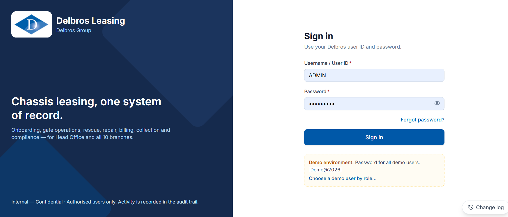
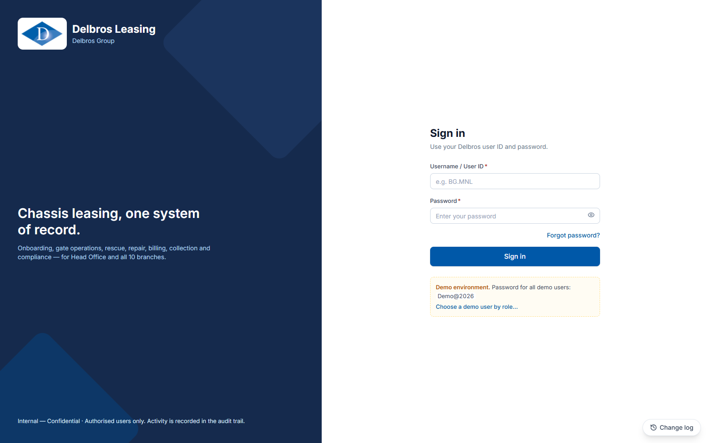
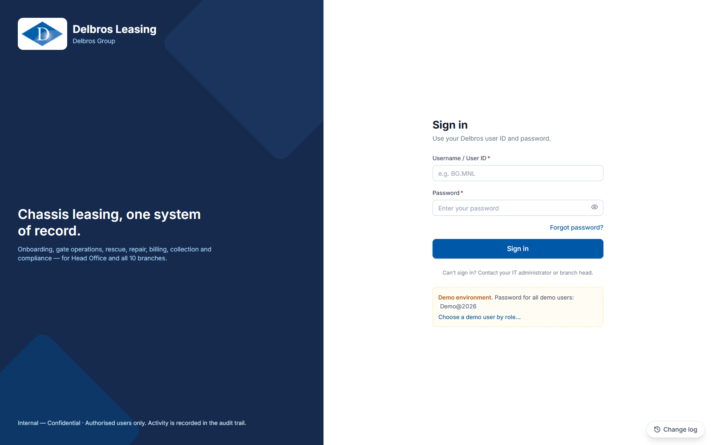
2 · Internal Dashboard BR-06, BR-01/02/04/05
Reviewer’s verdict: Partial. The approvals banner now lists every waiting approval (up to 5, then '+N more') with its type, amount and due/escalated flag. Active EWAs show the time left and the expiry time. Financial and risk tiles stay on the Executive dashboard.
| Review item | Status | What was done · how to check |
|---|---|---|
| Approvals banner says 4 but lists 3 | Fixed | Dashboard → the banner now shows one line per approval: type badge, title, amount (when there is one) and 'due …' or 'Escalated'. All 4 IT Administrator items are listed. Past 5 items it says '+N more in the inbox'. |
| Procurement approvals: type and amount not shown | Fixed | Each banner line has a type badge, and the peso amount when the approval has one. |
| Active EWA expiry / countdown (BR-06) | Fixed | Active EWAs panel → each EWA shows 'Xh Ym left · until dd-Mon-yyyy HH:mm' under the client name. It turns amber under 3 hours and red once expired. |
| Overdue receivables, holds, low e-wallets, late encoding, expiring contracts, compliance counts, utilisation, owner split, period filter | Open | These are already on Reports → Executive (Overdue, Clients on hold, Negative wallets, Partner-owned, Utilisation, the compliance expiry buckets and the Period filter). Recommendation: keep this page as the daily operations dashboard. If the client wants a risk strip here as well, add one row of drill-down tiles. |
| Empty and error states | Already built | Panels show 'No active EWAs.' and 'No open rescues.' when empty, and the banner is hidden when nothing is waiting. |
| Fleet 18/24 vs DCIR 19/23 (DW-MNL-1003) | Open | Chassis master vs gate status. Gate In shows DW-MNL-1003 on hire, which supports the portal. This belongs to the chassis / DCIR owner (another group). The client needs to confirm the correct status. |
| RSC-000041 cancel in Audit log vs Requested on Dashboard | Open | Audit-log seed is outside this group's screens; flagged for the audit/rescue owner. |
| Manila time for all users | Answered | All dates are formatted in Asia/Manila (formatDateTime), whatever the user's device time zone. |
| Rescue 0 / Parked 0 / Breakdown 6 vs In Repair 6 | Answered | These are separate statuses that happen to be equal in the demo: Breakdown units are waiting for a job order, In Repair units have one in progress. The tiles add up to the fleet of 60. |
| Branch filter, role variants, dashboard type | Answered | This is the daily operations dashboard. The Executive dashboard (SCR-45) is separate. Panels show only for roles with the matching permission, and the data follows the user's branch scope. Variants per role still need client confirmation. |
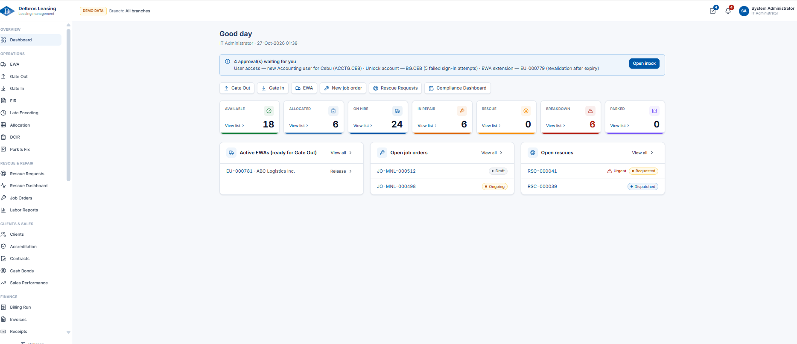
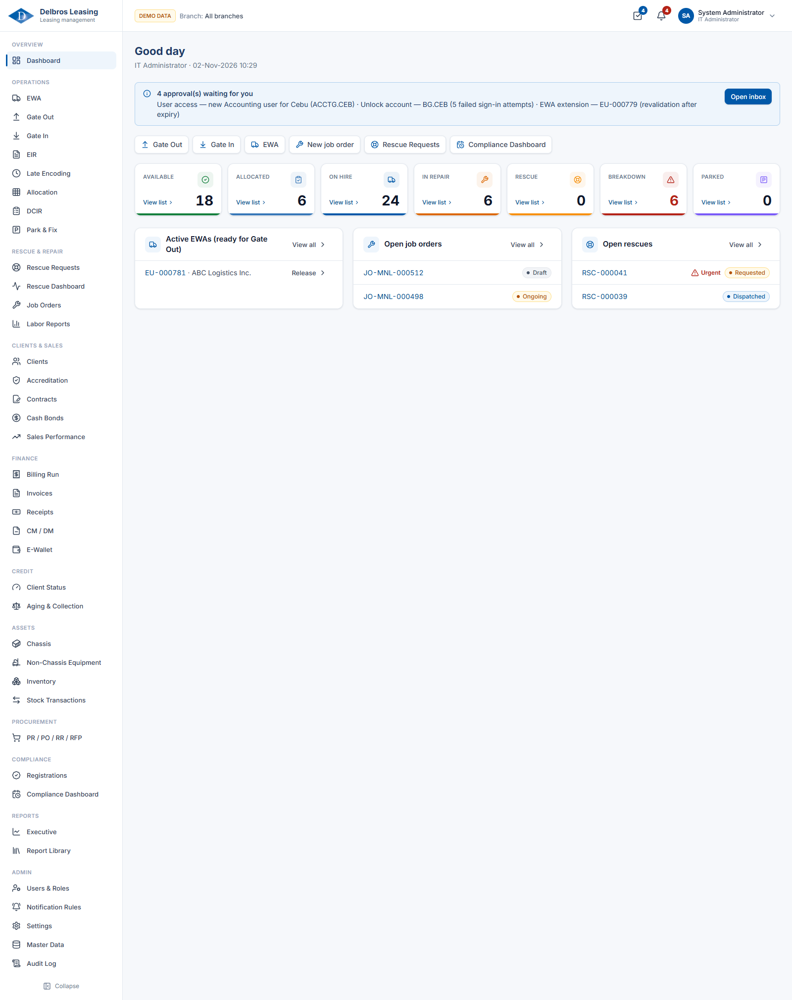
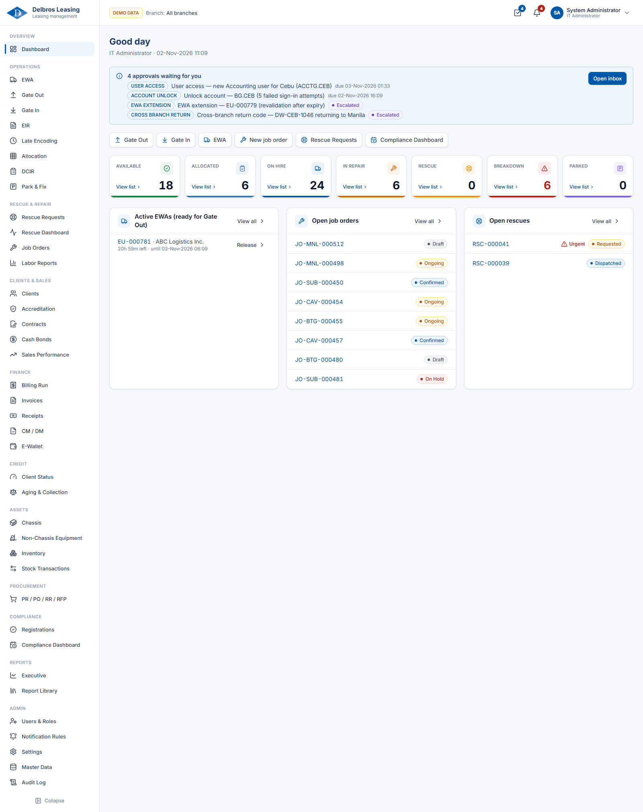
3 · My approvals SUP-02, BR-06, BR-16
Reviewer’s verdict: Partial. New Branch column, 'Step n of m · next: …' under the current step, and escalated rows now show when they were due. Approve/Reject (reason required to reject) was already in the row drawer.
| Review item | Status | What was done · how to check |
|---|---|---|
| Approve / Reject / Return actions; mandatory reason on reject | Already built | Click a row → drawer with the full approval timeline, a Comment box, and Reject (disabled until a comment is entered) and Approve. A separate 'Return' action is OPEN: it needs a rule for which step the request goes back to. |
| Request detail view | Already built | Row → drawer shows type, amount, requester, submitted time, branch, the step with due time, a link to the record (for example 'Open ewa EU-000779') and the timeline with each signer's comment. |
| Approval chain, step n of m, next approver | Fixed | The Current step column now reads, for example, 'IT / authorised revalidation — Step 2 of 2' or 'IT issues the approval code — Step 3 of 3', plus 'next: …' when steps remain. The drawer shows the same, and the timeline lists every step. |
| Escalated rows show no due time | Fixed | The SLA column on escalated rows now shows 'Escalated' plus 'was due dd-Mon-yyyy HH:mm' in red. The drawer shows 'Escalated — was due …'. Who it escalates to is set per event in Notification Rules; the targets are still marked Proposed. |
| Branch column | Fixed | New Branch column (CEB for the user access and unlock requests, MNL for the EWA extension and the cross-branch return). It shows HO when the request has no branch. |
| Amount not demonstrated / financial approval examples | Answered | The IT Administrator's own queue has no financial items. 'Submitted by me' shows the setting change at ₱15,000. Signed in as Finance Manager or C&C Officer, the queue shows Hold lift ₱308,000 and a Cash bond withdrawal of ₱18,880, and Treasury sees the late-encoding Credit Memo for LE-00099 (the Deputy Yard Manager has already approved the first step). Which tiers apply (the gap between ₱500k and ₱1M) is still open. |
| 4 pending vs dashboard 3 listed | Fixed | The dashboard banner now lists all 4 (see Dashboard). |
| Escalated items in both Pending and Escalated tabs | Answered | By design: Escalated is a filtered view of overdue items that are still waiting for you. They stay under Pending until someone acts. |
| SLA per type (24 h user access vs 8 h unlock, 4 h EWA revalidation) | Open | The SLA times are demo values. Recommendation: confirm one SLA per approval type in Notification Rules, under 'Escalate after (hours)'. |
| Cross-branch code: where issued / entered | Already built | Gate In → set the Returning branch to a different branch → find the unit. A 'Cross-branch return' banner with a Request code button appears, and a required 'Cross-branch approval code' field is added to Truck & condition. Whether the code expires is still OPEN. |
| Reassign / delegate, bulk approve, date range & status filter, priority | Open | Recommendation: add delegation (out-of-office) in Users & roles and a date-range filter. Bulk approve only for low-risk types, after the client agrees. |
| History tab content and audit link | Already built | History tab → row → drawer timeline shows approver, decision, time and comment. Decisions are also written to the Audit log. |
| Who sees what per role | Answered | Each user sees only the steps whose roles match their own (Finance Manager, C&C, DYM, Treasury, …). Signing in as a different demo user shows that user's queue. |
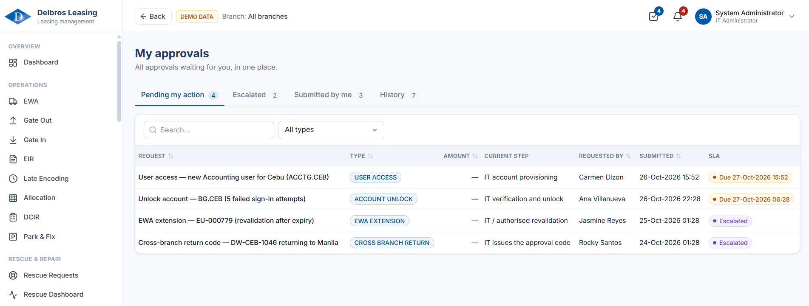
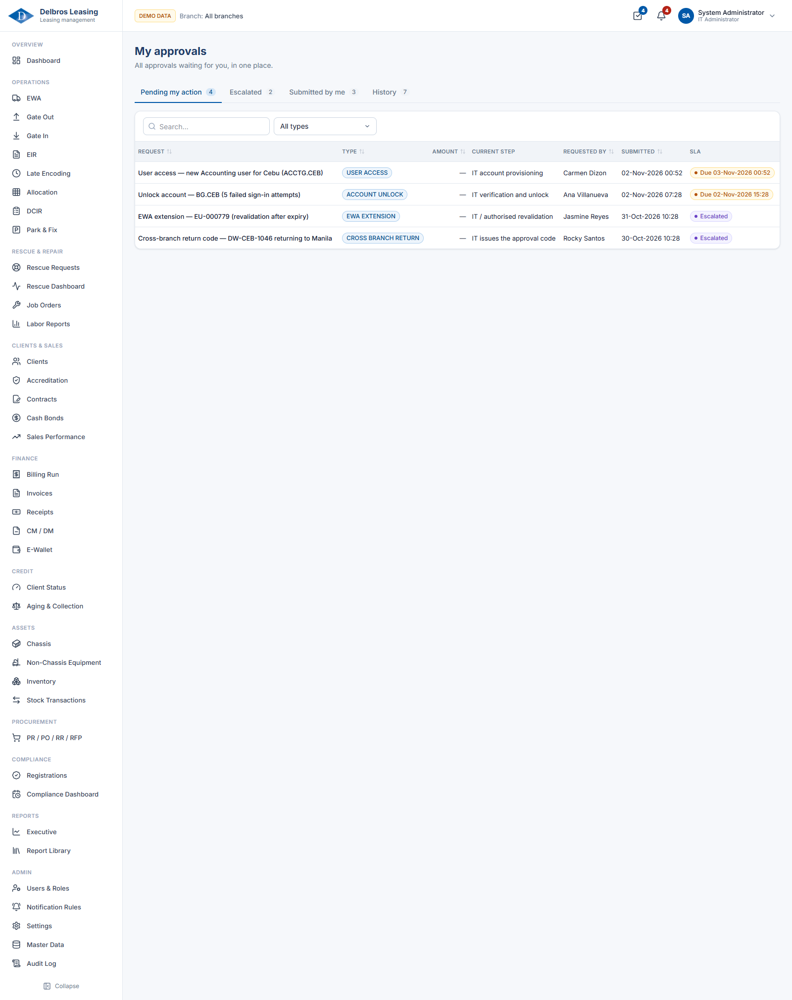
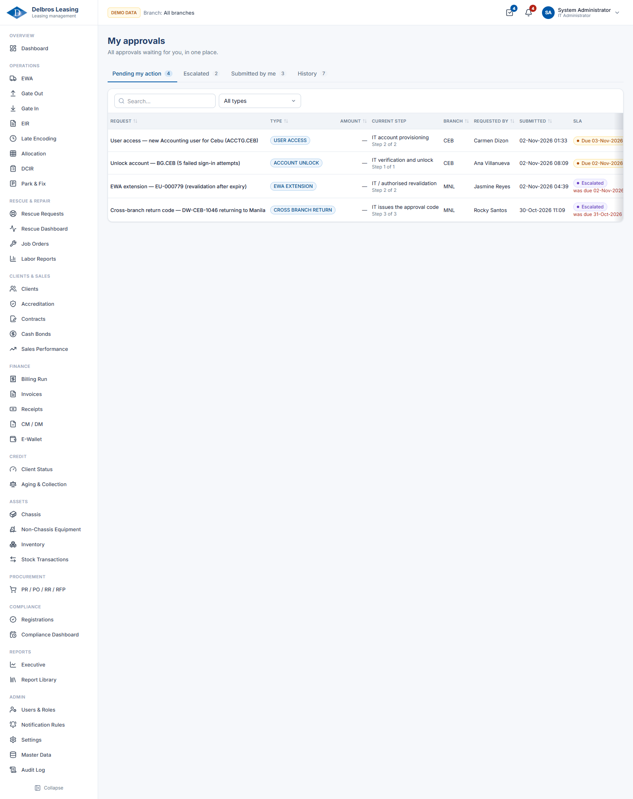
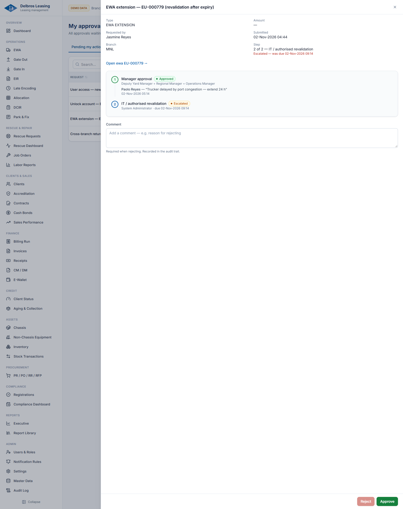
4 · New EWA dialog DBL-GAT-001…003, BR-06
Reviewer’s verdict: Partial. The required footer now includes Pickup branch. Each line warns about quantity over availability and duplicate types and blocks Create. The success banner shows the EU number, valid-until time, branch and a View EWA link.
| Review item | Status | What was done · how to check |
|---|---|---|
| Required footer omits Pickup branch | Fixed | Pickup branch is now part of the required check. It is pre-filled with the user's branch, so it only appears in the footer if cleared. |
| Accredited / active client check | Already built | Client type-ahead greys out clients that are not Active, with the reason (On credit hold, Blacklisted, Not yet accredited, Inactive). A red 'Client not eligible' banner also shows. |
| Hold, e-wallet, contract checks | Already built | CreditGateBanner shows hold / e-wallet blocks under the contract field, and Create is disabled while the gate is blocked. Only Active contracts are listed ('This client has no active contract — an EWA cannot be created'). Whether e-wallet below the minimum is a block or a warning comes from the credit-gate settings. |
| Quantity vs availability; duplicate equipment types | Fixed | Each type option shows 'N available at MNL' (0 = disabled). A line now shows 'Only N available at MNL' when the quantity is higher, or 'Already on another line — change the quantity there' for a repeated type, and Create EWA stays disabled. The API also rejects both cases: a quantity over availability, and (since verification) the same type on two lines. A maximum per EWA is OPEN. |
| Remove line control | Already built | A trash icon (tooltip 'Remove line') appears once there are 2 or more lines. |
| Success screen with EU number, expiry and notification confirmation | Fixed | After Create EWA: green banner 'EWA EU-000782 created — Valid until dd-Mon-yyyy HH:mm (24 hours) for pickup at MNL. Notifications sent to the client and internal recipients.' with View EWA and Dismiss. Print / share is OPEN. |
| Validation error states | Already built | Pressing Create EWA with blanks shows a red message under each missing field. The footer lists what is still required. |
| Unique EU number visible | Answered | The number is assigned on save, so two users can never get the same one. It appears in the success banner. |
| Trucker mandatory at creation | Open | Client decision. Recommendation: keep it required for internal creation but allow 'To follow' from the portal, since it is checked again at Gate Out. |
| Head Office not offered as pickup depot | Open | Confirm with client (HO has no yard in master data). |
| Driver licence format validation | Open | Recommendation: validate the LTO format (Xnn-nn-nnnnnn) once the client confirms it. |
| Remarks field | Open | Optional field; add if the client wants it. |
| Equipment type names are placeholders (Q-CLT-01) | Open | Waiting for the client's list. |
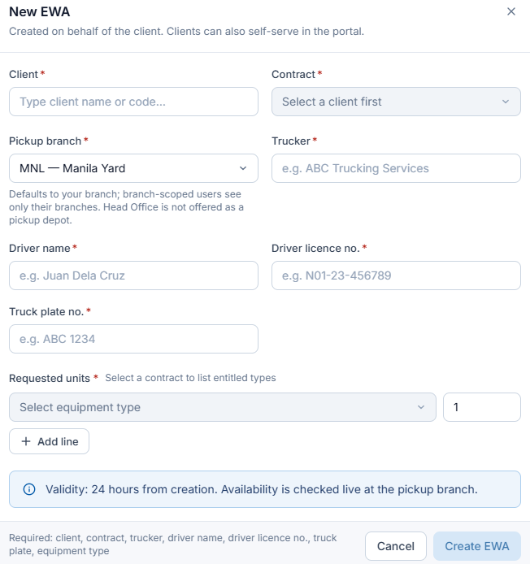
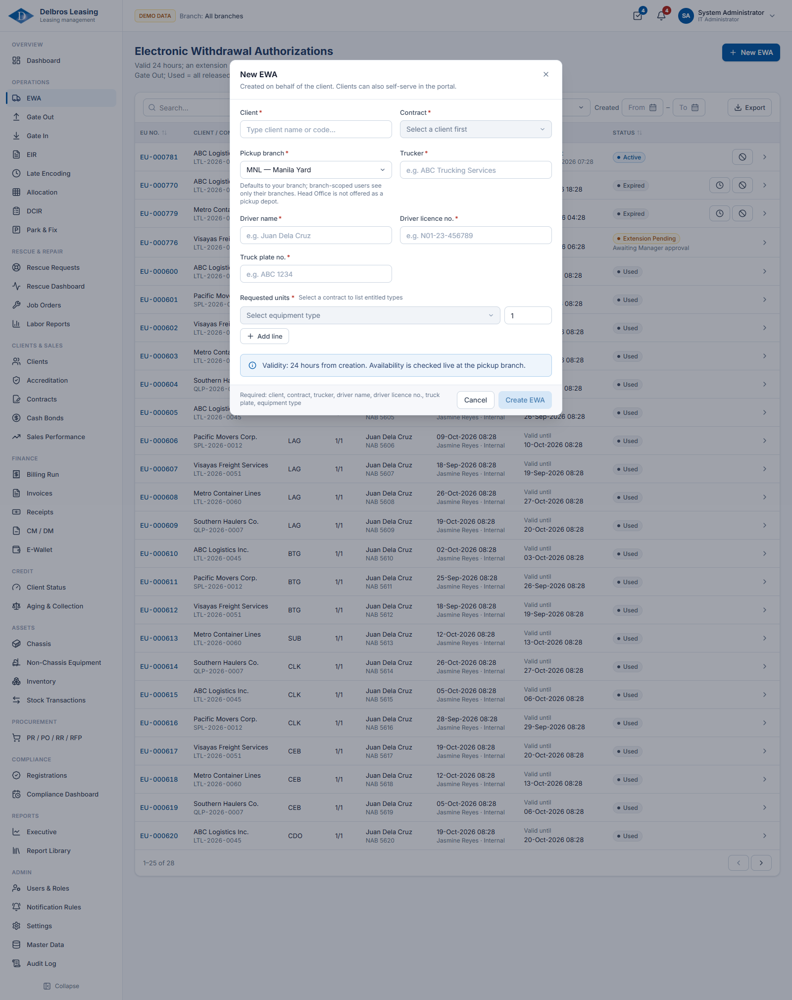
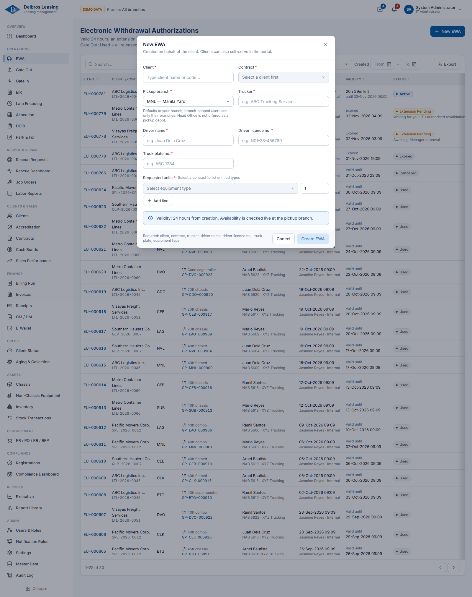
5 · EWA list DBL-GAT-001…003, DBL-NOT-006, BR-06
Reviewer’s verdict: Partial. EU-000779 is now the extension waiting for IT revalidation, and its request comes after the EWA expired, so it matches My approvals. The list shows equipment types, trucker, gate-pass links and the extension count. Row buttons now have text labels.
| Review item | Status | What was done · how to check |
|---|---|---|
| EU-000779 vs EU-000776 mismatch; request dated before the EWA | Data fixed | EU-000779 was created 31 h ago, expired 7 h ago and is now 'Extension Pending — Waiting for you: IT / authorised revalidation'. Its request (WF-EWX-2) was submitted 6.5 h ago, after expiry, and the manager approved it 6 h ago. EU-000776 is a separate request still awaiting Manager approval. That is why it is not in the IT Administrator's My approvals. |
| Branch codes LAO / BTO should be LAG / BTG | Already built | The current seed uses the master codes everywhere (LAG Laguna, BTG Batangas). LAO / BTO appear nowhere in the code. |
| Equipment type not shown, only used/requested | Fixed | The Units column now reads, for example, '0/2 40ft combo' per line. |
| Trucker and driver licence | Fixed | The Driver / truck / trucker column adds the trucker under the plate. The licence is in the detail drawer (row → Details). |
| Gate Out link (gate pass / EIR) | Fixed | Used / Partially Used rows list their gate-pass numbers under Units. Each links to EIR view, and the tooltip shows the release time and chassis. The drawer also has a 'Gate passes' tab. |
| Extension record: approver, time, count | Fixed | The Status column shows 'Extended ×n' when an EWA has been extended. Row → Extensions tab shows each request with the approver, time and comment for every step. |
| Unlabelled revalidate / cancel icons | Fixed | Row buttons now read 'Extend' (clock) and 'Cancel' (ban) and have tooltips. 'Revalidate' / 'Approve' only appear for the person whose step is next. |
| Cancel needs reason, confirmation, Cancelled filter | Already built | Cancel → confirm dialog with a required reason. The status filter includes Cancelled. EU-000765 is a cancelled example, and its drawer shows who cancelled it, when and why. |
| Revalidate only after manager approval | Answered | The clock on Expired rows is 'Request extension', not revalidate. Revalidate appears only on 'Extension Pending' rows once the manager has approved, and only for the IT / authorised user. |
| Row order unclear | Already built | Rows are sorted newest first by created time, and EU numbers follow creation order (EU-000600 is the oldest). |
| Date format differs | Already built | All dates use dd-Mon-yyyy HH:mm. |
| Same driver on all Used rows | Already built | The seed now rotates four drivers (Juan Dela Cruz, Mario Reyes, Ramil Santos, Arnel Bautista). |
| Detail view per row | Already built | Row or chevron → drawer with Details, Gate passes, Extensions and Audit trail tabs. |
| Notification sent status | Open | Recommendation: add a 'Notified' line (client + internal, time) in the drawer from the notification log. |
| Pagination / result count / empty state | Already built | '1–25 of N' with paging. Empty state: 'No EWAs match the filters'. |
| Only 6 branch codes visible vs 10 | Answered | Only branches with EWAs appear in the list. The branch filter offers all 10. |
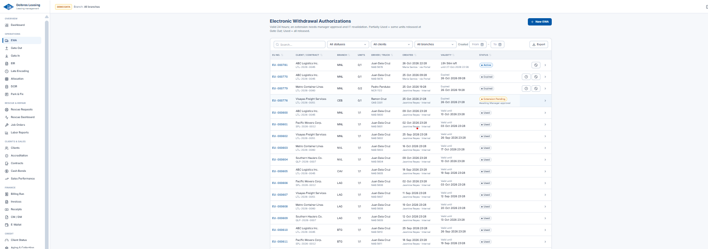
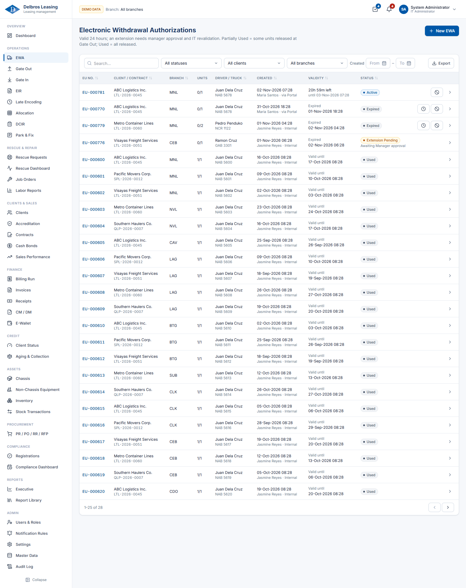
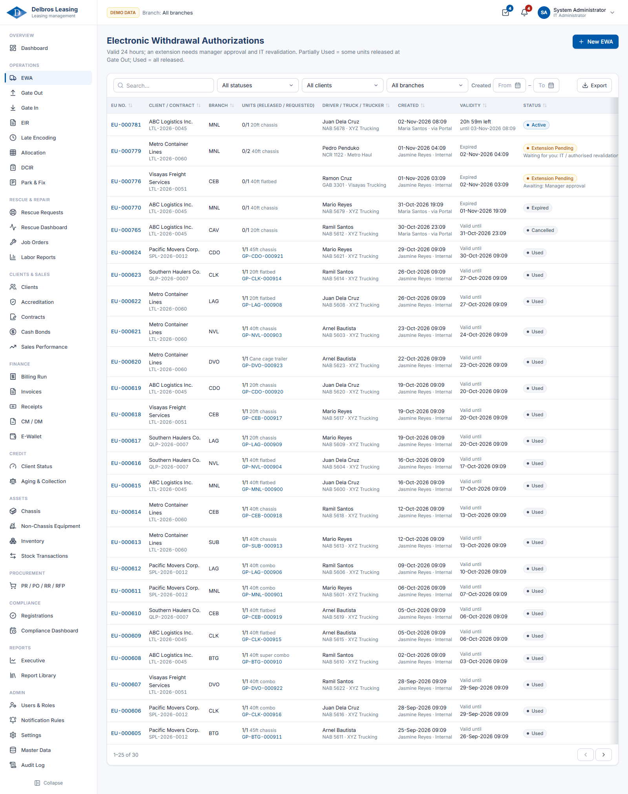
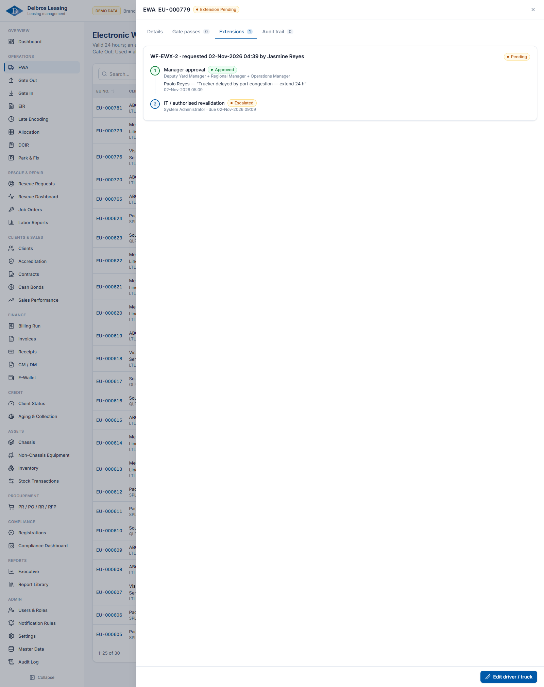
6 · Gate Out entry SCR-15, BR-01, BR-06
Reviewer’s verdict: Partial. The release form was already built: Release opens it with the gate pass, equipment, trucker, OR/CR, licence check, checklist, photos, signature and EIR. The list now also shows the client code, equipment type and the user's branch scope.
| Review item | Status | What was done · how to check |
|---|---|---|
| Release form (Gate Pass #, Equipment #, Trucker, OR/CR, licence, checklist, signature, EIR) | Already built | Gate Out → Release on EU-000781 opens the form. The EWA card shows Client code, Contract, Branch, Still to release, Gate pass no. (GP-MNL-###### assigned on release), Releasing user, Release time and Depot. Equipment & truck has an Equipment # (chassis) selector plus Trucker, Truck plate, Truck OR/CR, Driver name and Driver licence no., each checked against the EWA. Then the Inspection checklist with Roadworthy / Unroadworthy, remarks and photos, a driver signature pad, and 'Release unit & generate EIR'. The success page gives Gate pass, EIR and Print EIR. |
| Validation outcome / invalid or expired EWA | Already built | Type an unknown EU number → 'EWA not found' with 'Find the EWA'. An expired EWA → 'EWA expired — release blocked' with 'Request extension →'. A valid EWA → EWA card with a status badge and countdown. |
| Hold check (BR-01) and override path | Already built | Client on Hold → red 'Release blocked — client account on Hold' banner with the override path (settle and lift through C&C tiered approval) and a link to Client status. The release button is disabled. |
| Client code next to name | Fixed | The ready-for-release list now shows the client code under the name. The release form already showed it. |
| Partially used EWAs stay listed | Already built | The list includes Active and Partially Used EWAs, and the heading now says so ('stays listed until every unit is released'). The Released column shows the type per line. |
| Branch scoping and branch badge | Fixed | The list follows the user's branch scope (API inScope). The heading now shows the scope ('all branches' for HO/admin, else the branch codes), and the Branch column shows each EWA's branch. |
| Empty state | Already built | 'No active EWAs'. |
| Released-by user and time | Already built | Shown on the EWA card (Releasing user, Release time captured on release). Stored on the gate pass and EIR. |
| Photos of the unit | Already built | Optional 'Add photos (camera or file)' on the Inspection section. Whether photos are mandatory is OPEN. |
| Late encoding link (BR-05) | Answered | Releases recorded after the event are corrected under Operations → Late Encoding. That screen applies the 7-day rule. |
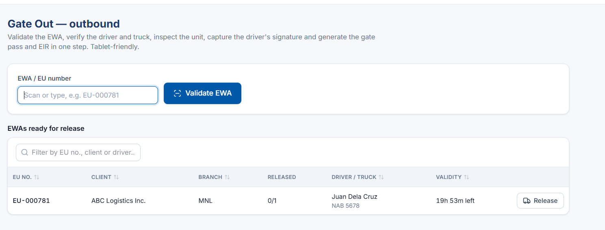
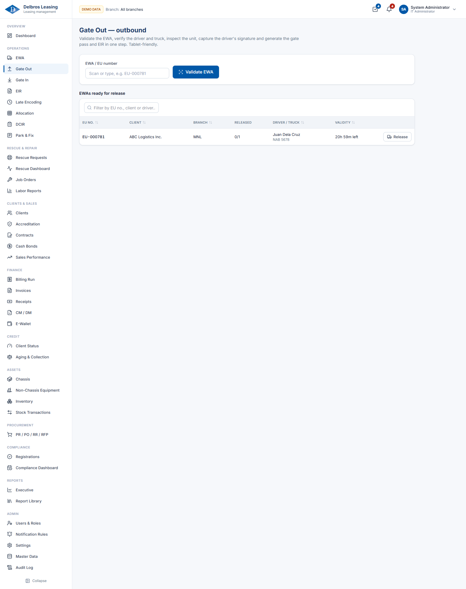
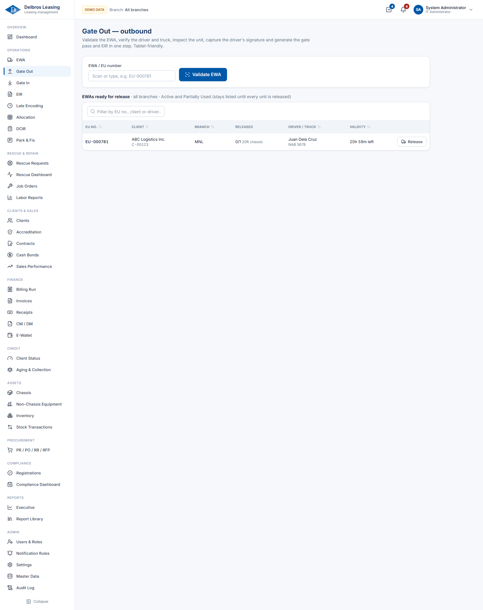
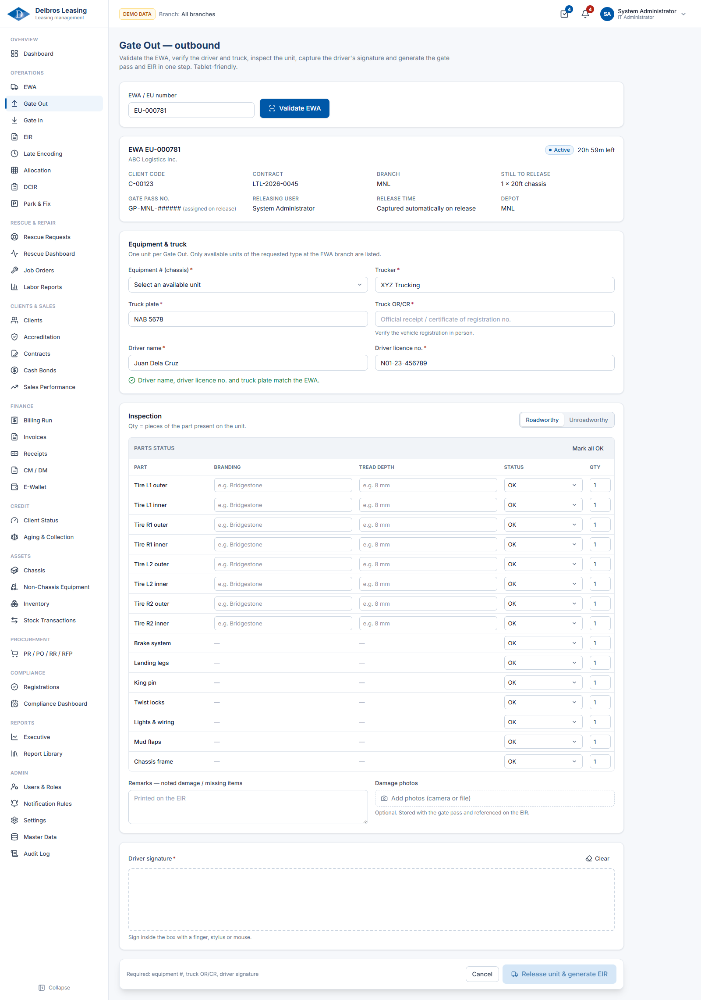
7 · Gate In entry SCR-16, DBL-GAT-005/010/011/014, BR-08, BR-16, BR-17
Reviewer’s verdict: Partial. The Receive form, cross-branch code entry and Force Inbound request were already built. The on-hire list now shows the actual out date (with the encoded date when they differ), days on hire and the truck plate.
| Review item | Status | What was done · how to check |
|---|---|---|
| Receive form (truck plate, driver, licence, flat tires, vandalised, Parts Status, Roadworthy, signature, EIR) | Already built | Gate In → Receive on any row. The unit card is auto-filled (chassis, client, contract, gate out, origin, EWA, inbound GP number, receiving user). Truck & condition has truck plate, driver and licence pre-filled from the gate-out, plus Flat tires Y/N with count and Vandalized Y/N. Then the Parts status checklist with chargeable amounts, condition notes and photos, a General assessment (Unroadworthy → Breakdown, pick repair systems so draft JOs are created), the signature, and 'Finalise inbound & generate EIR'. |
| Cross-branch code entry and chain (BR-16) | Already built | Set the Returning branch to a different branch → find the unit. A 'Cross-branch return' banner shows the chain (BG → Regional/Ops Manager → APS → IT) and a Request code button. A required 'Cross-branch approval code' field is added. Whether the code expires is OPEN. |
| Force Inbound screen (indemnity, proof, approval to President) | Already built | 'Force inbound…' (header, shown only to roles with the permission) opens a form: chassis, indemnity settled, settlement reference (OR), reason, and the approval chain APS → Ops Manager → VP → President. |
| Days on hire / overdue indicator | Fixed | New 'Days on hire' column (sortable). There is no overdue threshold, because the rule is unconfirmed. |
| Truck plate in the list | Fixed | The truck plate now shows under the driver name. |
| Contract type in the list | Open | Contract shows on the Receive card. Add a column if the client wants it. |
| Billing cannot be finalised while On-Hire (BR-08) | Answered | The 'On finalise' banner explains that on-hire billing stops at the actual return time. Billing only closes once Gate In is finalised, and the chassis leaves On Hire at that moment. |
| Late encoding warning at Gate In | Open | Recommendation: if the return happened on an earlier day, send the user to Late Encoding. The 7-day split is already applied there. |
| Error states | Already built | Unknown gate pass or chassis → 'No open Gate Out found' with guidance to use Force Inbound or Late Encoding. Missing inspection data → required footer, and Finalise stays disabled. |
| LAG vs LAO branch code | Already built | LAG / BTG everywhere (see EWA list). |
| Out dates show the encoded time, not the actual one | Fixed | 'Out since' now uses the gate pass's actual gate-out and shows 'encoded …' underneath when the two differ. The actual date changes once a late encoding is posted (auto-corrected) or approved. While a Credit Memo is pending it still shows the encoded date (DW-MNL-1005 / LE-00099). |
| DW-CEB-1046 on later page; branch scope | Answered | Search 'DW-CEB-1046' to find it. The list covers all on-hire units because a return may arrive at any branch. |
| Returns never blocked by credit hold | Open | Client confirmation of the rule (BR-01 only blocks release). |
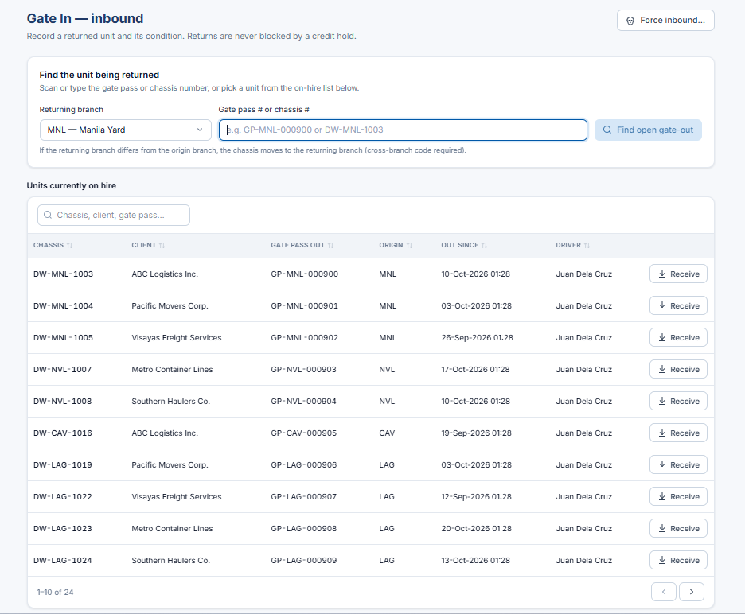
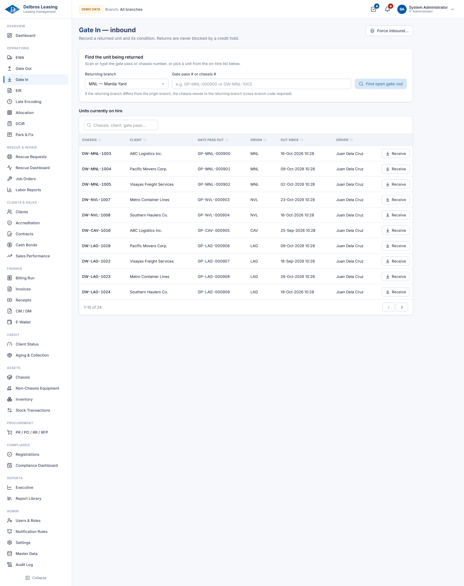
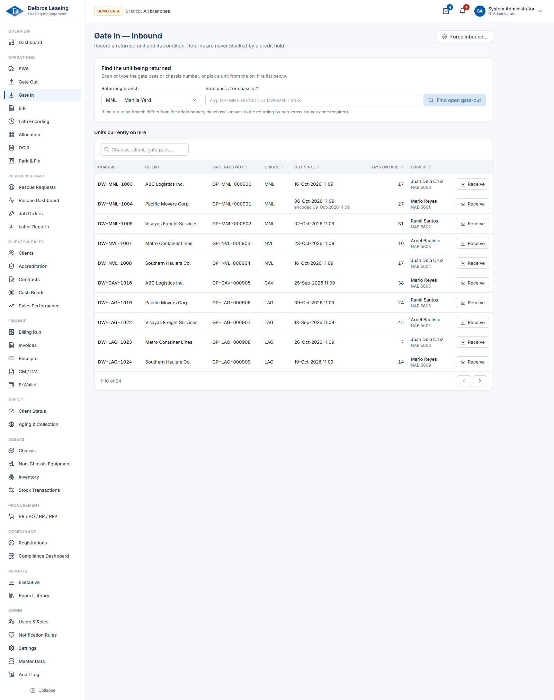
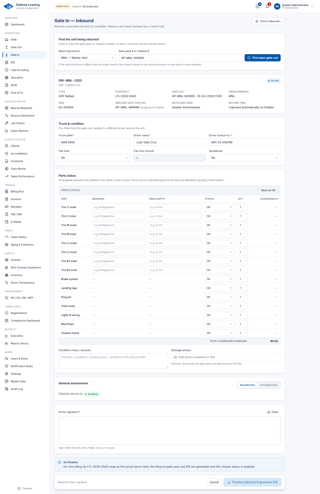
8 · EIR view / reprint SCR-17, DBL-GAT-006/007/008/012
Reviewer’s verdict: Partial. The detail drawer, reprint-with-reason dialog, reprint log and a returned example were already built. The Late-encoded chip now shows days late and the path, and the out date shows the actual time.
| Review item | Status | What was done · how to check |
|---|---|---|
| EIR detail (checklist, signatures, damage, notes) | Already built | Click a row → drawer. The EIR tab has a Gate Out block and a Gate In block, each with trucker, plate, OR/CR, EU number, driver, licence, inspection checklist, remarks, photos, signature image and the Roadworthy badge. Other tabs: Chassis movement history and Reprint log. |
| Reprint reason dialog, who / when | Already built | Reprint → dialog with a required reason (For client signature / For billing / Lost or damaged / Other). The copy carries a REPRINT watermark with number, user and time. The Reprint log tab and the 'Reprinted ×n' link show the history. |
| Returned example with In gate pass and Roadworthy outcome | Already built | EIR-MNL-000180 / GP-MNL-000880 → GP-MNL-000881 is Returned, with an in date and a Roadworthy assessment. Filter Status = Returned. |
| Late-encoded chip: days late, CM need, approval status | Fixed | The chip now reads 'Late-encoded · 3 d' with 'Billing auto-corrected', or 'Late-encoded · 9 d' with 'Credit Memo · pending DYM / Treasury'. The tooltip shows the LE reference and actual date. The out date shows 'actual dd-Mon' under the encoded time. |
| No matching record state, pagination/count | Already built | Empty state 'No matching EIR found' with a hint, and a '1–N of N' footer. |
| Status filter values | Already built | On hire, Returned, Force Inbound, Late-encoded. |
| Truck plate and trucker | Already built | In the drawer, on each gate-pass block. |
| Gate-pass format GP-MNL-000900 vs GEN0001/CEB0001 | Open | Client to confirm the final format. The prefix comes from Branches master data (gatePassPrefix). |
| Branch codes LAO/BTO vs LAG/BTG | Already built | One master list, LAG / BTG everywhere. |
| Same driver on every row | Already built | Drivers now vary. |
| Signature on reprint | Open | The reprint shows the stored signature with a REPRINT watermark. Whether a fresh signature is needed for 'For client signature' reprints needs confirmation. |
| Equipment type names (Q-CLT-01) | Open | Client to confirm the 8 names. |
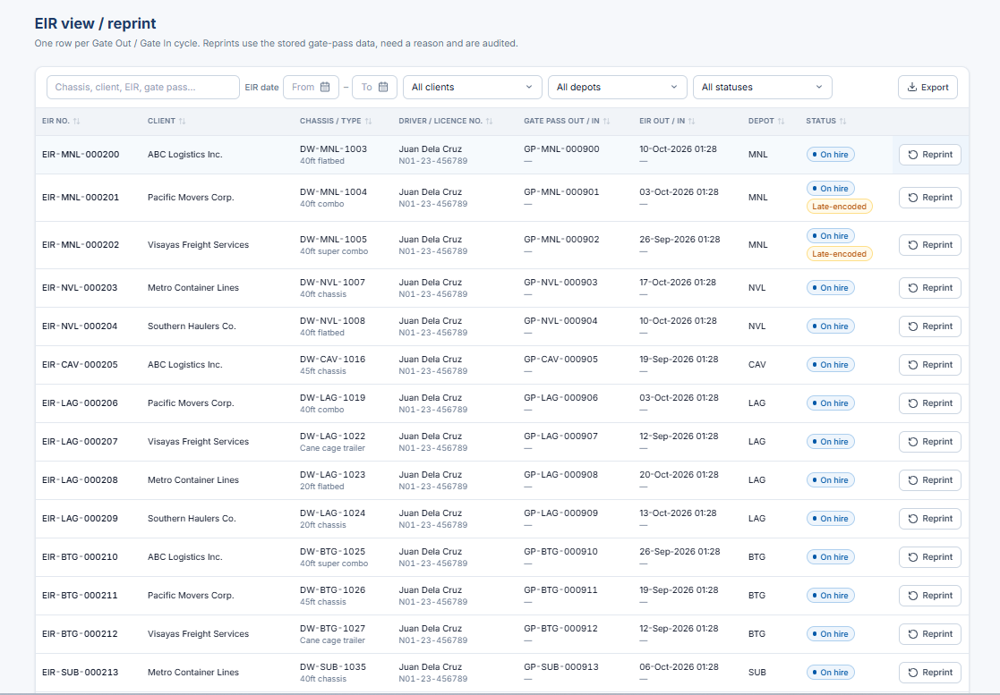
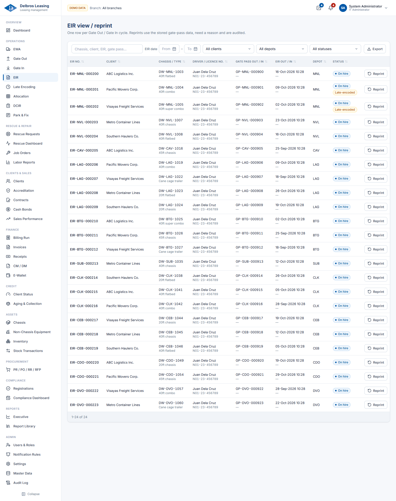
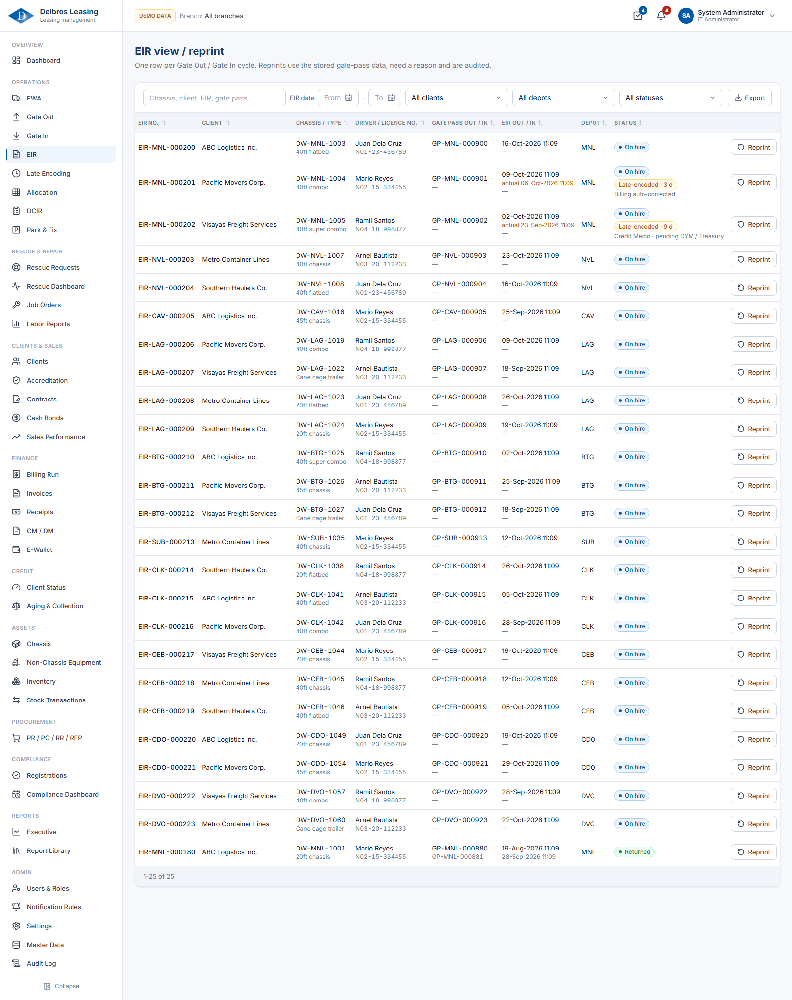
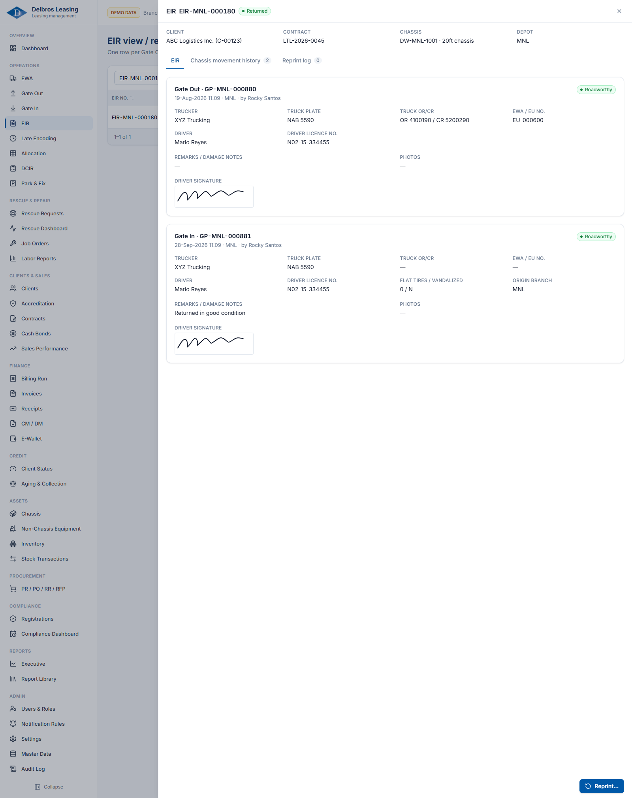
9 · Late encoding list SCR-18, DBL-GAT-008/009, BR-05
Reviewer’s verdict: Partial. New Depot column. The EWA dates for the two late-encoded releases now fall before the actual gate-out, and the auto-corrected one bills from the actual date. The drawer already showed the DYM → Treasury chain, the held invoice lines and the CM link.
| Review item | Status | What was done · how to check |
|---|---|---|
| Actual dates before the EWA was created | Data fixed | The EWAs for the two late-encoded releases are now created 2 h before the actual (paper) gate-out, so the release falls inside the 24-hour validity. LE-00098 (3 days, auto-corrected) has its gate-pass actual time set to the corrected date, which is what the API does on posting. |
| Other screens use the encoded date | Fixed | Gate In 'Out since' and EIR view now show the actual date, with the encoded one underneath. |
| DYM step not shown / approval chain | Already built | The status reads 'Pending DYM' or 'Pending Treasury' depending on the workflow step. Row → drawer → Approvals card shows Deputy Yard Manager then Treasury, with approver, time and comment. DYM can Approve or Reject from the drawer, and Review appears on the row. |
| Credit Memo number / amount / link | Fixed | The Credit memo column links to the CM once approved. While approval is pending it shows 'CM-000006 pending' (linked to the memo) with 'n invoice line(s) held' linked to the invoice. The drawer lists the held lines with amounts and shows 'CM-000006 (pending approval)' instead of 'Created on final approval'. CM-000006 is the memo for LE-00099 (the earlier note said CM-000009, which was wrong). |
| Branch / depot column | Fixed | New Depot column (the gate pass's branch). |
| Evidence attachment | Already built | Optional attachment on the form, shown in the drawer (LE-00099: outage-report-ITSR-0142.pdf). |
| Reject / return states | Already built | Rejected status (red). Reject requires a reason. Held lines stay held for C&C review, which is marked as pending confirmation on screen. |
| Billing impact (billed days before / after) | Open | Recommendation: show the days and amount added in the drawer, calculated from the held invoice line and the contract rate. |
| My approvals has no late-encoding item for IT Admin | Answered | Correct for this role. It appears for DYM, then Treasury, and both are notified. |
| Who can record | Answered | Permission gate.late_encoding (add) controls the button. Which roles hold it is set in Users & roles and needs client sign-off. |
| Pagination / empty state | Already built | 'No late encodings' plus standard paging. |
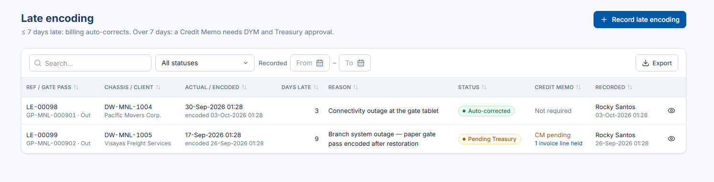
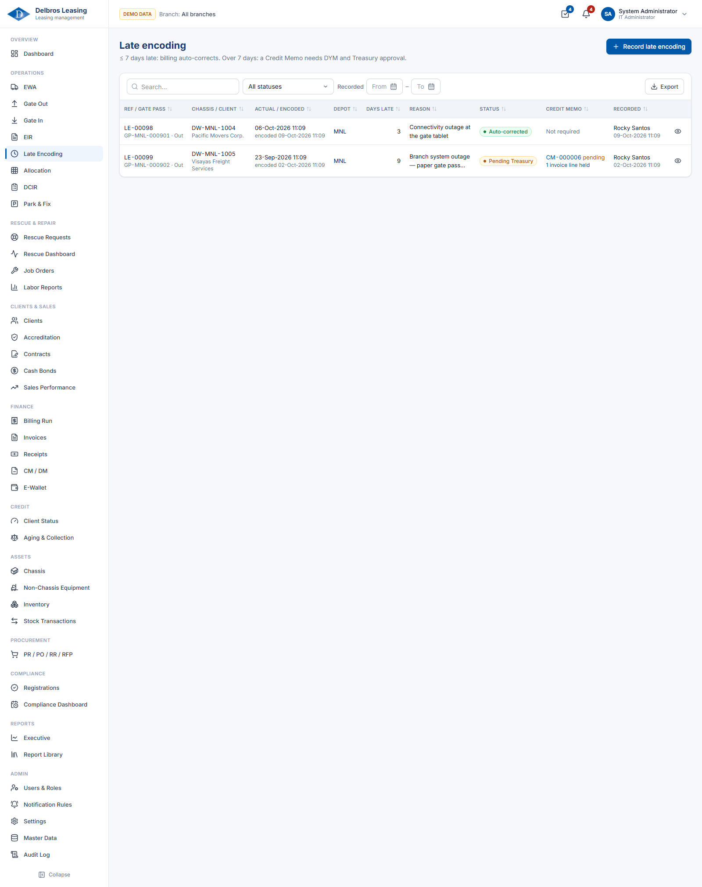
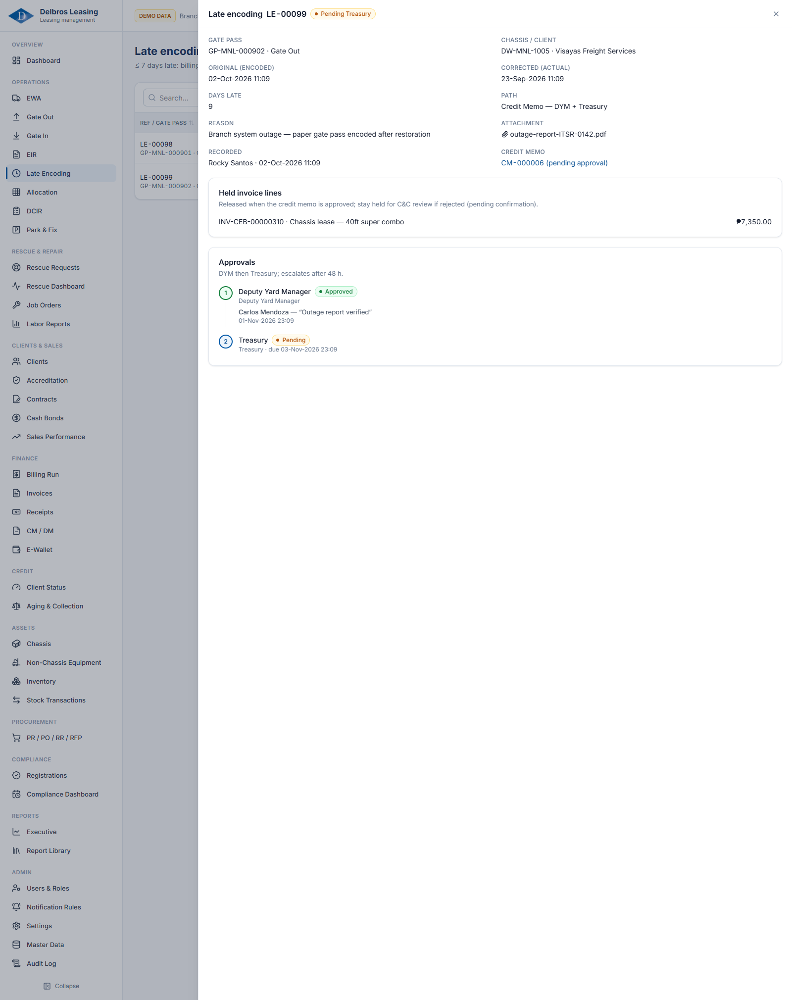
10 · Record late encoding dialog SCR-18, DBL-GAT-008/009, BR-05
Reviewer’s verdict: Partial. The form now shows the outcome as you type ('3 days late: billing will be corrected automatically' / '9 days late: Credit Memo needed, sent to DYM then Treasury'). The button reads 'Submit for approval' when over 7 days. Selecting a gate pass shows its context, and dates are validated.
| Review item | Status | What was done · how to check |
|---|---|---|
| Outcome preview as the date is entered | Fixed | Pick a gate pass and enter the actual date. A green banner 'N days late: billing will be corrected automatically', or an amber 'N days late: Credit Memo needed, sent to DYM then Treasury', explains what happens next. |
| Button text over 7 days | Fixed | Reads 'Submit for approval' when over 7 days, 'Post correction' otherwise. |
| Corrected-date validation | Fixed | A future date shows 'Cannot be in the future'. A date on or after the encoded date shows 'Must be earlier than the encoded date' (the API enforces the same rule). The picker's max uses the user's local clock, not UTC. If the actual Gate Out is before the EWA was created, a non-blocking warning appears (rule pending confirmation). Contract-start and closed-period checks are OPEN. |
| Context after selecting the gate pass | Fixed | A summary box shows Chassis, Client, Direction, Branch, EWA and Driver / truck. Original (encoded) date fills in automatically. |
| Gate pass selector long / needs search | Fixed | Options are sorted newest first and show gate pass, direction, branch, encoded time, chassis and client. Force-inbound passes are excluded, and a pass with a pending correction is warned and blocked. A searchable picker with branch/date filters is OPEN. |
| Notifications on submit | Fixed | The banner states that DYM and Treasury are notified and that the request escalates after 48 h. |
| Duplicate / already-corrected gate pass | Already built | 'This gate pass already has a late encoding' warning. The API blocks a second one while the first is pending. |
| Evidence mandatory over 7 days | Open | Client decision. Recommendation: make it required for the Credit Memo path. |
| Billing impact on the form | Open | See Late encoding list. |
| Who can use it | Answered | Permission gate.late_encoding (add); the role list needs client sign-off. |
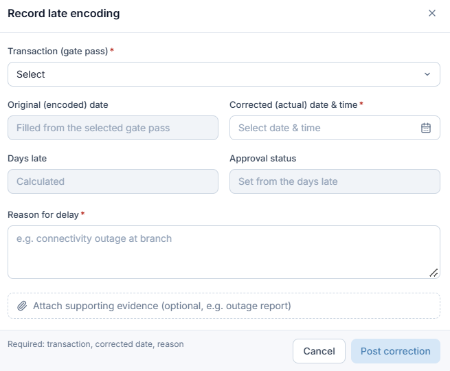
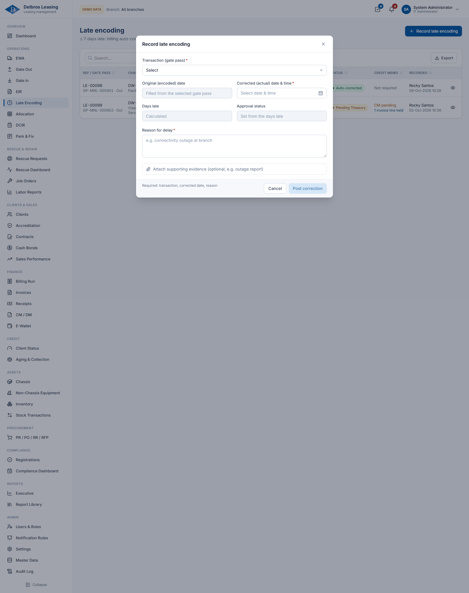
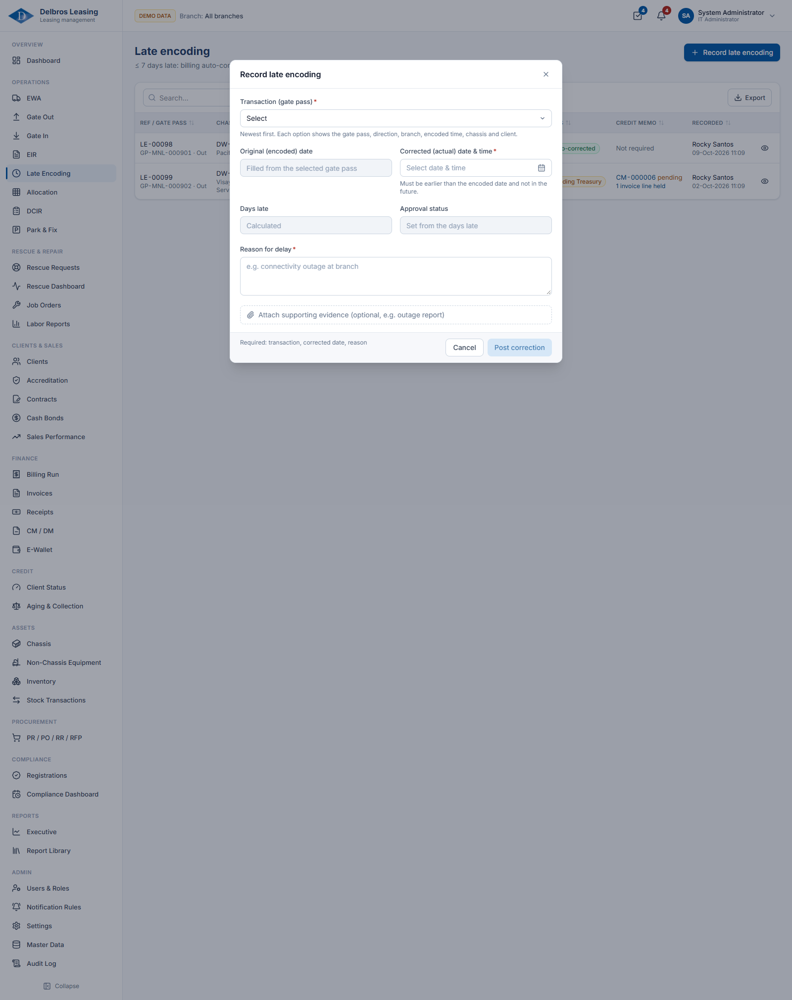
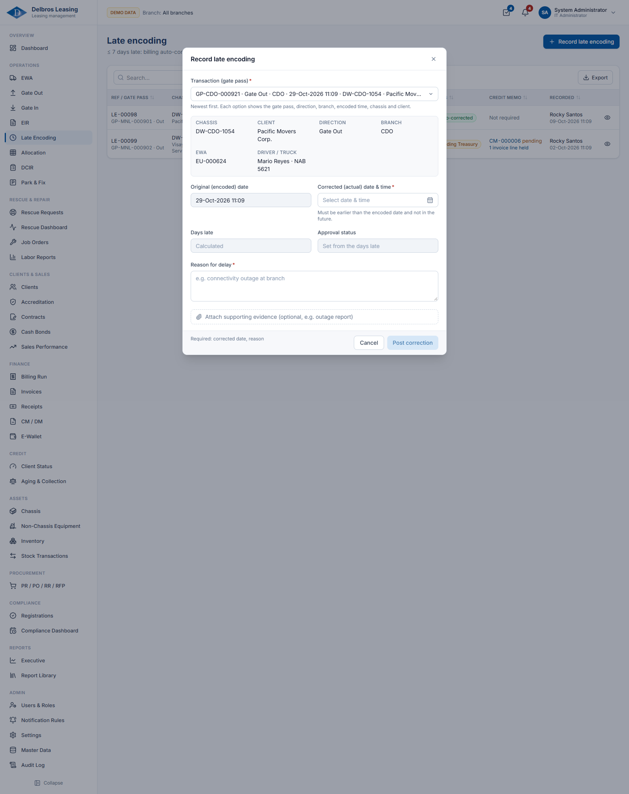
B · Allocation, rescue & repair
11 · Chassis allocation — Availability board DBL-ALO-002/003/004, BR-07, BR-12
Reviewer’s verdict: Partial. Allocated rows now show their UR number, target pickup and return, owner is shown per chassis, OR/CR conflicts are flagged in the Allocation cell and a legend explains the orange ageing numbers and colours; fleet tiles stay 60 = 18/6/24/6/6.
| Review item | Status | What was done · how to check |
|---|---|---|
| Ready-for-sign-off tile / sign-off action not visible (cut-off screenshot) | Already built | Tile 'Ready for sign-off' (4) is the last tile; clicking it filters the TQS units, whose Actions column shows 'Sign off'. The dialog shows open job orders (must be none) and the OR/CR state (must be current) and needs remarks; it is recorded in status history and the audit log. |
| Pickup blank on allocated rows | Data fixed | Every seeded allocation now has a target pickup date (04–07 Nov) and an expected return. Allocation column reads: UR number · Allocated <date> · Pickup <date> · return <date>. |
| Allocation column should show the UR number (link board ↔ pipeline) | Fixed Data fixed | Each of the 6 allocated units belongs to a fulfilled request UR-000020…UR-000025 (ABC, LTL-2026-0045); the UR number is the first line of the Allocation cell ('Ad-hoc (no request)' when none). The pipeline lists the chassis per request. |
| Allocation date vs days in status (MNL-1006: allocated 26-Oct but 38 days) | Data fixed | Days in status of allocated units now count from the allocation date (e.g. DW-NVL-1009 allocated 31-Oct = 2 days). Legend states that days in status count from the last status change. |
| DW-MNL-1006 allocated after its OR/CR expired | Data fixed Fixed | Seed now allocates it on 25-Oct, before the 28-Oct expiry (the API already blocks allocating an expired unit). The Allocation cell shows in red 'OR/CR expired after allocation — renew before Gate Out'. |
| Warn when the return date is near / after OR/CR expiry | Fixed | Allocation cell shows an amber 'Return is after OR/CR expiry (date)' when the expected return is on or after the registration expiry. |
| Legend for orange ageing numbers, red dot and status colours | Fixed | Legend line under the board: orange days = Available longer than the idle threshold (30 d, listed on the DCIR), red Breakdown, registration colours (current / near expiry / expired · blocked) and what days in status count from. Orange numbers also have a tooltip. |
| Owner (company vs partner, BR-13) | Fixed | Chassis cell third line: 'Company-owned' / 'Partner-owned' (from the chassis owner field). |
| Yard location / bay | Open | No yard-bay data exists in the chassis master. Recommend adding a bay field to Gate In and showing it here once the yard layout codes are agreed. |
| 'No matching chassis available' / failed allocation states | Already built | Red banner 'No chassis available for allocation' when no releasable unit matches the filters; empty table text 'No available chassis match the filters'; allocation errors (expired registration, not Available, pending transfer) show in the Allocate dialog. |
| Allocation rules for Expired / Near-expiry units | Already built | Allocate is disabled for Expired/Missing registration (tooltip explains); Near expiry needs an acknowledgement checkbox in the Allocate dialog. Rule stays 'pending confirmation' as shown in the banner. |
| Reconcile DCIR 19/23 with board 18/24 | Answered | Current build: board, DCIR and dashboard all show Available 18, Allocated 6, On hire 24, Breakdown 6, In repair 6 = 60. The 19/23 was the old build's UTC-dated DCIR (the date picker sat on the previous day = snapshot). Fixed by the DCIR date default (see DCIR). |
| Days in status basis for late-encoded units (MNL-1004/1005: encoded vs actual date) | Open | Needs the client's rule (encoded vs corrected actual date for billing / ageing). Recommend the corrected actual date once a late encoding is approved. |
| Same-client allocations vs units contracted (LTL-2026-0045) | Open | Contract quantity rule (per type vs total, allocated counted or not) is not confirmed; recommend a 'units left on contract' check on Allocate once confirmed. |
| Who can allocate / approval | Already built Open | View-only banner states Allocation/Release/Transfer by DYM / Operations Manager and sign-off by chassis-status approvers (role matrix pending confirmation). |
| Equipment types (Q-CLT-01) | Open | Still needs client confirmation of the type list. |
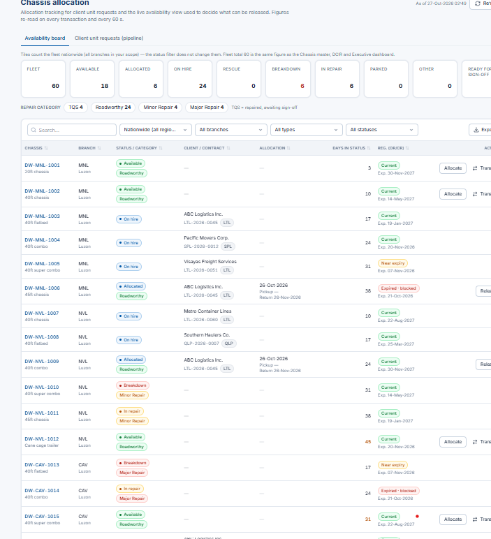
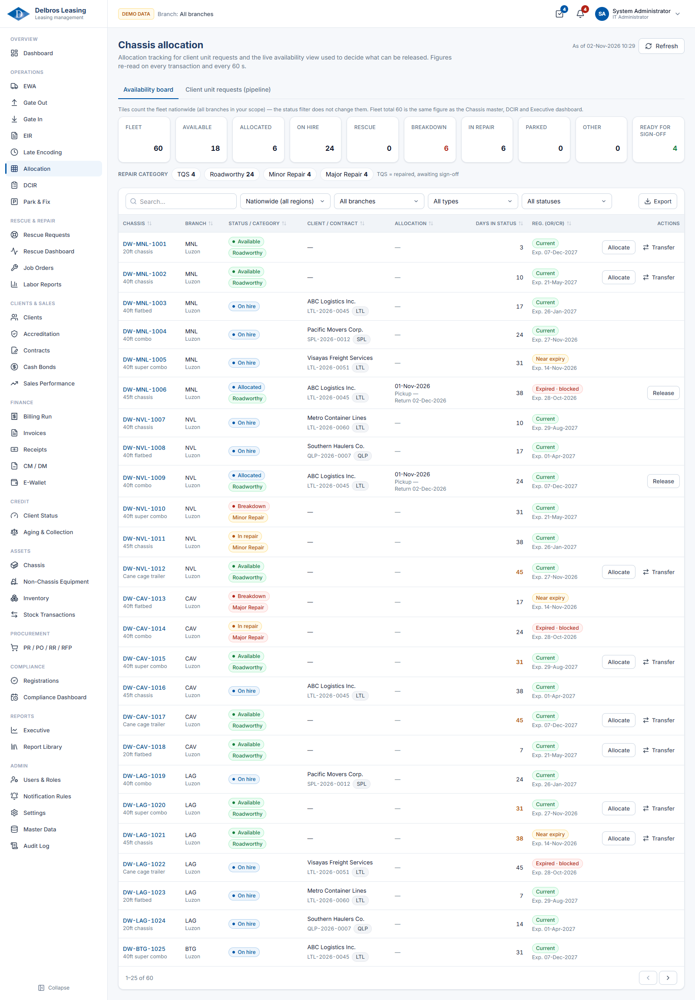
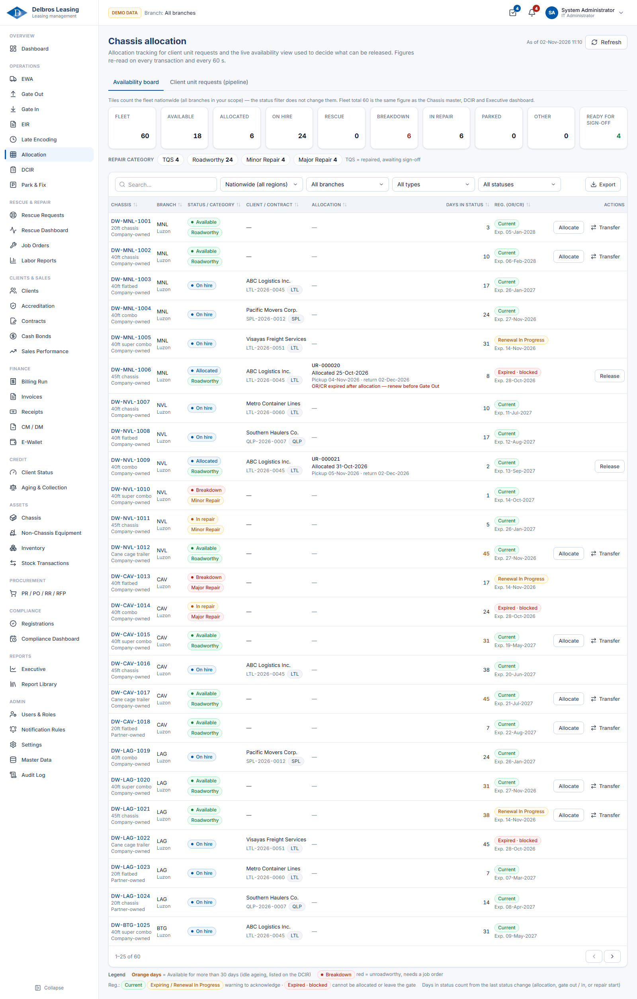
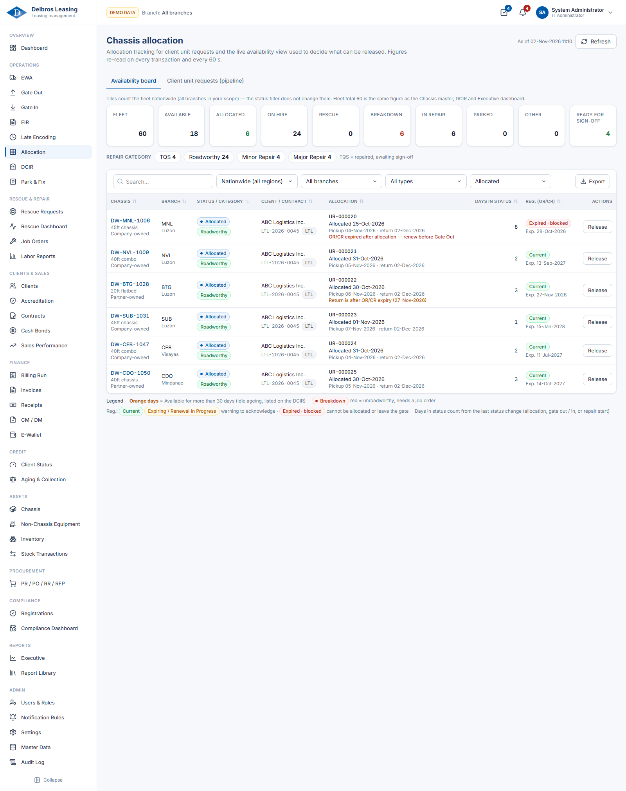
12 · Client unit requests (pipeline) DBL-ALO-001/002
Reviewer’s verdict: Partial. The pipeline now lists fulfilled requests with their allocated chassis, the repair status of matching units, requester and date, the monetary-requirement reason and a definition of every derived column; Find chassis is disabled for a Blocked request.
| Review item | Status | What was done · how to check |
|---|---|---|
| Repair status not visible | Fixed | New column 'In repair (same type, branch)' lists matching units in Breakdown / In repair with their category, or 'None'. |
| Request ↔ allocated chassis link | Fixed Data fixed | New 'Allocated chassis' column (links to the chassis). Fulfilled requests UR-000020…025 are listed (status 'Fulfilled'), each with its chassis — matching the board's UR numbers. |
| Requested by (AE), created date | Fixed | 'Requested' column: created date + requester name. |
| Monetary requirement definition / amount behind it | Fixed Open | The reason now shows under the badge (e.g. 'Cash bond … held', 'Cash bond / deposit not yet received', credit-hold reason); the intro text defines Cleared / Pending / Blocked. Whether the e-wallet minimum also counts needs confirmation. |
| UR-000029 Blocked should stop allocation | Fixed | Find chassis is disabled for Blocked requests with a tooltip giving the reason (Pacific Movers credit hold); the Allocate dialog only lists eligible clients anyway. |
| Availability counts — what they include | Fixed | Intro text: Available units of the type with current / near-expiry OR/CR; expired registration and units awaiting sign-off excluded. Orange target date = due today or tomorrow and not fulfilled. |
| UR-000028: '2 elsewhere in Luzon' for 40ft super combo | Answered | Board has DW-CAV-1015 and DW-LAG-1020 (both 40ft super combo, Available, current OR/CR) — 2 elsewhere in Luzon is correct. |
| UR-000028 open against expired contract QLP-2026-0007 (cross-check from contracts group) | Fixed Open | Contract column shows a red 'Contract expired — on hold pending renewal' badge for open requests on a non-Active contract; Find chassis is disabled with the reason; the seed note says the request is on hold. (Verifier: the badge did not appear in the first after-shot because QLP-2026-0007 is seeded 'Active' and the pipeline never ran the contract-expiry job; the pipeline and the Allocate client list now run it, so QLP-2026-0007 shows as Expired.) What happens to requests after a contract expires (auto-cancel or hold) is a client decision. |
| Status filter values | Fixed | Filter is the request status: Open, Partially Allocated, Fulfilled (all allocated), Cancelled. |
| Find chassis flow | Already built | Find chassis opens the board filtered to the request's branch and type (badge 'For request UR-…'); Allocate pre-fills client, contract, request and pickup and checks OR/CR. Cross-branch units use Transfer (Operations Manager approval). |
| Custom contract types / rates (DBL-ALO-001) | Open | Needs the client's rule for custom types and their approval; recommend handling on the contract, not the request. |
| Priority, required-parts link to a PR | Open | Not in the data model; recommend a priority field and a 'Create PR' link once Procurement confirms. |
| BTG vs BTO branch code | Answered | Branch codes here come from the branch master (BTG); the EWA list belongs to group A. |
| Empty / error states | Already built | Empty table: 'No unit requests — Create a request when a client asks for units.' |
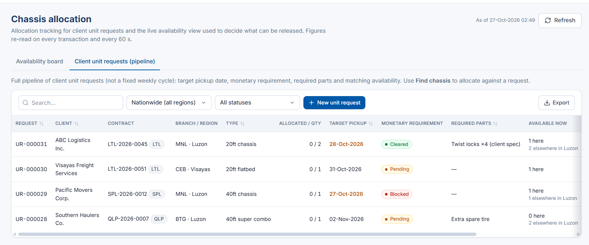
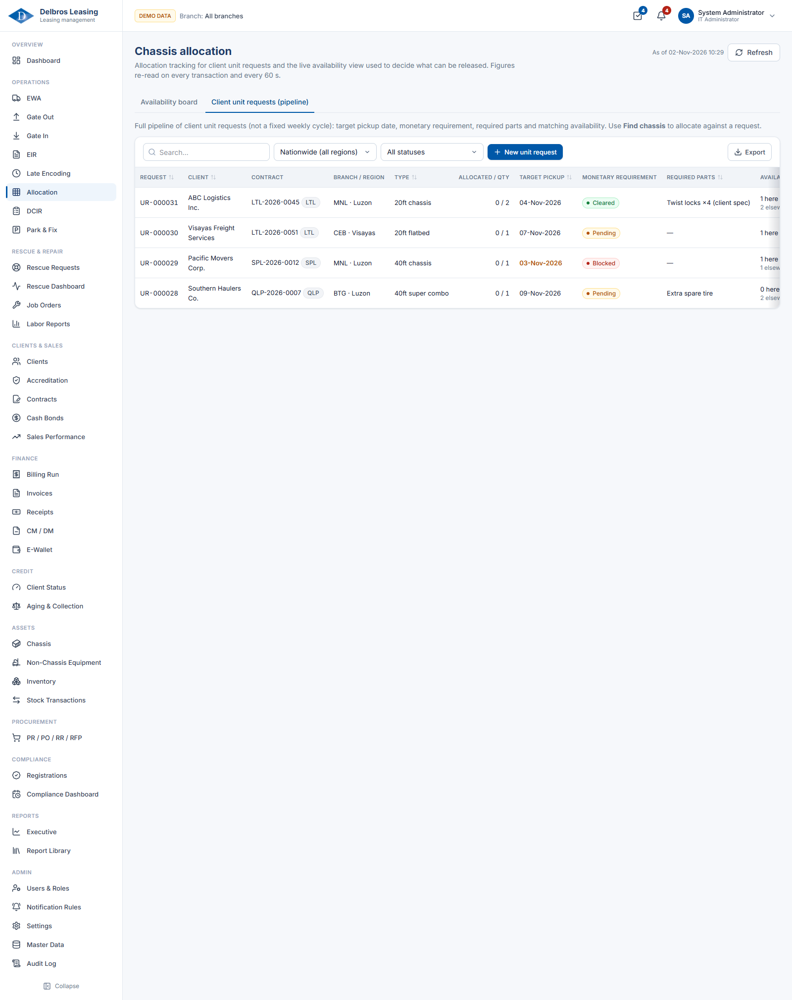
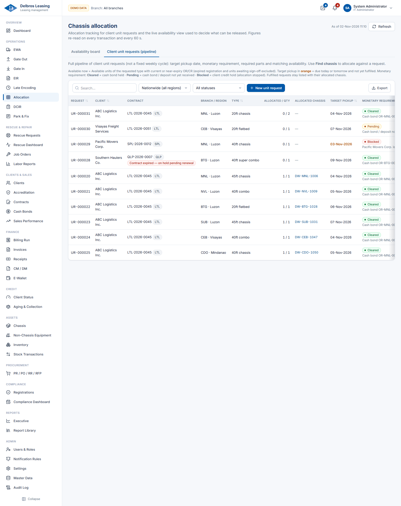
13 · New client unit request dialog DBL-ALO-001/002, BR-12
Reviewer’s verdict: Partial. The dialog defaults the pickup date to today (Manila), enables Contract only after Client, limits types to the contract, greys Create until valid with a 'Required:' footer, and previews contract type/term, monetary requirement and matching availability.
| Review item | Status | What was done · how to check |
|---|---|---|
| Target pickup pre-filled with yesterday | Fixed | Default is today in Manila time (todayManila), re-read each time the dialog opens; past dates are blocked (min = today, inline 'Must be today or later'); the API check also uses the Manila day. |
| Contract enabled before Client | Fixed | Contract is disabled with 'Select a client first' and lists only that client's active contracts. |
| Chassis type not limited to the contract | Fixed | Chassis type is disabled until a contract is chosen and lists only the types rated on that contract. |
| Create enabled with empty required fields | Fixed | Create request is greyed until valid; footer lists 'Required: client, contract, …' (same pattern as New EWA). |
| Contract type not shown once chosen; region not shown | Fixed | Preview panel shows contract type badge and term; pickup branch hint shows the region. |
| Monetary requirement / availability preview | Fixed | Preview shows the monetary requirement with its reason and 'N available at <branch>, M elsewhere in <region>', units of the type in repair, and a warning if fewer than requested. |
| Pickup after contract expiry | Fixed | Target pickup max = contract expiry; a later date shows an inline error and blocks Create. |
| Eligible clients only — rule | Fixed | Hint now states: accredited, active, no credit hold, with an active contract (same check as New EWA). If none, a red 'No eligible clients' banner shows. |
| Success state with UR number | Fixed | Toast 'Unit request UR-0000xx created — status Open, now in the pipeline'. |
| Requested by / created date | Already built | Captured automatically (current user, now) and shown in the pipeline 'Requested' column. |
| Quantity limits | Fixed Open | Minimum 1 enforced; maximum per contract needs the contract quantity rule (OPEN). |
| Custom contract type / rate, priority, several types per request, notification of Procurement | Open | Business rules not confirmed. Recommend one request per type (current design) and a priority field. |
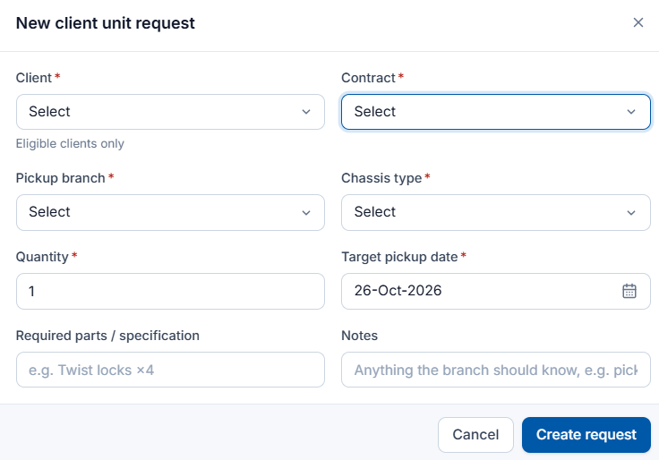
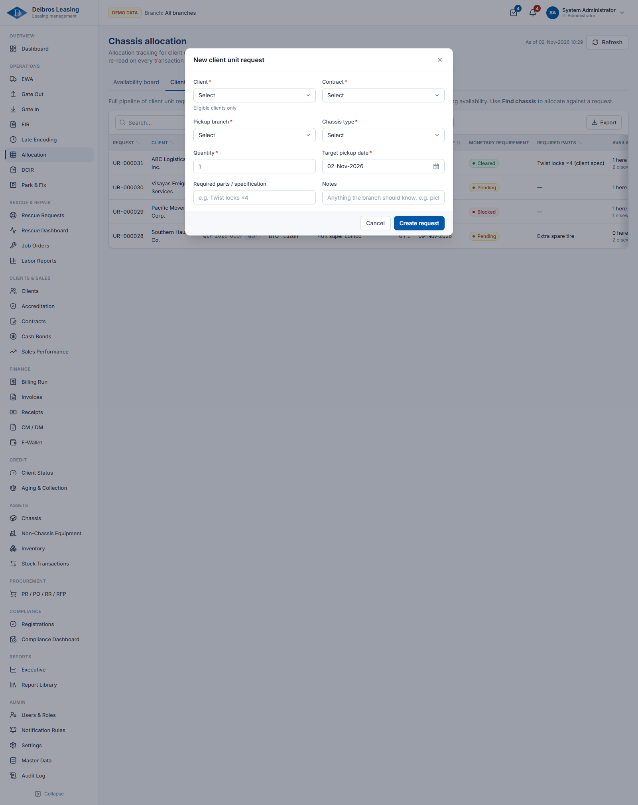
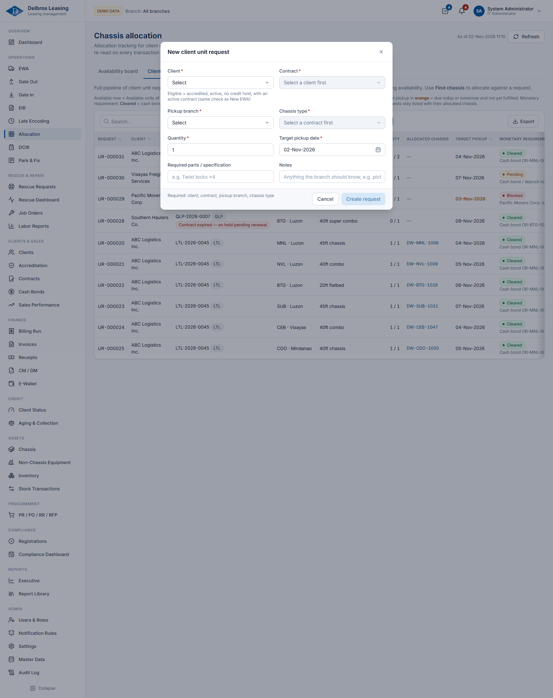
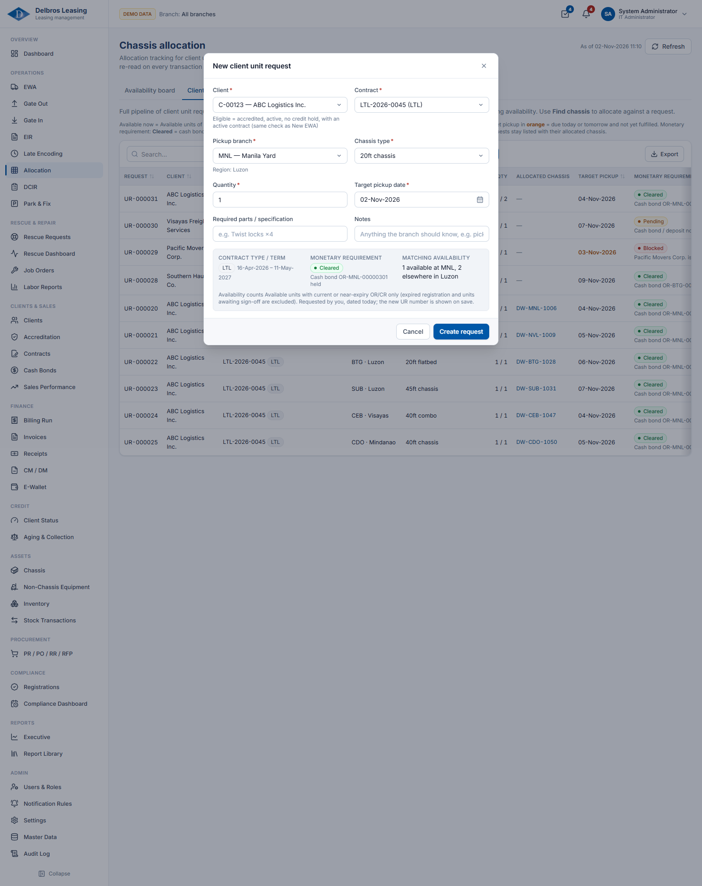
14 · Daily Chassis Inventory Report DBL-ALO-003/004, BR-07
Reviewer’s verdict: Partial. The date picker now defaults to today in Manila time so the Live badge always matches. Past dates show a Snapshot badge with a 'Back to today' button, the report shows its ID and who generated it, and Blocked and Sign-off are defined.
| Review item | Status | What was done · how to check |
|---|---|---|
| Date picker shows yesterday while 'Live' | Fixed | Root cause: 'today' was the UTC date (a day behind before 08:00 Manila). Picker default/max and the API now use the Manila day. Picking an earlier date shows an amber 'Snapshot · <date> · nightly, read-only' badge (no Live badge) and a 'Back to today (live)' button. |
| 19/23 vs 18/24 | Answered | Same cause: the old build displayed the previous day's snapshot. Live DCIR = board = dashboard: 18 / 6 / 24 / 6 / 6 = 60. |
| Blocked = 0 while the board shows blocked units | Fixed | How to read: Blocked counts Available units only (what could be released); allocated / on-hire / in-repair units with expired OR/CR are flagged on the Allocation board and Compliance dashboard. |
| Sign-off action | Already built | Sign-off count links to the board filtered to TQS units → 'Sign off' dialog (all JOs closed + OR/CR current + remarks). Described in How to read. |
| Report ID, generated by | Fixed | Status bar and print header show 'Report DCIR-<date> · generated by <user>'. |
| Owner split (company vs partner) | Open | Recommend an Owner filter on the DCIR; the board now shows the owner per chassis. |
| Comparison with the previous day | Open | Snapshots exist; a 'change vs yesterday' column is a new feature — recommend after sign-off of the layout. |
| Report code RPT-0xx vs DBL-RPT-0xx, role access, export formats, snapshot retention | Open | Retention is configurable (alo.dcir_snapshot_days, 90). Branch users see only their branches (scope badge). Export formats / FRS codes need confirmation. |
| Park & Fix units in the fleet of 60? | Already built | No: How to read states Park & Fix trailers are client-owned, not in Total or Available. |
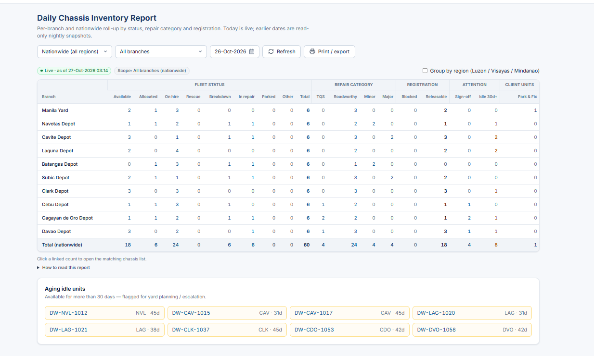
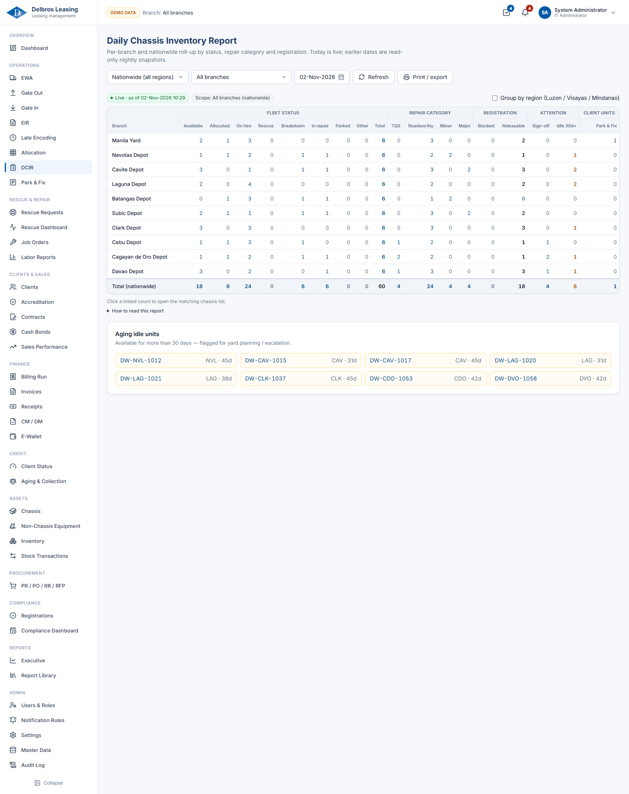
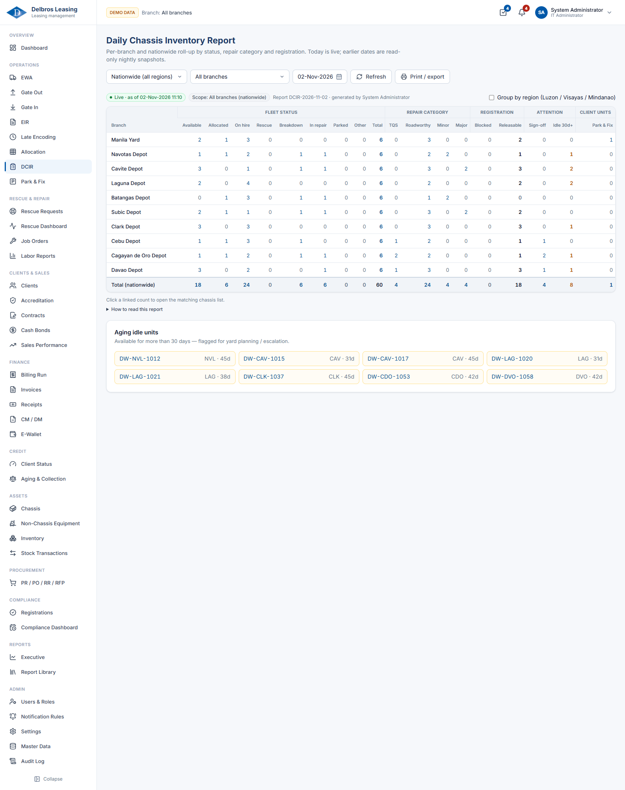

15 · Park-in dialog (Park & Fix) DBL-ALO-005
Reviewer’s verdict: Partial. No functional change beyond Manila-day date checks; receipt numbers now follow date order. Most gaps are scope decisions for a 'Could' item.
| Review item | Status | What was done · how to check |
|---|---|---|
| Receipt / gate-pass number and park-in time | Already built | Generated on save: toast 'Parked — receipt PFR-IN-…' and the printed receipt shows number and date/time; the dashboard row now shows the receipt numbers. |
| Park & Repair details (JO link, approval) | Already built | Choosing Park & Repair shows the six repair systems; a chargeable Draft JO is created and linked (dashboard shows JO number · status). |
| Park-out screen | Already built | Dashboard → Park out: final days × rate, open-JO warning, gate fields, Debit Memo and park-out receipt. |
| Duration tracker / billing link | Already built | Dashboard tiles and Amount to date; Debit Memo on park-out. |
| Trailer OR/CR, truck OR/CR, vandalised / assessment, photos, yard slot, client terms, VAT / minimum days | Open | Recommend reusing the Gate In inspection block (vandalised, assessment, photos) once DBL-ALO-005 scope is confirmed for release 1. |
| Rate override reason / who may override | Already built | Only roles with Park & Fix approve rights can change the rate; a reason is mandatory and kept in the audit trail. |
| Expected park-out optional | Open | Needs the client's rule; it feeds the overdue tile only, billing uses actual days. |
| Parked 0 on dashboard vs 1 Park & Fix | Answered | Parked = Delbros fleet units; Park & Fix = client trailers (separate column, defined in the DCIR How to read). |
| Effective-dated rate (BR-18) | Open | Rate comes from the setting alo.parkfix_daily_rate; recommend moving it to the effective-dated rate card. |
16 · Park & Fix dashboard DBL-ALO-005
Reviewer’s verdict: Partial. Receipt numbers now show in the Period column and follow date order (PFR-IN-000001 / PFR-OUT-000002 for ABC-CH-2210, PFR-IN-000003 for MCL-TRL-0458).
| Review item | Status | What was done · how to check |
|---|---|---|
| Receipt numbers not shown | Fixed Data fixed | Period column shows in / out receipt numbers; seed numbers corrected from 000000 to date order. |
| Job Order reference for Park & Repair | Already built | Service column shows 'JO-… · status' link for Park & Repair rows (seed rows are Park only). |
| Park-out dialog | Already built | Park out button: final days × rate, JO warning, gate/signature, posts Debit Memo, prints receipt. |
| VAT, repair and long-stay billing, client hold on release, DM vs invoice, numbering of client trailers | Open | Footnote already says pending confirmation. Recommend VAT-inclusive daily rate unless Finance says otherwise and a BR-01 hold check on park-out. |
| DM-000039 in ABC statement / ₱74,080 total | Open | Statement of Account belongs to the billing group; flagged for cross-check. |
| Status filter values | Already built | Parked, Parked out, Billed. |
17 · Internal rescue request dialog DBL-RES-001/002/003/005, BR-11
Reviewer’s verdict: Partial. Choosing a client now shows eligibility (Allow Rescue, account status, result), units with an open rescue are marked and warned about, and the dialog states what happens on submit.
| Review item | Status | What was done · how to check |
|---|---|---|
| Eligibility at intake | Fixed | After selecting a client: Eligibility strip with Allow Rescue Yes/No, account status and 'Eligible — C&C verifies before dispatch' or 'Not eligible — logged as Blocked' (plus the existing credit-gate banner). |
| Duplicate check | Fixed | Units with an open rescue are labelled '— open rescue RSC-…' in the list; choosing one shows a field error and a warning banner with a link to the open request. |
| Notifications on submit / success state | Fixed | Note: new RSC number issued with status Requested (awaiting C&C), notifies Sales, DYM, Branch Generalist, Ops Manager, C&C and Accounting; urgent repeats SMS. Submit opens the new rescue. |
| Error states (missing fields, ineligible) | Already built | Submit greyed until valid; ineligible clients are logged as Blocked with the reason (toast says BLOCKED). |
| Cost computation, distance, dispatch vehicle | Already built | Captured at dispatch / cost entry on the rescue detail (km, rate, lines, vehicle, driver). |
| Issue type, incident time, channel / staff, photo rules, region for pricing | Open | Channel is recorded (Internal / Portal) and the user in the audit log. Recommend adding an issue-type dropdown matching the portal's problem types once confirmed. |
| RSC-000041 vs audit log rescue.cancel on 08-Oct | Open | Audit log seed is in the admin area (other group); RSC-000040 is the cancelled one — flagged for the coordinator. |
18 · Rescue requests list DBL-RES-002/003/006/007/008
Reviewer’s verdict: Partial. Blocked and Cancelled rows show their reason, completed charges show the Debit Memo number, and the totals boxes state the period they cover.
| Review item | Status | What was done · how to check |
|---|---|---|
| Reason for Blocked / Cancelled | Fixed | Status column second line: 'Blocked: Pacific Movers Corp. is ON HOLD…' / 'Cancelled: Client driver fixed the tire…'. Who and when are on the detail banner. |
| Debit Memo link | Fixed | Charge column shows the DM number under the total (DM-000040); detail shows DM, e-wallet deduction and balance. |
| Totals boxes show date range | Fixed | Subtitles read 'Completed rescues · All dates (Oct 2026 – Nov 2026)' or the selected month; note that totals are Completed only. |
| Cost breakdown | Already built | Hover the charge for travel/tire/parts/service/VAT; full columns on the Rescue dashboard. |
| Dispatch vehicle / driver, C&C and Sales approvals, evidence | Already built | Rescue detail: Dispatch log card, 'Eligibility verified by' / 'Sales confirmed by', Billing evidence card. Dashboard now also has a Dispatch column. |
| Pacific blocked = same client-level block as UR-000029 | Answered | Yes — both come from the credit hold (reason shown on both screens). |
| Branch meaning (home vs handling) | Open | Branch = the unit's branch at request time. Recommend confirming whether the handling branch should be separate. |
| SLA 2h / 4h | Open | Still proposed (settings res.sla_amber_hours / res.sla_red_hours). |
| Rescue Requests vs Rescue Dashboard | Answered | Requests = work list for logging/handling; Dashboard = DBL-RES-007 monitoring with full cost breakdown; both use the same totals component. |
| More completed demo rescues | Open | RSC-000020 (₱18,048.80) exists in the seed; more can be added by the coordinator if needed. |
19 · Rescue dashboard DBL-RES-003/006/007/008, BR-11
Reviewer’s verdict: Partial. Transactions now show request date and time in the app format, the reason for Blocked/Cancelled, the dispatch vehicle and driver, and the one-way km behind the travel cost.
| Review item | Status | What was done · how to check |
|---|---|---|
| Date format / Requested lost its time | Fixed | Requested column uses dd-Mon-yyyy HH:mm like the list. |
| Reasons for Cancelled / Blocked | Fixed | Status column shows the reason. |
| Dispatch vehicle and driver | Fixed | New 'Dispatch (vehicle · driver)' column. |
| Distance and per-km rate behind travel | Fixed | New 'Km (one way)' column; tooltip shows km × 2 × rate. |
| E-wallet posting, evidence, approval trail | Already built | Click a row → detail: Debit Memo & e-wallet posting card (balance after), Billing evidence (photos, acknowledgment), verified/confirmed by. |
| Totals boxes period | Fixed | Totals subtitles show the selected period. (Verifier: a month period ran to day 31, so November showed '01-Nov-2026 – 01-Dec-2026' and included 1 Dec. It now ends on the month's last day, and the month list follows the Manila calendar.) |
| Regional pricing, Q-005 uplift, SLA, branch meaning | Open | Pending client decisions (detail already marks 'regional lists pending decision'). |
20 · Create job order DBL-RM-001/002/004/008, BR-07
Reviewer’s verdict: Partial. The example now uses a real unit (DW-NVL-1007), the selected unit's type, status, branch, client, OR/CR and open JOs are shown, a wrong source for a non-hired unit is flagged, and who is notified is stated.
| Review item | Status | What was done · how to check |
|---|---|---|
| Placeholder DW-MNL-1007 not a real unit | Fixed | Placeholder 'Search e.g. DW-NVL-1007' (an on-hire Navotas unit). |
| Chassis context after selection | Fixed | Panel: type, status, branch, current client, Registration / OR-CR with expiry, open job orders with their systems. Open /repair/new?chassis=DW-NVL-1007. |
| Chassis not found error | Fixed | 'Chassis X is not in the chassis master' under the field. |
| System already has an open JO | Already built | That system is struck through / disabled with tooltip 'Open JO exists for this system'; the server also rejects it. |
| Spot repair on a non-hired unit | Fixed | Amber note when Spot Repair is chosen for a unit that is not on hire. |
| Approval notification | Fixed | Note above Create: Branch Generalist and DYM are notified (email + in-app; spot repair SMS until acknowledged), BG lead approves, DYM confirms; JO number issued on save. |
| Driver fields mandatory for on-hire spot repair | Open | Kept optional pending confirmation (DBL-RM-001 wording). |
| Priority / target date / estimate / photos / worker type / per-system notes / chargeable amount | Open | New fields; recommend priority + target date for capacity planning and photos for the Accomplishment Report once confirmed. |
| Source options (Park & Fix, Rescue auto-create) | Already built Open | Sources: Gate In, Rescue, Spot Repair, Scheduled; Park & Repair creates a Draft JO automatically. Auto-create from Gate In 'Unroadworthy' needs confirmation. |
21 · Job orders list DBL-RM-001/002/004/009/010, BR-07
Reviewer’s verdict: Partial. Every Breakdown / In repair unit now has a job order (open JO for Minor/Major, Closed by R&M for TQS), with branch column and filter, client/chargeable, workers, approver/confirmer, closed date and days open.
| Review item | Status | What was done · how to check |
|---|---|---|
| Most units in repair have no job order | Data fixed | 10 sample JOs added for CAV-1013/1014 (Major, escalated), BTG-1029/1030 (Minor), SUB-1032/1033 (Major), CEB-1048, CDO-1051/1052, DVO-1055 (Closed by R&M, awaiting sign-off). Repair categories stay TQS 4 / Minor 4 / Major 4; fleet stays 60. |
| Branch column and filter | Fixed | Branch column + 'All branches' filter (API supports branch). |
| Client and chargeable flag, assigned workers, approved/confirmed by, closed date, age | Fixed | Columns: Client / chargeable, Workers, Approved / confirmed (names, 'Awaiting DYM'), Created / closed, Days open. |
| Major column '—' everywhere | Data fixed | Four Major-category units now have escalated (Major) JOs. |
| Status examples (Confirmed, On Hold) | Data fixed | Seed now includes Draft, Confirmed, Ongoing, On Hold and Closed by R&M. |
| Days in status vs JO age (NVL-1011) | Data fixed | Seeded NVL-1010/1011 now count days in status from their JO (1 and 5 days). |
| JO prefix MNL on Navotas units | Open | New JOs take the unit's branch prefix (JO-CAV-…); the two legacy JO-MNL numbers on NVL units are referenced by memos/stock and were kept. Confirm creating-branch vs unit-branch rule. |
| Per-system status, Accomplishment Report, linked DM, spot-driver record | Open Already built | Detail page has BOM, labor, workers, approval timeline, spot driver. Per-system closing and the AR precondition need a design decision (one JO per system recommended). |
| Empty state / count | Fixed | 'No job orders match the filters'; pagination shows x–y of n. |
22 · Laborer job summary DBL-RM-005
Reviewer’s verdict: Partial. The pay period now defaults to the last 30 days and is always shown ('Period in use'), and a totals row sums completed JOs, hours by shift and earnings.
| Review item | Status | What was done · how to check |
|---|---|---|
| Pay period blank but data shown | Fixed | Defaults to the last 30 days (Manila dates); 'Period in use: <from> – <to> · all branches' beside the filters; Reset returns to the default. (Verifier: the API compared the period with the UTC date of each labor / close timestamp; it now uses the Manila day.) |
| Totals row | Fixed | Table footer: laborers, completed JOs, hours (morning / afternoon / evening) and earnings for the period and branch. |
| Drill-down to JO lines | Already built | Click a laborer → job orders with chassis, status, hours, closed date. |
| More laborers (NVL headcount 3 vs 1 laborer) | Data fixed Answered | Laborers D, E, F, G, H and J now log hours on the new branch JOs (there is no Laborer I). The summary lists workers with hours in the period; headcount on Capacity is a sample figure. |
| HRIS number, pay-period lock, project-based pay, shift differentials | Open | Pending client answers (already marked on screen). |
23 · Capacity planning tab DBL-RM-006
Reviewer’s verdict: Partial. Added a Gap (hours / heads) column and a totals footer. Open JOs now come from real job orders at every branch with units in repair, and the week defaults to the Manila date.
| Review item | Status | What was done · how to check |
|---|---|---|
| Gap or surplus | Fixed | Column 'Gap (hrs / heads)' = available − planned, red when short (e.g. −8 h / 0). |
| Totals row | Fixed | Footer: planned, available, gap, headcount required/available, open JOs, number of branches over capacity. |
| Open JOs 0 where DCIR has repair units | Data fixed | Branches with Minor/Major units now show their open JOs (CAV 2, BTG 2, SUB 2, NVL 2); TQS units' JOs are closed. |
| Date format '26 Oct 2026' | Answered | Current build already uses 26-Oct-2026 (formatDate). |
| Workload source, 48 h rule, shift capacity, skill mix, drill-down, over-capacity actions | Open | Planned hours remain sample values (stated on screen) until the workload source is confirmed; recommend planned = open-JO estimated hours. |
24 · Efficiency tab DBL-RM-007
Reviewer’s verdict: Partial. Turnaround is now measured from closed job orders and shows '—' when a branch has none. The period is defaulted and displayed, and the metrics are defined on screen.
| Review item | Status | What was done · how to check |
|---|---|---|
| Turnaround shown with 0 completed JOs | Fixed | Turnaround = average days from JO creation to Closed by R&M over JOs completed in the period; '—' when none. Average row is weighted by completed JOs. |
| Date range blank | Fixed | Defaults to the last 30 days; 'Period in use' shown beside the filters and under the table. |
| Definition of metrics | Fixed | Footnote defines JOs completed, Avg turnaround and JOs / shift (marked as sample). |
| JOs / shift doesn't fit the completed count; reconcile with laborer hours | Open | Shift figures remain sample values until the workload source is confirmed (stated on screen). |
| Turnaround interval (JO created → closed vs breakdown → Available) | Fixed Open | Implemented as JO created → Closed by R&M (stated); the alternative including sign-off wait needs confirmation. |
| Hours/utilisation per shift, targets, breakdown by system/laborer, drill-down | Open | New report features; recommend a 3-day turnaround target once agreed. |
C · Clients, contracts & sales
25 · Register client (internal) DBL-CLT-001, 002, 003, 005
Reviewer’s verdict: Partial. The form now has City, ZIP code and Country, and says that eligibility flags and BICI details come at accreditation. The next code is C-00252, following the highest existing code C-00251. Duplicate warning, validation banner and the Draft confirmation with the next step were already there.
| Review item | Status | What was done · how to check |
|---|---|---|
| City, zipcode, country missing | Fixed | Register client: optional City / municipality and ZIP code (4 digits) fields, plus a Country field fixed to Philippines. Both are saved on the client record. |
| Next code C-00261 vs highest C-00251 | Data fixed | The client sequence now starts at 251, so the auto code is C-00252, the next number after Islandlink C-00251. |
| eBilling email, billing cycle, website, fax | Already built | These are profile fields: Client profile → Edit. New clients start on a Weekly cycle. |
| Eligibility flags default off until accreditation | Fixed | Header text: the flags start off and are set at VP sign-off. The API already creates Draft clients with all flags off. The VP sets them in the accreditation drawer (Activation on approval). |
| Accreditation documents / TIN / SEC-DTI | Answered | These are captured at the accreditation step: Submit for accreditation dialog, then the queue drawer (Supporting documents). The header now says so. Whether TIN is mandatory is OPEN with the client. |
| Business type / lead source | Open | Recommendation: capture both on the Log activity (prospect) record and copy them to the client when it is registered. They are not in the signed field list. |
| Duplicate check on name / code | Already built | Typing a name similar to an existing client shows a 'Possible duplicate client' banner that must be ticked before saving. An existing code is blocked ('Company code already exists'). A TIN check comes with the TIN decision. |
| Validation error states and Draft confirmation | Already built | Save with empty fields shows the 'Fix the highlighted fields' banner and the field errors. A successful save shows 'Client saved as Draft' with the next step (Start accreditation) and says C&C is notified when you submit. |
| AE list limited by branch | Open | Recommendation: keep all AEs, because AEs are head-office based in the sample data. Filter by branch only if the client confirms AEs are branch-bound. |
| Landline numbers | Open | The format hint is for mobile numbers. Confirm whether landlines are accepted. |
| Notification on registration | Already built | The assigned AE gets an in-app notice when the client is saved ('New client (Draft)'). |
| Contact split first / last same as portal form | Answered | The portal registration also uses first and last name. |
26 · Clients list DBL-CLT-002, 003, 005, 006, 007, 016, 019
Reviewer’s verdict: Partial. The list now has Cash bond and Contract expiry columns, an 'x of y clients' count, an Approve / decline link on the portal registration row, and two AEs. Southern Haulers shows 'contract expired' under 0 · 4.
| Review item | Status | What was done · how to check |
|---|---|---|
| Cash bond status missing | Fixed | New Cash bond column shows the bond held. A client with a contract or units but no bond shows 'No bond on file'. Bond records were added for Metro and Southern Haulers, so every client with a contract shows ₱20,000.00. |
| Contract expiry missing | Fixed | New Contract expiry column: amber with days left within 90 days (Metro), red '· expired' for Southern Haulers. Hover shows the contract number. |
| Overdue amount / oldest invoice age | Open | The hold reason already shows the invoice and days past due for held clients. Recommendation: add an 'Oldest overdue' column after the Aging screen review. |
| Pagination count and total | Fixed | Footnote now reads 'N of M clients' and defines Contracts · units and the Rescue rule. |
| Southern Haulers 0 contracts but 4 units | Fixed | The count is Active contracts only. Rows with units but no Active contract now show 'contract expired' under the count. |
| All clients on one AE | Data fixed | Added a second Account Executive, Kevin Ong (AE.KONG). Visayas Freight and Southern Haulers, with their contracts, sales activities and the Visayas bond withdrawal, belong to him. The AE filter now separates the two. |
| Accreditation stages on list | Already built | The status chip shows the current stage (Pending C&C / Finance / VP or Rejected) from the workflow. The stage owner's actions are in Client accreditation → row drawer. |
| Approve action for portal registration (C-00251) | Fixed | The row now has an 'Approve / decline' link that opens the profile, where the Approve registration / Decline buttons are. |
| ABC outstanding ₱79,120 vs ₱74,080 elsewhere | Answered | All screens compute outstanding from the same invoices. The reviewer's figures come from different build dates. Re-check against Aging / SOA on the current build; group D owns the billing figures. |
| Metro e-wallet below minimum but Rescue Allowed | Open | Current rule: Allowed when Active, the flag is on and the e-wallet balance is above zero. Recommendation: block below the ₱10,000 minimum if the client confirms that 'funded' means at or above the minimum. |
| Metro outstanding = Billed MTD | Answered | Coincidence of the sample data: Metro's only open invoices are this month's. |
| Eligibility flags in profile | Already built | Client profile → Eligibility card shows LT, ST, Online, Special billing, Rescue and CWS branch access. The list shows only Rescue. |
| Blacklisted / Draft rescue Blocked | Answered | Rescue needs an Active client. The Blocked chip tooltip gives the reason (flag off / client not Active / e-wallet not funded). |
| Hold-lift ₱500k–₱1M tier | Open | Still a client decision (Q-CNC-02). |
27 · Submit for BICI accreditation dialog DBL-CLT-003, 004
Reviewer’s verdict: Partial. The client dropdown disables Drafts already in accreditation (Northstar) and portal registrations not yet approved (Islandlink), and shows why on each.
| Review item | Status | What was done · how to check |
|---|---|---|
| Dropdown lists C-00244 (already submitted) and C-00251 (portal awaiting approval) | Fixed | Each disabled entry shows its reason ('already submitted — Pending C&C', 'portal registration awaiting AE approval'), and a hint explains the rule. The API also refuses both cases. |
| BICI form fields, credit score, results | Already built | Client accreditation → row → drawer: BICI Evaluation Form (SEC/DTI, TIN, references, site visit, score, grade, recommended term and limit, result, reasoning) for the C&C step owner. The real C&C form is still OPEN. |
| Attachments | Already built | Queue drawer → Supporting documents: SEC / DTI certificate, financial statements, bank certificate and others, attached by the AE or the step owner. |
| Finance / VP sign-off, rejection path | Already built | Queue drawer: Endorse / Reject for Finance and Approve & activate / Reject for the VP, with required comments. The VP also sets the sign-off date, flags and credit limit. A rejection keeps the client in Draft and offers Resubmit. |
| Submitted by / date, notification | Already built | Saved automatically in the audit trail of the queue drawer. C&C and the AE are notified on submit. |
| Which background fields are mandatory | Open | Optional at submit. SEC/DTI, TIN and references are required before C&C can submit the evaluation. Confirm with C&C. |
| Requested terms (contract type, units, credit line) | Open | Recommendation: add these with the real BICI form. |
| Credit scoring model | Open | Score and grade are entered by hand, labelled 'scoring model pending decision'. |
| Format checks on SEC/DTI and TIN | Open | The fields are free text with format examples. Add checks once the client confirms the formats. |
28 · Client accreditation queue DBL-CLT-003, 004, 005
Reviewer’s verdict: Partial. Most of the reviewer's gaps are already in the row drawer: BICI form, per-step approval timeline with names, dates and comments, documents, actions for the step owner, and flags on VP approval. The sample submission times now differ.
| Review item | Status | What was done · how to check |
|---|---|---|
| Row detail / actions / per-stage audit trail / VP name and date | Already built | Click a row → drawer: Approval steps timeline (who, when, comment per stage), BICI form, Supporting documents, Audit trail, and Endorse / Approve / Reject for the current step owner only. |
| Eligibility flags on approval | Already built | The VP step in the drawer has 'Activation on approval' (credit limit, sign-off date, LT/ST/Online/Special/Rescue switches, CWS branches). The Approved row's drawer shows the banner with the sign-off date. |
| Decision date for Approved / Rejected | Already built | In the drawer: rejected banner with approver and time, and approval timeline dates. |
| Days column definition | Answered | Days = days in the current stage. For closed items it is the days in the final stage (the cell tooltip reads 'Days in the current stage'). Metro was decided the same day as the previous step, hence 0. |
| 'Recommend' meaning | Answered | It is the C&C BICI result. The VP decision is a separate step in the approval timeline. |
| Same AE and 01:28 time on all rows | Data fixed | Submission times now differ (Northstar's earlier attempt and Metro's are hours apart). Northstar and Metro both belong to Jasmine Reyes; the second AE has Visayas and Southern Haulers. |
| Migrated Active clients have no accreditation record | Open | Recommendation: import legacy accreditation evidence as Approved records with a 'migrated' marker during data migration. |
| Score scale / thresholds / auto approval | Open | Needs the client's scoring model (DBL-CLT-004). |
| SLA per stage and escalation | Already built | Uses the 48-hour escalation setting (wf.escalation_hours). Escalated rows are amber, with an 'Escalated only' filter. Per-stage SLAs are still OPEN. |
| Link to My approvals | Already built | Accreditation steps are workflow items and appear in My approvals for the step role. |
| Pagination | Already built | DataTable pages at 25 rows. Only 3 items exist. |
29 · Create lease contract DBL-CLT-008…012, BR-12, 14, 15, 18
Reviewer’s verdict: Partial. Effective date defaults to today's Philippine date and past dates are blocked. Region and billing cycle default from the client, and the region helper names the branch-master list. The SPL and QLP rules, approval for custom types and large rate variances, and the class terms in the printout were already there.
| Review item | Status | What was done · how to check |
|---|---|---|
| Effective date pre-filled with yesterday | Fixed | Uses todayManila(). Past dates are blocked: min attribute plus the error 'Effective date cannot be in the past'. Renew, Terminate, Record refund and Record cash bond defaults also use the Manila date now. |
| Region 'NCR' vs helper 'same as Allocation' | Fixed | Decision: contract Region = the branch-master region (NCR, North Luzon, South Luzon, Visayas, Mindanao). It defaults to the client branch's region (Visayas for C-00201, South Luzon for C-00215). The helper says Allocation groups these by island (Luzon, Visayas, Mindanao). Seeded contracts now carry their client's region. |
| Billing cycle default | Fixed | Defaults from the client's cycle. Choosing a different cycle shows 'Differs from the client's Monthly cycle — billing runs on the client's cycle'. |
| SPL / QLP states | Already built | SPL: expiry optional ('SPL is open-ended'). QLP: '10 days to 6 months' with validation (validateContractDuration). The lock-in shows 'pending decision' for SPL/QLP. |
| Pre-termination fee rule | Open | Lock-in is stored, and Terminate warns 'inside the lock-in period; a pre-termination fee applies'. The fee formula (BR-15) needs the client's rule. |
| Client eligibility LT / ST flags | Already built | The API refuses LTL without Allow LT and SPL/QLP without Allow ST ('not eligible'). |
| Class-specific terms / document preview | Already built | Contract detail → Print contract shows the class clauses (placeholder wording pending Legal). |
| Custom type approval / variance >10% | Already built | Banner 'Approval required before the contract is sent' (Sales Director → Finance Manager), plus a reason field and the variance column in red. |
| Cash bond per contract or per client | Open | Treated per contract in the list and on the contract. The Record dialog hint now says so; per-client bonds are pending the client's decision. |
| Credit term basis (from receipt acknowledgment) | Open | The code uses days from invoice date. Confirm with Finance (DBL-CNC-005). |
| Renewal notifications | Already built | Notices at 3, 2 and 1 months go to the AE and Sales Director, logged in the contract's Lifecycle history. The banner on contract detail states this. |
| Remarks / special terms, billing contact | Open | Recommendation: add a free-text 'Special terms' field that prints in the class terms section. |
| Indemnity editable pending confirmation | Open | Needs the client's table and who may edit it. |
30 · Contracts list DBL-CLT-008, 010, 011, BR-12, BR-01
Reviewer’s verdict: Partial. The billing cycle now matches the client for every contract and AEs vary. The expired Southern Haulers contract is flagged '4 units still on hire after expiry'. ABC's dates follow the same seed as the portal. The rule for leases that run past expiry is OPEN.
| Review item | Status | What was done · how to check |
|---|---|---|
| Billing cycle differs from Clients list (Pacific, Southern Haulers) | Data fixed | Seeded contracts take the client's billing cycle: Pacific SPL-2026-0012 and Southern QLP-2026-0007 are now Monthly, matching the Clients list. The create form defaults from the client. |
| ABC dates differ from portal | Answered | The staff and portal seeds now use the same formula (effective = 200 days ago, LTL 13 months). Both show LTL-2026-0045 as 16-Apr-2026 to 11-May-2027 on 02-Nov. Contract dates were left unchanged so the two apps stay in step. |
| Southern Haulers transacting on expired QLP-2026-0007 | Fixed Open | The row now shows '4 units still on hire after expiry — renew or recall'. The contract detail Expired banner says the hold-over rule is pending, and the Clients list shows 'contract expired'. New EWAs and unit requests on a non-Active contract are refused by the API. The seeded UR-000028 (created 4 days ago) predates that check and should be retargeted or cancelled by the allocation owner. Recommendation: allow a hold-over at the contract rate with automatic renewal notices, and require Renew before any new release. |
| Metro expiry '40d' vs 39 (UTC vs Manila) | Answered | Date-only fields now use the Manila day (manilaDay / todayManila), so form defaults no longer show yesterday before 08:00. |
| Same start date / 10 units / one AE on all contracts | Data fixed | AEs now vary: Visayas and Southern Haulers belong to Kevin Ong. Start dates and contracted units were kept because the portal shows ABC and Pacific with the same seed; varying them in only one app would create a new mismatch. |
| Lifecycle states and dates | Already built | The Status filter lists Draft, Sent to client, Signed, For notarization, Notarized, Active, Expired, Renewed, Terminated. Contract detail shows the lifecycle steps and history with dates and users. Creating a new contract shows the Draft state. |
| Row actions (view, renew, amend, terminate) | Already built | Row → contract detail: Print, Renew, Amend / new version, Terminate (with lock-in warning). |
| Contracted vs on hire warning | Fixed | Active rows with more units on hire than contracted show 'On hire exceeds contracted units'. |
| Signed PDF / document status | Already built | Contract detail → Documents & versions lists the signed and notarized copies. |
| Region column / cash bond status | Already built | Contract detail → Terms shows Region and Cash bond (with link). Every Active contract now has a bond. |
31 · Record cash bond dialog DBL-CLT-016, BR-14
Reviewer’s verdict: Partial. Date received defaults to today's Philippine date. The dialog adds check number, bank and check date for checks, blocks duplicate receipts, warns if a bond is already on file, and states that the bond is saved as Held and kept separate from the e-wallet.
| Review item | Status | What was done · how to check |
|---|---|---|
| Date received pre-filled with yesterday | Fixed | Uses todayManila(); the API future-date check also uses the Manila day. |
| Check details when paid by check | Fixed | Payment method Check shows required Check number, Bank and Check date. They are saved on the bond and shown in the Ledger drawer next to Payment method. |
| Status after saving / untouched security | Fixed | The dialog says the bond is saved as Held, kept separate from the e-wallet and not usable for charges. The list shows Held. |
| Duplicate checks | Fixed | The API refuses a receipt reference already on another bond. The dialog warns 'A bond is already on file' when the chosen contract already has a bond, or, with no contract chosen, when the client has any bond on file. |
| Per contract or per client | Open | Hint updated: the list and contract treat the bond per contract; per-client bonds pending decision. |
| Amount different from baseline / instalments / top-up | Open | The amount is editable, with the baseline shown. Rules are pending. |
| Branch or cashier; who may record | Open | Received by = signed-in user (cash bond add permission). Confirm whether to restrict this to Accounting or the cashier. |
| Activation rule (bond before Active) | Open | Recommendation: block Activate until a Held bond exists for the contract. |
| Accounting posting | Open | Accounting needs to confirm the liability entries. |
| Receipt format OR-MNL-… | Answered | OR numbers are branch-prefixed, the same as Receipts. |
32 · Cash bonds list DBL-CLT-016, BR-14
Reviewer’s verdict: Partial. Every contract now has a bond (Metro and Southern Haulers added). The page has a total held, status / client / branch filters, the deduction behind Visayas' request (₱18,880 = ₱20,000 − ₱1,120 unpaid), an expired-contract note on Southern Haulers' bond (refundable once its unpaid balances are settled), and the reason under each disabled Withdraw.
| Review item | Status | What was done · how to check |
|---|---|---|
| Metro and Southern Haulers have no bond | Data fixed | Added Held bonds: CB-4 Metro / LTL-2026-0060 (OR-MNL-00000296, paid by check BDO 004512) and CB-5 Southern Haulers / QLP-2026-0007 (OR-BTG-00000031), both received before the contract start. |
| Total held missing | Fixed | The line above the table shows 'Total held: ₱100,000.00 across 5 bonds' and follows the filters. |
| Filters (status, client, branch) | Fixed | Toolbar has Status (Held / Withdrawal in progress / Refunded), Client and Branch filters. The table pages at 25 rows. |
| Refund calculation not shown (Visayas ₱18,880) | Fixed | Under Visayas' status: 'Requested ₱18,880.00 = ₱20,000.00 − ₱1,120.00 unpaid · early exception'. The Withdraw dialog has the full breakdown: bond, unpaid invoices, negative e-wallet, open debit memos, refundable. |
| Disabled Withdraw reason | Fixed | Each disabled Withdraw shows its reason under the buttons and on hover: withdrawal already in progress / nothing refundable / already refunded. |
| Expired contract bond should be refundable | Fixed | An expired contract's Held bond needs no early-exception checkbox. The status shows 'Refundable — contract expired' when something is refundable. In the sample data Southern Haulers' unpaid balances exceed the bond, so it shows 'Contract expired — refundable once unpaid balances are settled' and Withdraw is disabled with the reason (verifier fix: it used to say 'Refundable' next to a disabled 'nothing refundable' Withdraw). |
| Withdrawal request details / approval trail / refund date & reference / ledger | Already built | Row → Ledger drawer: received / withdrawal / refund entries with balance, approval timeline per tier (who, when, comment), refund method, date and Accounting reference, and the 'Record refund' form for Accounting. |
| Early withdrawal rule (Visayas) | Open | Early withdrawal is a flagged exception through the same chain, labelled 'exception policy pending decision'. |
| Bond dates after contract start | Open | This is the activation rule; see Record cash bond. The new records are dated before the contract start. |
| Receipt scan link | Already built | The Ledger drawer shows the receipt file name when one was attached. |
| Client portal withdrawal request | Already built | The portal requests withdrawals with the same API, which starts this workflow (portal app). |
33 · Sales performance DBL-CLT-011, 014, 015
Reviewer’s verdict: Partial. The Accredited tile now gives the in-progress count from the accreditation queue. Weeks still running are marked 'in progress', and weeks not yet started are left out of the AE average. The week 5 label is fixed (29–30). Two AEs now appear, and the AE row splits out 'other' activities.
| Review item | Status | What was done · how to check |
|---|---|---|
| Returns 0 although gate-ins exist | Answered | The tile counts gate-in passes in the selected month (November has none yet). The seed has one return: ABC, GP-MNL-000881, 28-Sep, checked with a seed run. It shows in the Sep bar once the demo data is refreshed (DB version bump). The Gate In-sourced job orders the reviewer cited are repair records, not hire returns. |
| '4 active in total' vs 1 in the queue | Fixed | The hint now reads 'This month · N in progress in the queue'. The count comes from the accreditation queue (1 = Northstar, Pending C&C). |
| Visit target 2 vs 3 | Already built | Both the AE row and the weekly panel read the setting sal.target_weekly_visits (3). |
| Activities 18 vs 13 tiles | Fixed | The AE row now shows '(n other)' when activities include types outside visits and calls (e.g. tracker updates), with a tooltip. The sample data has visits and calls only, so the totals match. |
| Week 5 partly in future | Fixed | Weeks not yet over are muted, marked '· in progress' in the legend and not shown as a miss. The AE weekly average counts only weeks that have started (the current week counts; future weeks are left out). The label bug that showed 'Wk 5 (29–5)' now shows 29–30. |
| Only one AE | Data fixed | Kevin Ong (AE.KONG) added. The AE table and filter show both AEs, and activities follow each client's AE. |
| Activity dated after it was logged | Answered | Future-dated activities are refused (UI and API). The sample data is logged on or after the activity time. |
| Lead pipeline / prospect marker / targets trend | Open | Prospects already show a 'Prospect' chip in the activity list. Recommendation: a Leads list with conversion in the next phase. |
| Targets sign-off | Open | Still labelled 'Proposed targets — pending sign-off'. |
| Region filter list | Answered | Uses the branch-master regions (NCR, North/South Luzon, Visayas, Mindanao), the same as the contract Region. |
34 · Log sales activity dialog DBL-CLT-013, 014, 015
Reviewer’s verdict: Partial. An administrator or manager must now choose the AE, while an AE logs for themself. Date and time default to Philippine time and are saved as +08:00.
| Review item | Status | What was done · how to check |
|---|---|---|
| AE locked to System Administrator | Fixed | If you are not an AE (or you are the Sales Director), the AE field is editable and required ('You are not an Account Executive — select the AE this activity counts for'). AEs log for themselves. The API also enforces that the AE exists. |
| Time default not Philippine time | Fixed | The default and max time use Asia/Manila, and the entered value is saved as +08:00. Hint: 'Philippine time (UTC+8). Logged time is recorded automatically.' |
| Date logged | Already built | Saved automatically; shown in the Logged column. |
| Validation messages | Already built | Save with empty fields shows the banner and 'Required' errors. Future dates show 'Cannot be in the future'. |
| Next action required for Follow-up / Quote sent | Open | Recommendation: make it required for those two outcomes once the outcome list is confirmed. |
| Activity types / outcome options | Open | Types: Visit, Call, Email, Meeting, Tracker update ('pending confirmation'). Visits + meetings and calls + emails feed the tiles. |
| Contact person for existing client, region, direction/duration, quantity/value, attachments, prospect duplicate check / Register as client | Open | Recommendation: add a contact dropdown and auto-fill from the client record first; others follow the client's confirmation of the tracker fields. |
D · Billing, memos, e-wallet & credit
35 · Bill generation DBL-FIN-001…004, 006, DBL-CNC-005, BR-18
Reviewer’s verdict: Partial. Drafts now show e-billing email, VAT status and the invoice-date rule; conflict banner gives the earlier invoice's period, amount, status and how to clear it; a batch total for the selected drafts and a 'Not in this run' list with reasons were added; default period uses Manila days.
| Review item | Status | What was done · how to check |
|---|---|---|
| DW-CAV-1016 described as 40ft chassis at the 45ft rate | Answered | Current build: ABC draft line reads 'Chassis lease — 45ft chassis · DW-CAV-1016 · ₱1,150.00' (45ft rate on contract LTL-2026-0045). Description and rate both come from the chassis type, so they cannot disagree; the earlier reading was a misread of the small capture. |
| Batch total across selected drafts | Fixed | Billing Run → Generate draft bills: a 'Batch total — 2 selected draft(s): ABC…, Visayas…' card above Finalize shows Subtotal ₱65,100.00, VAT ₱7,812.00, Total ₱72,912.00; it follows the checkboxes, discards and adjustments. |
| Clients that were skipped, with the reason | Fixed | Expandable 'Not in this run — 5 client(s) with the reason' under the drafts: Pacific/Southern 'Monthly billing cycle — billed in a monthly run', Northstar/Islandlink 'Not yet accredited — no units on hire', Defunct 'Blacklisted — no units on hire' (also branch-filter exclusions). API: billing.preview returns skipped[]. |
| Earlier invoice amount and period on the batch-conflict banner; can it be cancelled from here | Fixed | Metro banner now reads '… on INV-MNL-00001120 — period 21-Oct-2026 – 27-Oct-2026, ₱53,200.00 (Unpaid, balance ₱53,200.00)' and says how to clear it: cancel the earlier invoice (new 'Cancel invoice' with mandatory reason on the invoice page, only when it has no payments/credits/receipts awaiting clearance) or, as here (₱30,000 awaiting clearance), correct it with a credit memo. |
| e-Billing email per draft; what happens when it is missing | Fixed | Each draft header shows 'e-Billing email'; if none on file it is flagged in red ('finalized but not emailed; add it on the client profile'). |
| Mandatory reason for line edits, original value | Already built | Pencil on a line → 'Correct line' dialog: reason is required (Apply disabled until filled), original days/rate shown; after applying, the line shows a purple 'corrected — was 7d × ₱1,000.00' badge with reason and user, and finalize writes an audit entry with before/after values. |
| Rate variance flag | Already built | A corrected rate shows the 'corrected — was …' badge and the finalized line's rate type becomes 'Daily — corrected'. |
| Invoice date vs today (26-Oct shown on 27-Oct) | Fixed Answered | Rule: invoice date = day after period end (now labelled on each draft). The default period was computed on the UTC day; it now uses Manila days (last 7 days ending yesterday). |
| Due-date basis: 30 days from acknowledgment (DBL-CNC-005) | Open | Screen states 'invoice date + credit term; starting at the client's acknowledgment instead — pending decision' (How billing works). Recommend: keep invoice-date due date for billing and use the SOA acknowledgment only for the collection ladder, unless the client confirms otherwise. |
| Bill type: Semi-monthly / Monthly period setting | Open | Cycles come from Settings (Weekly, Monthly); Monthly run selectable. Semi-monthly needs a business decision on cut-off days. |
| Non-VAT clients (NVAR), EWT | Fixed Open | VAT status now shown per draft; non-VAT treatment marked pending decision. Recommend zero VAT and NVAR receipts for Non-VAT clients; EWT handled via withholding-tax credit memos. |
| Who can finalize | Fixed | How billing works: 'Only users with billing approve permission can Finalize & send' (enforced server-side). |
| Other charges (GPS, Park & Fix, rescue) | Answered Open | Rescue = debit memo deducted from e-wallet; GPS and repair = separate invoices (stated on screen). Note: Park & Fix released in a period appears as a run line AND posts a debit memo (DM-000039) on park-out — double-billing risk; needs a rule (recommend: memo only, not run line). |
| Southern expired contract still on hire; Pacific On Hold billing | Open | Held clients are billed and flagged ('credit hold — billed & flagged' badge). Billing after contract expiry needs a rule (Contracts review). |
| Empty / error states | Already built | 'No draft bills yet' before running, 'No billable activity…' banner, missing-rate exception banner that blocks finalize, finalize error text. |
36 · Invoices DBL-FIN-005, 006, 011, 012, DBL-CNC-003, 005, 006
Reviewer’s verdict: Partial. Rows now show VAT, paid amount with the OR link and date, the cancellation reason and the credit memo number; invoices can be cancelled with a reason; the hold text is labelled 'at hold' with today's age.
| Review item | Status | What was done · how to check |
|---|---|---|
| Hold text '31 days past due' vs 46 days overdue | Fixed Data fixed | Hold reason now reads 'Auto Hold — INV-MNL-00001050 31 days past due at hold (now 45 days)' (clients list) and Client status shows 'Placed on hold 19-Oct-2026: … 31 days past due at hold · now 45 days overdue'. Seed hold date moved to the day the invoice passed 30 days (31 at hold). |
| Paid amount, payment date, OR link | Fixed | Balance cell: e.g. INV-MNL-00001102 'paid ₱20,000.00 · OR-MNL-00000450 · 28-Oct-2026' (link opens the receipt). Invoice page lists every receipt. |
| VAT amount | Fixed | Amount cell shows 'VAT ₱5,040.00'; CSV export adds Subtotal, VAT, Paid, Last OR, payment date, Credited, Credit memo, batch, sent to/at, cancel reason. |
| Cancelled reason; CM number for Credited | Fixed | INV-MNL-00001103 shows 'Billing batch conflict — duplicate of INV-MNL-00001102' under the status; INV-MNL-00001105 shows link CM-000008. |
| Row actions: view, PDF, resend, cancel, memo | Fixed Already built | Click a row → invoice page: Invoice PDF (reprint log), Resend, Issue credit / debit memo, Record payment, and new 'Cancel invoice' (mandatory reason; blocked when payments, credits or receipts awaiting clearance exist). |
| Billing batch and e-billing sent status | Already built | Invoice page shows Billing batch (e.g. BB-20261028-WMNL) and 'Sent to billing@… 28-Oct-2026 11:46'; also in CSV export. |
| Filter by chassis and bill type | Already built | More filters → Bill type, Branch, Chassis no. (matches any line); now noted under the table. |
| Client acknowledgment date / due-date basis | Open | Acknowledgment is recorded per client SOA (Aging → Ledger/SOA → Record acknowledgment), not per invoice. Which clock governs due dates is a client decision. |
| Collection stage per invoice | Already built Open | Stage is tracked per client (Aging & collection, Client status). Per-invoice stage needs a decision. |
| Weekly periods misaligned (ABC gap, Metro overlap) | Open | Current seed: ABC 06–12 and 13–19 Oct, Metro 21–27 Oct, today's draft 26 Oct–01 Nov (Metro overlap is the intended conflict example). Recommend a standard weekly cut-off (e.g. Mon–Sun) once confirmed; seed left as is to stay in sync with the portal. |
| Tiles and totals | Answered | Verified unchanged: open ₱483,120, overdue ₱349,680, 8 unpaid, 1 paid; ABC ₱79,120 includes repair INV-MNL-00001118 ₱5,040. |
37 · New credit / debit memo dialog DBL-FIN-011, DBL-CNC-009
Reviewer’s verdict: Partial. Approval wording fixed (Finance Manager approves every manual memo; amount tiers pending), invoice balance before/after shown, evidence rule stated; repair-cost DMs cannot be submitted before the JO is closed.
| Review item | Status | What was done · how to check |
|---|---|---|
| Approval threshold 'above ₱5,000' vs FM approving smaller memos | Fixed Open | Approval chain now reads 'Finance Manager (every manual memo, any amount)' with 'Amount tiers (e.g. a higher approver above ₱5,000.00) pending decision'. Late-encoding category shows DYM → Treasury, normally raised from Late encoding. |
| Debit memo state (JO, breakdown, input tax, missing-JO error) | Already built | Type = Debit memo: Labor/Parts/Travel/Service/Input tax breakdown with computed total, Linked Job Order / Linked rescue, 'Missing linked Job Order for DM' error. See after shot 37b. |
| DM billed before the JO is completed | Fixed | Submitting a 'Repair cost' DM against a JO not yet Closed now fails: 'Job Order … is Draft — submit only after the job is closed with its Accomplishment Report. Save it as a draft estimate.' |
| Invoice balance before and after | Fixed | Selecting a reference invoice shows 'Invoice balance ₱47,040.00 → after this memo ₱46,200.00 (once applied)'; credit above the balance is blocked (existing). |
| Evidence rules | Fixed | Note under the form: any file type, required for every category; withholding-tax credits attach BIR 2307 and state base and 2% rate. |
| Category-specific fields (WHT base/rate/2307 no., e-wallet effect, rescue link) | Open | Recommend dedicated fields for withholding tax (base, 2%, certificate no.) once the client confirms the list. |
| Reference invoice optional (CM-000010) | Data fixed Open | CM-000010 now references INV-MNL-00001101. Making the invoice mandatory for WHT/billing-correction categories is pending confirmation. |
| Applied later vs applied at once | Answered | Approved = client credit (shown as 'Client credit available' on invoices); Applied is a separate step that reduces an invoice balance (CM-000008 Applied, CM-000010 Approved only). |
| Memo date | Already built | 'Auto on save · 02-Nov-2026' (Manila today). |
| Notification / SLA, VAT inclusion, manual late-encoding memos | Open | Approver is notified via the Inbox; SLA and VAT-inclusive amount rule need confirmation. Recommend blocking manual 'Late-encoding correction' memos (they come from Late encoding). |
38 · Credit / Debit memos list DBL-FIN-011, DBL-CNC-009/010, BR-05
Reviewer’s verdict: Partial. Memo numbers now follow creation order, the late-encoding CM is dated at the LE submission with its calculation and DYM-then-Treasury trail, CM-000010 references its invoice, the repair DM is a draft estimate created after its JO, and each row shows an evidence indicator.
| Review item | Status | What was done · how to check |
|---|---|---|
| Memo numbers out of creation order (CM-000009 vs 010; DM-000038 vs 039/040) | Data fixed | Late-encoding CM renumbered CM-000006 (02-Oct, raised with LE-00099) → CM-000007 14-Oct → CM-000008 22-Oct → CM-000010 30-Oct. Repair DM renumbered DM-000041 (01-Nov, after JO-MNL-000512); dishonoured-check DM-000037 now 20-Oct (bounce 13 days ago) before DM-000039 21-Oct and DM-000040 27-Oct. Invoice held line and heldReason now cite CM-000006; DM sequence counter set to 41. |
| CM-000009 created 26-Oct but LE recorded earlier | Data fixed | CM-000006 createdAt = LE-00099 createdAt (same timestamp). |
| CM-000009 ₱7,350 vs 9 days late — show calculation; direction | Data fixed Open | Reason now reads 'Late encoding 9 days (LE-00099) — held line DW-MNL-1005: 7 days × ₱1,050.00 = ₱7,350.00, released to billing on approval; unit billed from the actual gate-out date' (verifier: removed a trailing internal '(BR-05)' code from the seed reason; list/detail already strip codes). Whether the extra pre-encoding days should be a debit memo is a business decision. |
| Only Treasury shown as approver (BR-05 needs DYM too) | Fixed | Status cell shows both: 'Deputy Yard Manager: Carlos Mendoza (approved) · now with Treasury'. |
| DM-000038 ₱13,328 against a Draft JO with ₱0 costs | Data fixed Fixed | Now DM-000041, Draft, reason 'Draft estimate … submit when JO-MNL-000512 is closed with its Accomplishment Report'; detail shows JO status; API blocks submit until JO closed. JO-side need (other group): JO-MNL-000512 has no BOM/labor — if it should show estimates, add parts 9,200 / labor 1,900 / service 800. |
| CM-000010 shows 'Other' though it names INV-MNL-00001101 | Data fixed | Reference column now 'Invoice INV-MNL-00001101'; invoice page lists it under memos. |
| Supporting evidence indicator | Fixed | Memo # cell shows a paperclip with '1 file' (hover lists names), 'on source record' for system memos, or red 'no evidence'. |
| DM cost breakdown, approval tier/comment/date, PDF | Already built | Click a memo → detail: breakdown table (DM-000041), approval timeline with approver, decision, comment and time, 'Print memo' PDF. |
| Link to client ledger | Fixed | Memo detail → 'Client ledger: Statement / ledger →' (/credit/soa/<client>). |
| Approved but not applied (CM-000010) | Answered | Approved and Applied are separate steps; approved credit stays as client credit until applied. |
| Posted DMs not in balances (DM-000039) | Open | AR = open invoice balances; DM-000039 now shown on Aging as 'DM posted, not invoiced +₱2,800'. Rule for memos in AR needs confirmation (also see Park & Fix double-billing note). |
| Approval rule differs by type (auto rescue/P&F vs approved dishonoured check) | Open | Confirm with client. |
| E-wallet offsetting category not shown on any row | Answered | Category exists in the dropdown; no sample row. |
| 'after gate-in' vs Returns 0 on Sales performance | Open | Sales performance belongs to another group. |
39 · Create e-wallet dialog DBL-EWL-001/002/004/005, DBL-CLT-005
Reviewer’s verdict: Partial. Initial amount defaults to the cleared receipt and flags any difference, the cleared-date limit uses the Manila day, and the rescue checkbox states the funded and not-On-Hold rule.
| Review item | Status | What was done · how to check |
|---|---|---|
| Initial amount vs receipt | Fixed | Selecting the PR/OR fills the amount with the receipt amount; hint warns when it differs; more than the receipt or below ₱10,000 is blocked (existing). |
| Rescue flag depends on account standing and funded balance | Fixed | Checkbox text: 'Rescue is dispatched only while the wallet is funded (above ₱0) and the client is not On Hold'. |
| Date funds cleared max = UTC today | Fixed | Max is now todayManila(). |
| Treasury evidence attachment | Open | Recommend an optional bank-confirmation upload next to the Treasury ref. |
| Wallet number / currency, validation messages | Answered | One wallet per client keyed by client code, PHP only; inline amount errors and disabled Create until valid. |
| Role control | Already built | Create button shown only with ewl.txn add permission (Accounting); API enforces. |
| Required marker style | Answered | All required fields use the shared Select/Input red asterisk; no separate dot in the current build. |
| Cash bond separation; minimum from Settings | Already built | Minimum read from Settings 'ewl.min_balance' (stated on the list); cash bonds are a separate ledger. |
40 · E-wallets list DBL-EWL-001…007, DBL-CLT-005/018, BR-04
Reviewer’s verdict: Partial. Allow Rescue now applies the stated 'funded' rule (above ₱0 and not On Hold, with below-minimum flagged), and rows show branch, AE, client status, the last top-up amount and a client link.
| Review item | Status | What was done · how to check |
|---|---|---|
| 'Funded' rule for Allow Rescue (Metro below minimum still Yes) | Fixed Open | Metro 'Yes — below minimum'; Pacific 'Blocked — negative balance, client on hold'. Rule stated under the table (above ₱0, not On Hold) — same rule the rescue gate uses; 'funded = at/above minimum' alternative marked pending decision. |
| Date format '10 Apr 2026' | Already built | List uses formatDate: '16-Apr-2026'. |
| Top-up rejection reason | Already built | Reject opens a dialog with a required reason; rejected rows (Show posted / rejected) show the reason and who rejected. |
| Top-up detail: Treasury who/when, bank ref, PR/OR | Already built | Treasury confirmed column shows user · time and 'Bank … · OR…'; Posted column shows user · time and the ledger txn link. |
| More columns: last top-up amount, branch, AE, client link | Fixed | Client cell links to the client profile with 'MNL · AE Jasmine Reyes (· On Hold)'; Last top-up shows the amount under the date. |
| Minimum per client | Answered | Global Settings value; stated under the table. |
| Ledger, special transaction (reversal with reason), alerts, Aging sync | Already built Open | Ledger button → /ewallet/<client>: top-ups, deductions by category, running balance, replenish and reversal/adjustment with reason. Alert send log per wallet not shown — OPEN. |
| DM-000039 not deducted from wallet or in balances | Open | Park & Fix memos are posted to the client, not the wallet; confirm whether they should be wallet deductions (DBL-EWL-003). |
| Total balance | Answered | Current seed: ₱63,849.76 (ABC now ₱11,951.20 after RSC-000020 ₱18,048.80). |
41 · Client status inquiry DBL-CNC-001/002
Reviewer’s verdict: Partial. The result state is already built: searching 'Pacific' or 'C-00188' and picking the suggestion shows standing, hold reason and date, balances, the allowed/blocked matrix (Gate In always allowed), overrides, hold-lift tiers and hold history.
| Review item | Status | What was done · how to check |
|---|---|---|
| Result state: status, reason, since when, allowed/blocked matrix, returns allowed | Already built | Client Status → type 'Pacific' (or C-00188) → pick 'Pacific Movers Corp.': 'On Hold', 'Placed on hold 19-Oct-2026: Invoice INV-MNL-00001050 unpaid 31 days past due at hold · now 45 days overdue'; gates Chassis release, EWA, Repair, Rescue, New services = Blocked with 'Request override'; Gate In (returns) = Allowed. |
| Hold reason, overdue balance, credit limit and usage | Already built | KPI tiles: Outstanding ₱308,000, Days overdue 45, Credit limit ₱1,500,000, Exposure ₱343,000 (22.9% utilisation bar), E-wallet −₱2,500, Cash bond ₱20,000. |
| Authorised override | Already built | 'Request override' per blocked gate (C&C Manager, valid-until); approved overrides show approver, date and expiry on the gate. |
| Hold-lift workflow and tiers | Already built | Request hold lift + tier cards (₱100k / ₱500k / ₱1M), pending WF-HL-1 shown with timeline. |
| 'No match found' and multi-result list | Already built | Search shows a dropdown of all matches (e.g. 'MNL' lists every Manila client) or 'No match found for “…”'. Searches as you type, partial name/code/branch. |
| Contact (AE) | Already built | Header shows AE and primary contact phone/email. |
| Audience: Business Development missing, Operations added | Open | No Business Development role exists in the app; confirm audience and whether Operations should see balances. |
| Inactive example | Open | Standing supports Inactive; seed has none — add if the client wants an example. |

42 · Aging receivables & collection DBL-CNC-003…006/010, DBL-EWL-007, BR-01…03
Reviewer’s verdict: Partial. The as-of date defaults to the Manila day, the sub-lines under each total say what they are, the note explains they are not in AR, and the open questions on which clock drives aging and on memos in AR are marked pending.
| Review item | Status | What was done · how to check |
|---|---|---|
| As-of date pre-filled with yesterday | Fixed | Defaults to todayManila() (02-Nov-2026); API compares on the Manila day. |
| Unlabelled e-wallet / memo sub-lines; amounts differ from E-wallets | Fixed | Under Total: 'E-wallet balance ₱11,951.20' (matches E-wallets), 'CM approved, not applied −₱840.00', 'DM posted, not invoiced +₱2,800.00', 'DM paid from e-wallet ₱18,048.80'; Metro 'E-wallet balance ₱9,398.56 · DM paid from e-wallet ₱7,601.44'. Footnote: these are not in the AR total. |
| Southern first reminder day 4 vs ladder day 5 | Already built | Current seed: SOA 26-Oct-2026, next action 31-Oct-2026 (day 5); Pacific 1st reminder also on day 5. |
| Two clocks (due date vs acknowledgment) | Open | Footnote states buckets use due date and SOA column the acknowledgment window — which governs aging and the auto-hold is pending decision. |
| Memos in AR | Open | Marked pending decision on screen. |
| Collector, last contact, promise to pay, dispute notes; letters; invoice drill-down; branch total | Already built Open | History drawer has stage history, notes and SOA send log (channel email/courier with tracking); row click opens Client status with invoices; branch chart and print have branch totals. Dedicated collector/PTP fields — OPEN. |
| Include zero-balance clients | Already built | 'Include zero-balance clients' link toggles 5 of 8 → all 8. |
E · Chassis, assets, inventory & procurement
43 · New chassis dialog DBL-CHS-001…005, 010, 011, BR-13
Reviewer’s verdict: Partial. Chassis no. rule now matches the registry format (DW-MNL-1001) with the 10-digit FRS rule flagged as pending; duplicate check, required footer and Regulatory note already present; partner revenue, Nakamura, QR, GPS remain client decisions.
| Review item | Status | What was done · how to check |
|---|---|---|
| Chassis number rule 'at least 10 digits' vs DW-MNL-1001 (incl. placeholder) | Fixed Open | Validation (screen + mock API) now accepts the registry format: 6–20 letters/digits/hyphens with at least 4 digits. Hint reads 'Format DW-<branch>-<no.>, e.g. DW-MNL-1001 … Minimum length pending client confirmation.' Previously the placeholder value itself was rejected. Client to confirm whether the FRS means 10 characters or 10 digits. Chassis → New chassis → Chassis no. hint. |
| Duplicate chassis number validation | Already built | Typing an existing number (e.g. DW-MNL-1001) shows 'Duplicate — DW-MNL-1001 is already in the registry' under the field and Save stays disabled; the API also returns DUPLICATE_KEY. |
| Partner identity, revenue-sharing basis, e-wallet (DBL-CHS-003/008) | Open | Partner code (pick or type) is captured; revenue basis (% or fixed) and partner account need a partner master. Recommend a Partner master (code, name, basis, rate, payout account) and a dropdown here. |
| Type list 7 vs 8 (Q-CLT-01), '20ft flatbed' | Open | Types load from Admin → Equipment types; banner already notes placeholders until Delbros confirms the list. |
| Tags: Flashback / East Coast yes-no vs blank, who adds custom tags | Already built Open | Custom tag entry is limited to users with chassis status-approve or admin settings rights. Whether blank = No needs confirmation. |
| Initial status Available; full lifecycle list | Answered | New units start as Available (read-only). Lifecycle statuses in the build: New, Available, Allocated, On Hire, Breakdown, In Repair, Rescue, Parked, Unaccounted, Legal, Converted, Sold, Killed (DCIR set); mapping to the FRS list (Off-Hire, Under Legal Case, Scrapped) to be confirmed. |
| Audit entry for acquisition (DBL-CHS-011) | Already built | Save writes 'chassis.created' to the audit log; visible on the chassis detail → 'Status history & audit' tab and in Admin → Audit log. |
| QR / barcode label (DBL-CHS-010), Nakamura fleet (DBL-CHS-009), GPS device (DBL-FIN-010), tire spec | Open | Not in confirmed scope. Recommend: QR generated at save as on assets; Nakamura as an Owner/fleet option; GPS device ID optional field on the chassis profile if GPS is billed per unit. |
44 · Chassis master list DBL-CHS-001…005, 011
Reviewer’s verdict: Partial. One set of registration labels and one 'Expiring' window now drive the Chassis master, chassis detail, Allocation board and Allocate warning, with a legend on the master.
| Review item | Status | What was done · how to check |
|---|---|---|
| Registration labels differ: master 'Expiring'/'Renewal In Progress' vs allocation 'Current'/'Near expiry' | Fixed | New shared helper registrationState()/REG_STATES/regIsNear()/regIsValid() in src/lib/shared/status.ts. Labels: Current, Expiring, Renewal In Progress, Expired, Missing. One threshold: setting alo.reg_warn_days (14 days, relabelled 'Registration “Expiring” window'). api.chassis.regState and the allocation regStateOf both call it; the Allocation board's tone, Allocate warning and sign-off check use regIsNear/regIsValid. Legend under the Chassis master table states the rule. The Allocation board legend still showed a 'Near expiry' badge; verifier changed it to 'Expiring / Renewal In Progress' (allocation/pages.tsx), so 'Near expiry' no longer appears on chassis/allocation screens. Note: Regulatory module still uses its own 90-day 'Expiring' (compliance view, not touched). |
| Nakamura as Standard on Delbros-owned units | Open | Confirm whether Standard = Nakamura is a unit build standard or a Nakamura-fleet unit (DBL-CHS-009). |
| Chassis numbers have 4 digits vs 10-digit rule | Fixed Open | See New chassis dialog. |
| Statuses in chips (Allocated, Rescue, Parked, New) vs FRS list | Open | Build uses the DCIR status set; terminal statuses appear as chips only when units hold them and are always in the Status filter. Mapping to FRS names needs sign-off. |
| Partner revenue-sharing basis; only 1 of 20 partner units vs ~30% | Open | Needs partner master (see New chassis). Demo partner ratio can be raised once the partner model is agreed. |
| OR/CR numbers, renewal schedule | Already built | Chassis row → detail page → 'Registration (OR/CR)' card shows OR no., CR no., expiry, agency and links to the Registration master. |
| Detail view: acquisition date, remarks, EIR history, JO history, audit trail | Already built | Click any chassis → detail page with Details card (Acquired, Remarks) and tabs 'EIR history (last 20)', 'Job order history', 'Status history & audit'. |
| Controlled status change with sign-off (BR-07) | Already built | Detail page → 'Change status…' (reason required, audited); Breakdown/In Repair → Available only via 'Mark Available' sign-off banner. |
| QR / GPS on the record; days in status | Open | Not in confirmed scope; days-in-status is on the Allocation board (header shows 'since <date>' on detail). |
| Pagination | Already built | DataTable paginates (25 per page) with 'x of 60 chassis' count in the toolbar. |
45 · New asset (non-chassis) dialog DBL-CHS-006, 010
Reviewer’s verdict: Partial. Required-fields footer now lists all four starred fields (asset ID, category, description, quantity) and what is still missing.
| Review item | Status | What was done · how to check |
|---|---|---|
| Required-fields footer lists only asset ID and description | Fixed | Footer always reads 'Required (*): asset ID, category, description, quantity — still needed: …'. Non-chassis equipment → New asset. |
| Duplicate asset ID validation | Already built | Typing an existing tag (e.g. AST-FL-001) shows 'Duplicate — AST-FL-001 already exists'; Save disabled. |
| PM date rule (next = last + interval) | Already built | With a PM interval, 'Next PM date (calculated)' = last maintenance + interval (read-only). |
| Category and condition lists | Already built Open | Categories: the five DBL-CHS-006 values; Condition: Good, Fair, Poor, Unserviceable. Client to confirm. |
| Owner, cost, supplier, warranty, attachments | Open | Pending client decision (stated on the form). Recommend cost + supplier at least, for disposal/audit. |
| Stockroom tool vs inventory item overlap | Open | Recommend: serialised/custodied tools = asset here; consumables = inventory parts only. |
| Lifecycle statuses & disposal approver; PM notification; hour meter; custody check-out history | Open | Statuses Available/In-Use/Under Repair/Retired/Disposed with APS/MMG Manager approval for retire/dispose are built; PM recipients, hour-based PM and check-out history need confirmation. |
46 · Non-chassis equipment list DBL-CHS-006
Reviewer’s verdict: Partial. List and detail drawer already cover disposal approval trail, PM interval, maintenance and audit history; asset job orders remain open because job orders are chassis-keyed.
| Review item | Status | What was done · how to check |
|---|---|---|
| AST-WM-003 Under Repair with no job order | Open | Job orders in the data model are keyed to a chassis (chassisNo required), so an asset JO cannot be added without changing the JO module. The asset's Maintenance history already supports a JO link per entry ('Log maintenance' → Job order no.). Recommend: allow JO subject = asset (asset ID instead of chassis) and then link AST-WM-003. |
| Disposal approval: approver, request date, reason (AST-ST-005) | Already built | Row → drawer shows banner 'Dispose request pending APS / MMG Manager approval — reason · requested <date>' and an approval timeline card. |
| Detail view: acquisition date, PM interval, lifecycle history, audit, QR | Already built | Row → drawer → Details (Acquired, PM interval, QR tag), 'Maintenance history' and 'Audit trail' tabs. |
| Condition values and effect on status; assignment history; PM notification; counts by category | Open | Client to define; category filter available in the toolbar. |
| Maintenance log date default used UTC today | Fixed | Log maintenance dialog now defaults the date to Manila today (todayManila). |

47 · Inventory summary & audit DBL-INV-001…007
Reviewer’s verdict: Partial. Current build already reconciles (variance 3+1+1=5, Low ≤ threshold, requested qty, pagination); footnote now defines Low stock and Available.
| Review item | Status | What was done · how to check |
|---|---|---|
| Variance roll-up 3+1+0=4 vs Nationwide/tile 5 | Already built | Current build: Luzon 3 + Visayas 1 + Mindanao 1 (SUS-LEAF @ WH-DVO −1) = 5, matching Nationwide and the 'Lines with variance' tile. |
| Low-stock chip '< 5' flags qty 5 | Already built Fixed | Chip reads 'Low (≤ 5)' and the rule is ≤ threshold using the lower of system and counted qty. Footnote rewritten to state this and the default setting (5 units, per part in Admin → Parts). |
| 'Available' equals system qty — define | Fixed | Footnote: 'Available = system qty minus quantities reserved by open inter-branch requests (Requested); it equals system qty when nothing is requested.' See MEC-LEG @ WH-MNL: 2 pair, 2 requested, 0 available. |
| WH-DVO missing from master data warehouses | Data fixed | Added WH-DVO (Davao stockroom, branch DVO) to the warehouse master in seedAdmin.ts, with a backfill for previously saved databases. Admin → Master data → Warehouses. |
| Requested shows only a PO number | Already built | Requested column shows the open request quantity (e.g. 2 on MEC-LEG) and the pending PO beneath; footer totals Requested. |
| Count dialog (audit type, counted qty, reason, bin-card photo) | Already built | Row → Count opens 'Physical count' with audit type, counted qty, variance, bin-card photo (required on variance), reason; Submit for approval. |
| Total count and pagination | Already built | Table shows '1–25 of 26' with pager and a totals footer. |
| Pre-audit status on the line | Already built | Stock/audit column shows 'Pending approval' badge and 'Count pending' instead of Count (MEC-KING @ WH-MNL). |
| One PO spans several warehouses | Open | Pending PO link is by part, so PO-000154 shows on every TIR-1100 line. Recommend a delivery warehouse per PO line. |
| Per-part min/reorder/max, variance in ₱, costing method, Fast/Slow rule, bin location | Open | Per-part threshold is supported (Admin → Parts); others need client rules. |
48 · New stock transaction (Receiving) DBL-INV-001, 003, 005…007, DBL-PRC-003
Reviewer’s verdict: Partial. Entity hint now matches the transaction direction; quantity ≥1 and ≤ PO outstanding were already enforced; other transaction types exist in the type selector.
| Review item | Status | What was done · how to check |
|---|---|---|
| Entity note 'Company whose stock is deducted' on Receiving | Fixed | Hint per type: Receiving 'Company that owns the stock received (defaults from the PO)', Issuance 'Company whose stock is issued (deducted)', Transfer, Request, Adjustment, Return each worded for their direction. |
| Quantity must be ≥ 1 and ≤ PO remaining | Already built | Qty 0 → 'Must be greater than zero'; above outstanding → 'Exceeds PO balance (n)'; the API rejects both too. |
| Other types: Issuance (JO, chassis), Transfer (source/destination), Adjustment (approval) | Already built | Transaction type selector → Issuance shows Job order (required), Chassis/equipment repaired, Damaged parts returned; Transfer shows destination and approval memo; Adjustment requires a reason and goes to APS approval ('Submit for approval'). |
| Status after posting | Already built | After Post a confirmation shows the STK number, new balance (or 'stays at n until approved') and the stamp. |
| Delivery receipt/invoice no., received date, supplier, unit cost, over/short tolerance, partial receipts, post authority/reversal, bin location | Open | Ordered vs received vs outstanding is shown; partial receipts are allowed up to the outstanding qty. The full Receiving Report (Procurement → PO → Receive) carries rejected qty and condition notes. Tolerance and the remaining fields need client rules. |
49 · Stock transactions ledger DBL-INV-001, 003, 005…007
Reviewer’s verdict: Partial. Pending rows show a labelled projected balance, quantities carry units, issuance rows show the chassis, the adjustment links to its count, and numbering follows date order.
| Review item | Status | What was done · how to check |
|---|---|---|
| Pending rows' Balance after looks like a posted result | Fixed | Pending Approval rows show the projected balance in italics with caption 'projected' (STK-000117: 4, STK-000116: 3; tooltip gives current stock). Open requests show 'unchanged'. Drawer label 'Balance after (projected) — stock now n'. |
| Transaction numbers out of date order (110/111 after 112/113) | Data fixed | STK-000112 (transfer out) and STK-000113 (Cebu receipt) re-dated to 8 and 7 days ago, so 110 → 118 run in date order. Balances unchanged. |
| Adjustment STK-000116 shows 'Manual entry' instead of the count | Data fixed Fixed | STK-000116 now references 'Count TIR-VALVE@WH-MNL' (links to Approvals) with 'Counted <date>' and source badge 'Auto — Count'; reason states counted 3 vs system 5. |
| No chassis/equipment no. on Issuance rows | Fixed | Issuance rows show 'Chassis <no.>' (link) under the JO reference. |
| Unit of measure on quantities | Fixed | Qty column shows the unit (e.g. '−2 pc', '+8 pc', '2 pair requested'). |
| RR-000059 / PO-000149 not found elsewhere | Data fixed | Added PO-000149 (Axle & Brake Parts Co., 8 leaf springs, Received) and RR-000059 (WH-MNL, 8 received) so the ledger reference exists on Procurement tabs. PO delivery and RR received dates use the Manila day of the STK-000111 posting (manilaDay), so all three show the same date. |
| Approver and approval date | Already built | Row → drawer shows the approval timeline (approver role, decision, date, comment) and 'Open Inbox'. |
| JO-MNL-000470 / 000498 on Job orders list | Answered | Both exist in the job order data (000498 Ongoing, 000470 Closed by R&M). |
| One JO drawing from two entities (KNEX primer) | Open | Confirm whether cross-entity issuance is allowed and how it is charged. |
| Transfer-in automatic / in-transit; Rejected/Cancelled/Reversed; Return/scrap; unit cost; attachments; pagination | Open | Status filter includes Rejected; pagination is built into the table (25/page). Others need client rules. |
50 · New purchase request DBL-PRC-001, 005, 009, 010, 012, BR-09
Reviewer’s verdict: Met (gaps). Entity hint reworded to the purchase direction.
| Review item | Status | What was done · how to check |
|---|---|---|
| Entity note 'Inventory is deducted for this entity' | Fixed | Now 'Entity that owns this purchase — received stock is added to its inventory'. |
| Create PR from Inventory pre-fills | Already built | Inventory → low-stock line → Create PR opens a dialog pre-filled with part, quantity, unit cost, entity and justification. |
| RFP threshold ₱4,000 vs PR | Answered | Small non-stock payments go through New RFP / PCV (auto type from amount); stock purchases use PR → PO. |
| VAT and grand total, budget/cost center, approver names, price-change reason, price history, stock context, duplicate-PR warning, supplier split, delivery terms, statuses, attachment limits, audit log | Open | Need client rules; status filter already lists Draft, For Approval, Approved, Converted, Rejected. |
51 · Procurement hub, PR tab DBL-PRC-001…004, 008, 011, 012, BR-09
Reviewer’s verdict: Met (gaps). PR rows show 'Step x of y' and days waiting; Receiving reports now holds RR-000059; tab counts are defined.
| Review item | Status | What was done · how to check |
|---|---|---|
| Approval progress 'step 1 of 5' and days waiting | Fixed | Status cell: 'Step 1 of n · At: Department Head · <approver>' and 'Waiting 2 days' (from submission or the previous decision). Also applies to RFP/PCV rows. |
| Receiving reports shows 0 while RR-000059 exists; PO-000149 missing | Data fixed | RR-000059 and PO-000149 added to the data (Receiving reports 1, Purchase orders 3 incl. the received PO). Inventory 'Pending POs' still counts only open POs (2). |
| Tab counts: open or all? | Fixed | Caption under the tabs: 'Tab counts include every record, open and closed.' |
| Vendor invoice with no receiving report | Answered | ABP-2026-0911 is for PO-000155 (issued, nothing delivered yet). Vendor invoices tab shows 3-way match 'No RR yet' and 'Held until match passes'; approve is disabled. Whether advance invoices are allowed is stated as pending confirmation. |
| Possible overlap PR-000210 vs PO-000154 tires | Open | Recommend a duplicate/overlap warning when an open PO exists for the same part. |
| PO link on PR row after approval | Already built | Converted PRs show 'PO <no.>' under the PR number. |
| Reminder/escalation timing | Already built | Escalation after setting wf.escalation_hours (48 h) shows 'Escalated — no action in time'. |
| More columns, full status list with Rejected example, attachments flag, price list/history/fixed-asset screens, audit trail | Open | Entity and pending approver are under More filters; rest needs client confirmation or later screens. |
52 · New RFP / PCV DBL-PRC-008, 009, BR-10
Reviewer’s verdict: Met (gaps). Payee example is now a supplier and the request number shows 'Auto-assigned on save'.
| Review item | Status | What was done · how to check |
|---|---|---|
| Payee example 'ABC Logistics Inc.' is a client | Fixed | Placeholder 'Supplier or employee, e.g. Tire Pro Supply' with hint 'A supplier or an employee — not a client'. |
| Request number | Fixed | Header strip shows 'Request no. — Auto-assigned on save (PCV-######)' (RFP-###### above ₱4,000). |
| Reference type PO option | Already built | Reference type → 'PO / Receiving report' adds PO and PO-line per particular plus a PO tally status card; RFP blocked unless matched. |
| ₱4,000 gate on total vs per line | Answered | Type is chosen from the request total (sum of particulars). |
| Fund-balance rule | Already built | PCV above the available petty cash is blocked ('Insufficient petty cash fund') with the replenish-or-RFP message. |
| Save as draft | Open | Draft needs a draft edit path on the RFP/PCV list; recommend adding with the RFP list review. |
| Payee picker + TIN, payment method, tax, charge-to, liquidation, RFP route tiers, KNEX entity list | Open | Entity list includes KNEX; RFP route shown as Department Head → Accounting. Other items need client rules. |
F · Compliance, reports & administration
53 · Registration master (OR/CR) DBL-REG-001…006
Reviewer’s verdict: Partial. Expiry dates now follow the plate-ending month where the date allows, notices are dated exactly at the 90/30/14-day marks, status tiles sit above the list, and off-schedule expiries are flagged.
| Review item | Status | What was done · how to check |
|---|---|---|
| Expiry month does not follow the plate-ending month | Data fixed Fixed Open | Seed: current units (> 3 months) now expire in their plate month (1 → Jan … 0 → Oct); expiring and expired units carry a plate ending that matches their expiry month (chassis master plate changed with it, e.g. DW-MNL-1006 = MNF 2000, expiry in Oct). Nov/Dec have no plate ending, so units expiring then (today: 18 of 68) show 'Ends n · Mon · off schedule' in the Plate column with a tooltip, plus a new 'Off plate schedule' tile and a note in the drawer. Rule itself (renewal follows plate digit vs registration date) is still for Regulatory to confirm. |
| Notices dated 1 day late (13 days before expiry instead of 14) | Data fixed | Seed builds expiry as the Manila calendar day and sends each notice at 07:00 Manila exactly 90 / 30 / 14 days before it (escalation the day after expiry). Was the UTC day. Row → drawer → Notification history shows e.g. 14-day notice on 31-Oct for a 14-Nov expiry. |
| Summary counts (Registered, Expiring, Renewal In Progress, Expired, Pending) and target 0 | Fixed | New tile row above the list; clicking a tile filters by that status. Expired shows 'Target 0'. |
| Notice history and recipients per unit | Already built | Row → drawer → 'Notification history' lists every notice with recipients and date/time; Last notice chip tooltip shows recipients. |
| Escalation rule ('Escalated' not defined in REG-003) | Open | Escalation to Regulatory + Operations Manager + Accounting the day after expiry is proposed. A rule N50 'Registration expired — escalation' is now listed on Notification rules marked proposed. Recommend the client confirm recipients. |
| Renewal details (cost, handler, date started, new expiry/OR) | Already built | Drawer → Renewal card (Start renewal, new OR, new expiry, cost) and Follow-up & budget card (responsible, follow-up, renewal cost). |
| Document upload of OR/CR copies; LTO reference upload | Already built Open | Drawer → Documents card uploads copies. LTO reference upload is a placeholder for the INT-004 interface (build phase). |
| Units on hire with expired registration | Open | Shown with On hire / client on the list and both reports. Recommend: notify AE + Operations to recall the unit; no automatic action decided. |
| Roles (Regulatory only add/edit/renew) | Already built | Add / Renew / Resend buttons appear only with Registration add/edit permission (Regulatory Specialist and System Administrator templates). |
| Audit trail and record detail | Already built | Row → drawer → Audit trail card. |
| Budget forecast and regional counts screens | Already built | Compliance dashboard (button 'Compliance counts by region') and report DBL-RPT-013-01. |
| Pagination and total count for 70 rows | Already built | Header line '70 records: 60 chassis + 10 …' and table pagination. |
54 · Add registration record DBL-REG-001, 002, 004, 006
Reviewer’s verdict: Met (core). Expiry field now warns when the month is not the plate-ending renewal month; duplicate plate / OR / CR are blocked on save.
| Review item | Status | What was done · how to check |
|---|---|---|
| Check at save that shows the plate-implied month and warns on mismatch | Fixed | Plate hint shows 'Renewal month: Jun'; Expiry hint turns amber 'Plate ends 6 → LTO renewal month is Jun; this expiry is in another month…' (warning, not blocking). |
| Duplicates of plate and OR/CR | Fixed | Save rejects a plate, OR no. or CR no. already recorded on another unit ('… is already recorded on DW-…'). |
| Unit type values and identifier label | Already built | Unit type list: Chassis, Trailer, Vehicle, Motorcycle, Prime Mover; label switches 'Chassis no.' ↔ 'Unit / asset no.'. |
| Pending registration makes fields optional, Missing OR/CR blocks otherwise | Already built | Tick Pending → asterisks drop; without it Save shows 'Missing OR/CR data'. |
| Expiry after issue date | Already built | 'Expiry date must be after the issue date' error; Save disabled. |
| Default expiry (1 year from issue) | Answered | Entered by hand; hint now says 'Normally 1 year after the issue date, in the plate-ending month'. |
| Renewal fee and responsible person on Add | Already built | Set after creation in the drawer (Follow-up & budget) or Compliance → Follow-up; default cost from System settings. |
| Separate OR and CR document slots, file rules | Open | One multi-file field (PDF/image). Recommend two slots once the client confirms size/number limits. |
| Branch read-only from chassis master / follows transfers | Answered | List and reports take the branch from the chassis master when the record has none, so a transfer is followed. |
| Chassis number length (10 digits) | Open | Demo IDs use DW-MNL-1001; real numbering comes from the master data extract. |
| Status derived, notes field, roles, Edit/Renew dialogs | Already built Open | Status is derived from expiry; Edit and Renew live in the drawer. Notes field not added (minor, OPEN). |
55 · Compliance dashboard DBL-REG-003…006, DBL-RPT-006
Reviewer’s verdict: Met. Near-expiry tiles relabelled as exclusive buckets; notice dates and plate months now consistent with the master.
| Review item | Status | What was done · how to check |
|---|---|---|
| '≤ 1 month' / '≤ 3 months' read as cumulative | Fixed | Tiles now '≤ 2 weeks', '2 weeks–1 month' (15–30 days) and '1–3 months' (31–90 days); same labels in the window filter and on the Executive dashboard. |
| Registered tile vs Registered report scope | Fixed | Registered / current tile hint: '> 3 months left · detailed report lists 61 (incl. expiring)'. |
| Expiry dates vs plate-ending budget months | Data fixed | See Registration master: current units now expire in their plate month, so the budget months and the expiry dates agree except Nov/Dec off-schedule units. |
| Notice dates 1–2 days after the mark | Data fixed | Seeded notices are exactly at the marks (Manila day). |
| Region names differ from Inventory summary | Answered | Two levels: Region (NCR, North/South Luzon, Visayas, Mindanao) and Island group (Luzon, Visayas, Mindanao), both on the branch master. |
| Flat ₱1,800 renewal cost | Open | Per-record cost can be set (Follow-up); per-type LTO fees need the client's fee table. |
| Escalation recipients | Open | Proposed (rule N50, marked proposed). |
| Responsible assignment by region/branch | Open | One Regulatory user in the demo; Follow-up dialog assigns per unit. |
| Notice history and recipients | Already built | Row → Registration master drawer → Notification history. |
| Budget year selector and actual vs budget | Open | Recommend once renewal actuals are captured. |
| Compliance rate | Open | Optional; not added. |
| Detail reports | Fixed | See Registered / Unregistered reports. |
56 · Registered detailed report DBL-RPT-013, 008, 016
Reviewer’s verdict: Met (core). Scope stated (current + expiring), row count shown, Status, Plate month, Issued and On-hire client columns added, date filter basis explained.
| Review item | Status | What was done · how to check |
|---|---|---|
| Report scope (34 or 61 rows) | Fixed | Description now 'registered and expiring within 3 months (not expired, not pending)'; new Status column (Registered / Expiring / Renewal In Progress) so 61 = 34 + 27 reconciles with the dashboard. |
| Row count | Fixed | '61 records' line above the table and in the print header. |
| Unit type and Client columns | Fixed | Unit type was present; added 'On-hire client' (or 'Off hire'); Client filter now filters it. |
| Columns: issue date, status, plate-ending month | Fixed | Added Issued, Status and Plate month. |
| Date filters basis | Fixed | Note under filters: 'Date from / to apply to the expiry date'. |
| Other unit types | Already built | Report includes trailers, vehicles, motorcycles and prime movers (Unit type column). |
| Extra filters (region, unit type, plate ending, on/off hire) | Open | Shared report viewer has date / branch / client; use column search or the Compliance dashboard filters. |
| Print layout, export formats, access, subtotals | Already built Open | Print preview has header, scope, run date, record count and footer; CSV export; PDF/XLSX pending (library note). |
57 · Unregistered detailed report DBL-RPT-013, 008, DBL-REG-004, 006
Reviewer’s verdict: Met (core). Region, On-hire client, last OR/CR, Responsible, Last notice / escalation date, follow-up date and renewal cost (with total) added.
| Review item | Status | What was done · how to check |
|---|---|---|
| Region column | Fixed | Region column added. |
| Client / on-hire | Fixed | 'On-hire client' column (Visayas Freight Services, Southern Haulers Co., Pacific Movers Corp. …). |
| OR and CR numbers | Fixed | 'Last OR / CR' column. |
| Responsible, last notice, renewal cost | Fixed | Responsible (Miguel Torres), 'Last notice / escalation' with date and recipients, Renewal cost with a total under the table (9 rows × ₱1,800 default = ₱16,200: 7 expired + 2 pending). |
| Escalation date | Fixed | Shown as 'Escalated dd-Mon-yyyy → recipients'. |
| Pending units ageing / follow-up date | Fixed | Follow-up column shows the action and 'next dd-Mon-yyyy'. Target registration date: OPEN. |
| Date filters basis | Fixed | Note: expiry date; pending units have none and are always listed. |
| Row count and subtotals | Fixed Open | '9 records' shown; subtotals by status/region not added. |
58 · Executive dashboard DBL-RPT-001…008, 016
Reviewer’s verdict: Partial. Adds accredited clients, contract renewals due, pull-outs / returns, visits vs calls, rescues by month and by client, inventory variances and a DCIR tile; period ends today (Manila); Overdue % is captioned.
| Review item | Status | What was done · how to check |
|---|---|---|
| Sales: accredited clients, renewals, pull-outs and returns, visits vs calls | Fixed | Sales card: 'Accredited clients' (active + on hold), 'Renewals due' (contracts expiring ≤ 90 days), 'Pull-outs / returns' (Gate Out / Gate In in period), Sales activities hint 'n visits · n calls' (verifier: singular now '1 visit'). |
| Inventory variances and DCIR link | Fixed | Assets row: 'DCIR (today)' tile → DCIR, 'Inventory variances' (last count ≠ system) → Inventory audit report. |
| Rescues by month and by client | Fixed | Rescue card lists the last 6 months and top clients, with a link to the new report DBL-RPT-005-01. |
| Period ends 26-Oct although today is 27-Oct | Fixed | Default period end = today on the Manila calendar; period comparisons use Manila days. |
| 'Overdue 72%' — share of what | Fixed | Hint: 'Share of AR total past due (1 day or more)'. |
| Compliance tile labels | Fixed | '2 weeks–1 month', '1–3 months'. |
| Revenue, OR and sales invoice monthly summaries, e-wallet monthly | Already built Open | New Monthly revenue summary report (DBL-RPT-014-18); OR summary and sales invoice reports exist in the library. Tiles on the dashboard: OPEN. |
| Credit memos, unapplied payments | Open | Reports exist (014-06, 015-06); dashboard tiles not added. |
| Utilisation definition | Open | On hire ÷ fleet (caption on tile); client to confirm whether breakdown/repair is excluded. |
| Active contracts 4 vs 5 clients on hire | Answered | Southern Haulers' QLP-2026-0007 has expired; its 4 units are still on hire (same as Contracts screen). |
| Trend charts, pending approvals, print/CSV scope | Open | CSV now includes every new KPI; trend charts deferred. |
| Unreadable growth figures | Answered | Re-capture in after-shot. |
59 · Report library DBL-RPT-001…016
Reviewer’s verdict: Partial. Adds Rescues by month and client, Accounts receivable summary and Monthly revenue summary (52 reports).
| Review item | Status | What was done · how to check |
|---|---|---|
| Rescue KPIs 'by month and by client' | Fixed | New DBL-RPT-005-01 'Rescues by month and client' (total, completed, cancelled, open, charged). |
| Receivable / Accounts Receivable report missing | Fixed | New DBL-RPT-014-17 'Accounts receivable summary' (per client: open invoices, current, past due, balance, oldest days overdue). |
| Revenue by category and Monthly Revenue Summary | Fixed | New DBL-RPT-014-18 'Monthly revenue summary' by Chassis rental / Rescue & hauling / other debit memos, net of VAT. Genset: no genset billing in the system (OPEN). |
| Debit-Memo/Rescue monthly | Fixed | Covered by the Rescue & hauling category in 014-18 and by 014-07. |
| Regulatory Budget Allocation | Answered | Same as 013-01 Budget-per-ending-plate forecast; confirm whether Finance wants it cross-listed. |
| PDF / XLSX downloads | Open | CSV + print today; official PDF templates scheduled with RPT-016 document templates. |
| Pending-scope Finance items, Chassis Partner Finance view, numbering of extras, role matrix | Open | Client decisions. |
| Acknowledgment receipts, client transaction ledger, billing generation status | Open | Not in library; recommend confirming with Finance/C&C. |
60 · New user (Profile & roles) DBL-ADM-001…005, BR-03, BR-09
Reviewer’s verdict: Partial. Department field, Auditor and Technician roles, no browser autofill in Mobile / Initial password, and phone + email format checks.
| Review item | Status | What was done · how to check |
|---|---|---|
| Mobile autofilled 'ADMIN', masked initial password | Fixed | Autocomplete off on User ID / Email / Mobile; Initial password uses autocomplete=new-password so the browser no longer fills saved credentials. |
| Phone-format validation | Fixed | Mobile must be 0917 123 4567 or +63 917 123 4567 (UI error, Save disabled; also enforced by the API). Email format checked too. |
| Department field | Fixed | Department select from Master data → Department (Operations, Accounting, …, Executive office, Internal Audit); saved on the user. |
| Auditor role missing | Fixed | New role template 'Auditor (read-only)': view + export on audit log, inventory, invoices, receipts, memos, e-wallet, aging, job orders, POs/RRs, payments, report library; view on clients, contracts, chassis, registrations. |
| Repairman / Technician role missing | Fixed | New template 'Repairman / Technician' (view job orders, BOM, chassis, rescues). |
| Multiple branches / region scope | Open | Data model supports a branch list; UI offers default + all. Recommend a multi-select once region scopes are agreed. |
| Access request reference and approving manager (ADM-003) | Open | Needs the client's access-request process. |
| Admin Department reviewer role for PR route | Open | Confirm who approves the Admin step (currently APS Manager). |
| Approval limits / separation of duties | Open | Limits are in System settings by tier; SoD warning exists for Accounting + Finance Manager. |
| Portal user link to client/vendor | Open | Portal users carry clientCode / vendorId in data; no picker on this form. |
| Status values, lock-out rules, effective dates | Already built Open | Locked status and Unlock exist; lock-out and password length in System settings; effective-dated access OPEN. |
| User ID naming rule | Open | Uniqueness is enforced; naming rule for the client. |
61 · Users & roles DBL-ADM-001…004
Reviewer’s verdict: Partial. Department column, role / branch / department / realm / status filters, last sign-in for users who transacted, Auditor and Technician users.
| Review item | Status | What was done · how to check |
|---|---|---|
| Department column and filter | Fixed | Department column (names from Master data) and Department filter. |
| Role, branch, realm and status filters | Fixed | Toolbar: All roles, All branches (incl. 'All-branch access'), All departments, All realms, All statuses (Active / Inactive / Locked), Clear. |
| Last login blank for users who transacted | Data fixed | Seed sets last sign-in (varied times, Manila) for BG.MNL, BG.CEB, WH.MNL, DYM.MNL, OPSMGR, AE.JREYES, CNC.*, ACCTG, TREAS, FINMGR, APS, DEPTHEAD, REG and the ABC client. Real sign-ins update it. |
| Date format '27 Oct 2026 01:48' | Already built | Column already uses dd-Mon-yyyy HH:mm. |
| Auditor and Technician users | Data fixed | AUDITOR (Elena Ramos, Internal Auditor) and TECH.MNL (Rodel Bautista). Users 31 (incl. AE.KONG added in this pass), Role templates 28. Verifier: AE.KONG had no department — now Sales. |
| CNC.MGR exported the audit log | Data fixed | CNC.MGR now carries a per-user override Audit log → View/Export (visible in user → Permission matrix). |
| Vendor portal user | Already built | vendor@tirepro.ph (Tire Pro Supply) on page 2. |
| Realm derived from role | Answered | Realm follows the portal roles (Client / Vendor); internal users are INTERNAL. |
| Row actions (deactivate, reset password, unlock) | Already built | Row → editor: Status Inactive, Set new password (emailed), Unlock button on locked rows. |
| RM.NCR shows All branches (region scope) | Open | Region scope not modelled yet. |
| One DEPTHEAD; APS holds raise + approve roles | Open | Separation-of-duties rule for the client; workflow blocks self-approval. |
| Created by / on, access request | Open | Available in the audit log (user.created); not a column. |
62 · Notification rules DBL-NOT-001…006, DBL-REG-003
Reviewer’s verdict: Partial. Page 2 already held the missing rules; an expired-registration escalation rule was added and the header explains that rules are edited by selecting a row.
| Review item | Status | What was done · how to check |
|---|---|---|
| 2-week registration notice to Operations and Sales | Already built | N26 'Registration expiring in 14 days' (Operations Manager, Sales Director) on page 2. |
| Expired registration escalation | Fixed | New N50 'Registration expired — escalation (Gate Out blocked)' → Regulatory, Operations Manager, Accounting; marked proposed (verifier: the 'Proposed' badge only showed on rules with an escalation timer, so N50 showed '—'; the Escalation column now shows 'Proposed' for any pending rule). |
| Rescue dispatched rule | Already built | N41 'Rescue dispatched — crew and ETA' with client and AE. |
| Payment Reminders (client, C&C) | Already built | N43 1st reminder, N44 2nd reminder, N45 demand letter (client + AE). |
| AR & aging alerts | Already built | N42 'AR & aging alert (C&C, Accounting, Finance)' with 72 h escalation. |
| Contract signature escalation | Already built | N49 'Contract awaiting client signature', 48 h → Sales Director. |
| Low-stock alert | Already built | N27 Low stock. |
| Edit action / rule editor | Already built | Click any row → editor (condition builder, recipients, channels, mode/repeat, escalation timer and target, template, test send). Header now says so. |
| New rule button | Open | Rules are bound to system events; a new rule needs a new event in the build. Recommend keeping one rule per event. |
| RFP approvals to Department Managers; Contract activation to Client | Open | Recipients editable in the rule editor; confirm the matrix with the client. |
| '+N more' recipients hidden | Already built | Hover shows the full list; the editor shows all. |
| SMS defaults, repeat limits, requirement-reference column, delivery log | Open | Client decisions / later release. |
63 · System settings BR-01…18, NFR-MNT-001
Reviewer’s verdict: Met. Regional settings card (Asia/Manila, dd-Mon-yyyy, 24-hour, ₱) and low-stock wording 'at this level or fewer'.
| Review item | Status | What was done · how to check |
|---|---|---|
| Time zone / date format / currency | Fixed | New 'Regional settings (system-wide)' card: Asia/Manila (UTC+08:00), Manila calendar day for defaults, dd-Mon-yyyy, 24-hour, PHP. |
| Low-stock wording conflicts (5 units vs '< 5') | Fixed | Label 'Low-stock threshold — flag at this level or fewer'; help '5 → 5 or fewer'. The calculation already uses on hand ≤ threshold. |
| 2-week notification rule / contract signature rule | Already built | N26 and N49 on Notification rules page 2. |
| Admin step in PR routing | Open | Confirm Admin Department reviewer. |
| Missing settings: lock-in/pre-termination, contract-type limits, gate-pass prefixes, plate schedule, Force Inbound tiers, document series, retention, security, gateway, per-AE targets, history | Open | Gate-pass prefixes live on Master data → Branches; plate schedule fixed (1 → Jan … 0 → Oct) pending Q-REG-02; setting history: editor → History. Others need client values. |
64 · Add branch DBL-GAT-007, DBL-PRC-006, DBL-ADM-001
Reviewer’s verdict: Met (core). Gate-pass prefix is required only when 'Issues gate passes' is ticked and must be unique; only one head office; region must match island group.
| Review item | Status | What was done · how to check |
|---|---|---|
| Gate-pass prefix required even without gate passes | Fixed | Untick 'Issues gate passes' → prefix asterisk drops, hint 'Not needed …'. API enforces the same and rejects a duplicate prefix. |
| Head office unique | Fixed | Ticking Head office when HO exists shows 'Only one head office is allowed — HO is already the head office.' and Add is disabled (also enforced by the API). |
| Region and island group consistency | Fixed | Mismatch shows 'Region NCR belongs to island group Luzon.' and blocks Add. |
| Gate-pass format (GP-MNL- vs MNL0001) | Open | Client to confirm GAT-007 format. |
| Warehouse link, entity, BIR branch code, manager link, branch type, coordinates | Open | Warehouse link is on Master data → Warehouses (branch column); others need client data. |
| Effective date/reason for the multiplier | Open | Edits already require a reason (audited); effective date not added. |
| Red required fields before typing | Answered | Reviewer accepted as is. |

65 · Master data — Branches DBL-GAT-007, DBL-PRC-005/006, DBL-ADM-001…003
Reviewer’s verdict: Met. No change on this tab in group F; WH-DVO is added by group E.
| Review item | Status | What was done · how to check |
|---|---|---|
| WH-DVO missing | Open | Handled by group E (warehouse added there); not duplicated here. |
| 8 'To be assigned' managers, no users outside MNL/CEB | Open | Needs client branch staff list. |
| Gate-pass format, branch multipliers | Open | Client decisions. |
| Columns from Add branch (address, phone, issues gate passes) | Already built | Row → editor shows them; CSV export includes Issues gate passes; prefix column shows 'No gate passes' when off. |
| Equipment types 8 vs 7 | Open | Q-CLT-01 still open. |
66 · Audit log DBL-ADM-002, PRC-012, REG-004, RPT-AUD-01
Reviewer’s verdict: Partial. 'Record type' filter and column, system-attributed contract expiry, correct cancelled rescue RSC-000040, varied times, and sample events for gate, invoice, e-wallet, stock, memo, registration, role and password changes.
| Review item | Status | What was done · how to check |
|---|---|---|
| 'Entity' filter clashes with company entity | Fixed | Filter, column and CSV header renamed 'Record type'. |
| contract.expired attributed to ADMIN | Fixed | Automatic contract expiry is now logged as 'system' / 'System job' with a reason and before/after status (new core auditSystem); reason date now dd-Mon-yyyy (was ISO). QLP-2026-0007 is the Southern Haulers Co. contract. |
| Rescue cancel on wrong record | Data fixed | Sample event now 'rescue.cancel' on RSC-000040 (the cancelled rescue) at its cancel time, by OPSMGR, with the seeded cancel reason. RSC-000041 is an open request (no cancel). |
| All timestamps 01:28 | Data fixed | Sample events use varied times of day; record events use the source record's own time. |
| Events for gate, billing, e-wallet, stock, memo, registration, role/password changes | Data fixed | Added gate.out / gate.in (gate pass), invoice.issued, ewallet.* , stock.* , memo.applied, registration.renewal_started, user.roles_changed, auth.password_changed — IDs, actors and times match the seeded records (record events carry the record's own time, so several fall at the same minute of day). Verifier: the system e-wallet deduction now shows Source 'System job' instead of 'Web (internal) · Win32'. |
| Users who transacted have no login events | Data fixed Answered | Last login now seeded on Users; login events are written for real sign-ins. |
| CNC.MGR export vs footer | Data fixed | CNC.MGR has a per-user override (Audit log View/Export). |
| Auditor role | Fixed | Auditor (read-only) template has Audit log view + export; footer lists it. |
| Date format differs from Users list | Already built | Both use dd-Mon-yyyy HH:mm. |
| IP/device on every event, branch and company columns, record links for all types, event number, retention, pagination/sorting | Open | Record link exists in the drawer for most types; others are a later pass. |
Open decisions for Delbros (184)
These need a business answer before they can be built or closed. Grouped by screen, in review order.
| Screen | Item | Recommendation / what is needed |
|---|---|---|
| Staff sign-in | Password expiry / forced change on first login | No expiry policy has been confirmed. Recommendation: agree the expiry period and first-login rule (for example 90 days, change on first login), then add a 'Change your password' step after sign-in using the existing changePassword API. |
| Staff sign-in | Session timeout message | The app has no idle timeout yet. Recommendation: set the idle period (for example 30 minutes), then return the user to sign-in with 'You were signed out after N minutes of inactivity'. |
| Staff sign-in | Two-factor authentication | Client decision. Recommendation: offer two-factor (authenticator app or SMS OTP) at least for IT Administrator and approver roles. |
| Internal Dashboard | Overdue receivables, holds, low e-wallets, late encoding, expiring contracts, compliance counts, utilisation, owner split, period filter | These are already on Reports → Executive (Overdue, Clients on hold, Negative wallets, Partner-owned, Utilisation, the compliance expiry buckets and the Period filter). Recommendation: keep this page as the daily operations dashboard. If the client wants a risk strip here as well, add one row of drill-down tiles. |
| Internal Dashboard | Fleet 18/24 vs DCIR 19/23 (DW-MNL-1003) | Chassis master vs gate status. Gate In shows DW-MNL-1003 on hire, which supports the portal. This belongs to the chassis / DCIR owner (another group). The client needs to confirm the correct status. |
| Internal Dashboard | RSC-000041 cancel in Audit log vs Requested on Dashboard | Audit-log seed is outside this group's screens; flagged for the audit/rescue owner. |
| My approvals | SLA per type (24 h user access vs 8 h unlock, 4 h EWA revalidation) | The SLA times are demo values. Recommendation: confirm one SLA per approval type in Notification Rules, under 'Escalate after (hours)'. |
| My approvals | Reassign / delegate, bulk approve, date range & status filter, priority | Recommendation: add delegation (out-of-office) in Users & roles and a date-range filter. Bulk approve only for low-risk types, after the client agrees. |
| New EWA dialog | Trucker mandatory at creation | Client decision. Recommendation: keep it required for internal creation but allow 'To follow' from the portal, since it is checked again at Gate Out. |
| New EWA dialog | Head Office not offered as pickup depot | Confirm with client (HO has no yard in master data). |
| New EWA dialog | Driver licence format validation | Recommendation: validate the LTO format (Xnn-nn-nnnnnn) once the client confirms it. |
| New EWA dialog | Remarks field | Optional field; add if the client wants it. |
| New EWA dialog | Equipment type names are placeholders (Q-CLT-01) | Waiting for the client's list. |
| EWA list | Notification sent status | Recommendation: add a 'Notified' line (client + internal, time) in the drawer from the notification log. |
| Gate In entry | Contract type in the list | Contract shows on the Receive card. Add a column if the client wants it. |
| Gate In entry | Late encoding warning at Gate In | Recommendation: if the return happened on an earlier day, send the user to Late Encoding. The 7-day split is already applied there. |
| Gate In entry | Returns never blocked by credit hold | Client confirmation of the rule (BR-01 only blocks release). |
| EIR view / reprint | Gate-pass format GP-MNL-000900 vs GEN0001/CEB0001 | Client to confirm the final format. The prefix comes from Branches master data (gatePassPrefix). |
| EIR view / reprint | Signature on reprint | The reprint shows the stored signature with a REPRINT watermark. Whether a fresh signature is needed for 'For client signature' reprints needs confirmation. |
| EIR view / reprint | Equipment type names (Q-CLT-01) | Client to confirm the 8 names. |
| Late encoding list | Billing impact (billed days before / after) | Recommendation: show the days and amount added in the drawer, calculated from the held invoice line and the contract rate. |
| Record late encoding dialog | Evidence mandatory over 7 days | Client decision. Recommendation: make it required for the Credit Memo path. |
| Record late encoding dialog | Billing impact on the form | See Late encoding list. |
| Chassis allocation — Availability board | Yard location / bay | No yard-bay data exists in the chassis master. Recommend adding a bay field to Gate In and showing it here once the yard layout codes are agreed. |
| Chassis allocation — Availability board | Days in status basis for late-encoded units (MNL-1004/1005: encoded vs actual date) | Needs the client's rule (encoded vs corrected actual date for billing / ageing). Recommend the corrected actual date once a late encoding is approved. |
| Chassis allocation — Availability board | Same-client allocations vs units contracted (LTL-2026-0045) | Contract quantity rule (per type vs total, allocated counted or not) is not confirmed; recommend a 'units left on contract' check on Allocate once confirmed. |
| Chassis allocation — Availability board | Who can allocate / approval | View-only banner states Allocation/Release/Transfer by DYM / Operations Manager and sign-off by chassis-status approvers (role matrix pending confirmation). |
| Chassis allocation — Availability board | Equipment types (Q-CLT-01) | Still needs client confirmation of the type list. |
| Client unit requests (pipeline) | Monetary requirement definition / amount behind it | The reason now shows under the badge (e.g. 'Cash bond … held', 'Cash bond / deposit not yet received', credit-hold reason); the intro text defines Cleared / Pending / Blocked. Whether the e-wallet minimum also counts needs confirmation. |
| Client unit requests (pipeline) | UR-000028 open against expired contract QLP-2026-0007 (cross-check from contracts group) | Contract column shows a red 'Contract expired — on hold pending renewal' badge for open requests on a non-Active contract; Find chassis is disabled with the reason; the seed note says the request is on hold. (Verifier: the badge did not appear in the first after-shot because QLP-2026-0007 is seeded 'Active' and the pipeline never ran the contract-expiry job; the pipeline and the Allocate client list now run it, so QLP-2026-0007 shows as Expired.) What happens to requests after a contract expires (auto-cancel or hold) is a client decision. |
| Client unit requests (pipeline) | Custom contract types / rates (DBL-ALO-001) | Needs the client's rule for custom types and their approval; recommend handling on the contract, not the request. |
| Client unit requests (pipeline) | Priority, required-parts link to a PR | Not in the data model; recommend a priority field and a 'Create PR' link once Procurement confirms. |
| New client unit request dialog | Quantity limits | Minimum 1 enforced; maximum per contract needs the contract quantity rule (OPEN). |
| New client unit request dialog | Custom contract type / rate, priority, several types per request, notification of Procurement | Business rules not confirmed. Recommend one request per type (current design) and a priority field. |
| Daily Chassis Inventory Report | Owner split (company vs partner) | Recommend an Owner filter on the DCIR; the board now shows the owner per chassis. |
| Daily Chassis Inventory Report | Comparison with the previous day | Snapshots exist; a 'change vs yesterday' column is a new feature — recommend after sign-off of the layout. |
| Daily Chassis Inventory Report | Report code RPT-0xx vs DBL-RPT-0xx, role access, export formats, snapshot retention | Retention is configurable (alo.dcir_snapshot_days, 90). Branch users see only their branches (scope badge). Export formats / FRS codes need confirmation. |
| Park-in dialog (Park & Fix) | Trailer OR/CR, truck OR/CR, vandalised / assessment, photos, yard slot, client terms, VAT / minimum days | Recommend reusing the Gate In inspection block (vandalised, assessment, photos) once DBL-ALO-005 scope is confirmed for release 1. |
| Park-in dialog (Park & Fix) | Expected park-out optional | Needs the client's rule; it feeds the overdue tile only, billing uses actual days. |
| Park-in dialog (Park & Fix) | Effective-dated rate (BR-18) | Rate comes from the setting alo.parkfix_daily_rate; recommend moving it to the effective-dated rate card. |
| Park & Fix dashboard | VAT, repair and long-stay billing, client hold on release, DM vs invoice, numbering of client trailers | Footnote already says pending confirmation. Recommend VAT-inclusive daily rate unless Finance says otherwise and a BR-01 hold check on park-out. |
| Park & Fix dashboard | DM-000039 in ABC statement / ₱74,080 total | Statement of Account belongs to the billing group; flagged for cross-check. |
| Internal rescue request dialog | Issue type, incident time, channel / staff, photo rules, region for pricing | Channel is recorded (Internal / Portal) and the user in the audit log. Recommend adding an issue-type dropdown matching the portal's problem types once confirmed. |
| Internal rescue request dialog | RSC-000041 vs audit log rescue.cancel on 08-Oct | Audit log seed is in the admin area (other group); RSC-000040 is the cancelled one — flagged for the coordinator. |
| Rescue requests list | Branch meaning (home vs handling) | Branch = the unit's branch at request time. Recommend confirming whether the handling branch should be separate. |
| Rescue requests list | SLA 2h / 4h | Still proposed (settings res.sla_amber_hours / res.sla_red_hours). |
| Rescue requests list | More completed demo rescues | RSC-000020 (₱18,048.80) exists in the seed; more can be added by the coordinator if needed. |
| Rescue dashboard | Regional pricing, Q-005 uplift, SLA, branch meaning | Pending client decisions (detail already marks 'regional lists pending decision'). |
| Create job order | Driver fields mandatory for on-hire spot repair | Kept optional pending confirmation (DBL-RM-001 wording). |
| Create job order | Priority / target date / estimate / photos / worker type / per-system notes / chargeable amount | New fields; recommend priority + target date for capacity planning and photos for the Accomplishment Report once confirmed. |
| Create job order | Source options (Park & Fix, Rescue auto-create) | Sources: Gate In, Rescue, Spot Repair, Scheduled; Park & Repair creates a Draft JO automatically. Auto-create from Gate In 'Unroadworthy' needs confirmation. |
| Job orders list | JO prefix MNL on Navotas units | New JOs take the unit's branch prefix (JO-CAV-…); the two legacy JO-MNL numbers on NVL units are referenced by memos/stock and were kept. Confirm creating-branch vs unit-branch rule. |
| Job orders list | Per-system status, Accomplishment Report, linked DM, spot-driver record | Detail page has BOM, labor, workers, approval timeline, spot driver. Per-system closing and the AR precondition need a design decision (one JO per system recommended). |
| Laborer job summary | HRIS number, pay-period lock, project-based pay, shift differentials | Pending client answers (already marked on screen). |
| Capacity planning tab | Workload source, 48 h rule, shift capacity, skill mix, drill-down, over-capacity actions | Planned hours remain sample values (stated on screen) until the workload source is confirmed; recommend planned = open-JO estimated hours. |
| Efficiency tab | JOs / shift doesn't fit the completed count; reconcile with laborer hours | Shift figures remain sample values until the workload source is confirmed (stated on screen). |
| Efficiency tab | Turnaround interval (JO created → closed vs breakdown → Available) | Implemented as JO created → Closed by R&M (stated); the alternative including sign-off wait needs confirmation. |
| Efficiency tab | Hours/utilisation per shift, targets, breakdown by system/laborer, drill-down | New report features; recommend a 3-day turnaround target once agreed. |
| Register client (internal) | Business type / lead source | Recommendation: capture both on the Log activity (prospect) record and copy them to the client when it is registered. They are not in the signed field list. |
| Register client (internal) | AE list limited by branch | Recommendation: keep all AEs, because AEs are head-office based in the sample data. Filter by branch only if the client confirms AEs are branch-bound. |
| Register client (internal) | Landline numbers | The format hint is for mobile numbers. Confirm whether landlines are accepted. |
| Clients list | Overdue amount / oldest invoice age | The hold reason already shows the invoice and days past due for held clients. Recommendation: add an 'Oldest overdue' column after the Aging screen review. |
| Clients list | Metro e-wallet below minimum but Rescue Allowed | Current rule: Allowed when Active, the flag is on and the e-wallet balance is above zero. Recommendation: block below the ₱10,000 minimum if the client confirms that 'funded' means at or above the minimum. |
| Clients list | Hold-lift ₱500k–₱1M tier | Still a client decision (Q-CNC-02). |
| Submit for BICI accreditation dialog | Which background fields are mandatory | Optional at submit. SEC/DTI, TIN and references are required before C&C can submit the evaluation. Confirm with C&C. |
| Submit for BICI accreditation dialog | Requested terms (contract type, units, credit line) | Recommendation: add these with the real BICI form. |
| Submit for BICI accreditation dialog | Credit scoring model | Score and grade are entered by hand, labelled 'scoring model pending decision'. |
| Submit for BICI accreditation dialog | Format checks on SEC/DTI and TIN | The fields are free text with format examples. Add checks once the client confirms the formats. |
| Client accreditation queue | Migrated Active clients have no accreditation record | Recommendation: import legacy accreditation evidence as Approved records with a 'migrated' marker during data migration. |
| Client accreditation queue | Score scale / thresholds / auto approval | Needs the client's scoring model (DBL-CLT-004). |
| Create lease contract | Pre-termination fee rule | Lock-in is stored, and Terminate warns 'inside the lock-in period; a pre-termination fee applies'. The fee formula (BR-15) needs the client's rule. |
| Create lease contract | Cash bond per contract or per client | Treated per contract in the list and on the contract. The Record dialog hint now says so; per-client bonds are pending the client's decision. |
| Create lease contract | Credit term basis (from receipt acknowledgment) | The code uses days from invoice date. Confirm with Finance (DBL-CNC-005). |
| Create lease contract | Remarks / special terms, billing contact | Recommendation: add a free-text 'Special terms' field that prints in the class terms section. |
| Create lease contract | Indemnity editable pending confirmation | Needs the client's table and who may edit it. |
| Contracts list | Southern Haulers transacting on expired QLP-2026-0007 | The row now shows '4 units still on hire after expiry — renew or recall'. The contract detail Expired banner says the hold-over rule is pending, and the Clients list shows 'contract expired'. New EWAs and unit requests on a non-Active contract are refused by the API. The seeded UR-000028 (created 4 days ago) predates that check and should be retargeted or cancelled by the allocation owner. Recommendation: allow a hold-over at the contract rate with automatic renewal notices, and require Renew before any new release. |
| Record cash bond dialog | Per contract or per client | Hint updated: the list and contract treat the bond per contract; per-client bonds pending decision. |
| Record cash bond dialog | Amount different from baseline / instalments / top-up | The amount is editable, with the baseline shown. Rules are pending. |
| Record cash bond dialog | Branch or cashier; who may record | Received by = signed-in user (cash bond add permission). Confirm whether to restrict this to Accounting or the cashier. |
| Record cash bond dialog | Activation rule (bond before Active) | Recommendation: block Activate until a Held bond exists for the contract. |
| Record cash bond dialog | Accounting posting | Accounting needs to confirm the liability entries. |
| Cash bonds list | Early withdrawal rule (Visayas) | Early withdrawal is a flagged exception through the same chain, labelled 'exception policy pending decision'. |
| Cash bonds list | Bond dates after contract start | This is the activation rule; see Record cash bond. The new records are dated before the contract start. |
| Sales performance | Lead pipeline / prospect marker / targets trend | Prospects already show a 'Prospect' chip in the activity list. Recommendation: a Leads list with conversion in the next phase. |
| Sales performance | Targets sign-off | Still labelled 'Proposed targets — pending sign-off'. |
| Log sales activity dialog | Next action required for Follow-up / Quote sent | Recommendation: make it required for those two outcomes once the outcome list is confirmed. |
| Log sales activity dialog | Activity types / outcome options | Types: Visit, Call, Email, Meeting, Tracker update ('pending confirmation'). Visits + meetings and calls + emails feed the tiles. |
| Log sales activity dialog | Contact person for existing client, region, direction/duration, quantity/value, attachments, prospect duplicate check / Register as client | Recommendation: add a contact dropdown and auto-fill from the client record first; others follow the client's confirmation of the tracker fields. |
| Bill generation | Due-date basis: 30 days from acknowledgment (DBL-CNC-005) | Screen states 'invoice date + credit term; starting at the client's acknowledgment instead — pending decision' (How billing works). Recommend: keep invoice-date due date for billing and use the SOA acknowledgment only for the collection ladder, unless the client confirms otherwise. |
| Bill generation | Bill type: Semi-monthly / Monthly period setting | Cycles come from Settings (Weekly, Monthly); Monthly run selectable. Semi-monthly needs a business decision on cut-off days. |
| Bill generation | Non-VAT clients (NVAR), EWT | VAT status now shown per draft; non-VAT treatment marked pending decision. Recommend zero VAT and NVAR receipts for Non-VAT clients; EWT handled via withholding-tax credit memos. |
| Bill generation | Other charges (GPS, Park & Fix, rescue) | Rescue = debit memo deducted from e-wallet; GPS and repair = separate invoices (stated on screen). Note: Park & Fix released in a period appears as a run line AND posts a debit memo (DM-000039) on park-out — double-billing risk; needs a rule (recommend: memo only, not run line). |
| Bill generation | Southern expired contract still on hire; Pacific On Hold billing | Held clients are billed and flagged ('credit hold — billed & flagged' badge). Billing after contract expiry needs a rule (Contracts review). |
| Invoices | Client acknowledgment date / due-date basis | Acknowledgment is recorded per client SOA (Aging → Ledger/SOA → Record acknowledgment), not per invoice. Which clock governs due dates is a client decision. |
| Invoices | Collection stage per invoice | Stage is tracked per client (Aging & collection, Client status). Per-invoice stage needs a decision. |
| Invoices | Weekly periods misaligned (ABC gap, Metro overlap) | Current seed: ABC 06–12 and 13–19 Oct, Metro 21–27 Oct, today's draft 26 Oct–01 Nov (Metro overlap is the intended conflict example). Recommend a standard weekly cut-off (e.g. Mon–Sun) once confirmed; seed left as is to stay in sync with the portal. |
| New credit / debit memo dialog | Approval threshold 'above ₱5,000' vs FM approving smaller memos | Approval chain now reads 'Finance Manager (every manual memo, any amount)' with 'Amount tiers (e.g. a higher approver above ₱5,000.00) pending decision'. Late-encoding category shows DYM → Treasury, normally raised from Late encoding. |
| New credit / debit memo dialog | Category-specific fields (WHT base/rate/2307 no., e-wallet effect, rescue link) | Recommend dedicated fields for withholding tax (base, 2%, certificate no.) once the client confirms the list. |
| New credit / debit memo dialog | Reference invoice optional (CM-000010) | CM-000010 now references INV-MNL-00001101. Making the invoice mandatory for WHT/billing-correction categories is pending confirmation. |
| New credit / debit memo dialog | Notification / SLA, VAT inclusion, manual late-encoding memos | Approver is notified via the Inbox; SLA and VAT-inclusive amount rule need confirmation. Recommend blocking manual 'Late-encoding correction' memos (they come from Late encoding). |
| Credit / Debit memos list | CM-000009 ₱7,350 vs 9 days late — show calculation; direction | Reason now reads 'Late encoding 9 days (LE-00099) — held line DW-MNL-1005: 7 days × ₱1,050.00 = ₱7,350.00, released to billing on approval; unit billed from the actual gate-out date' (verifier: removed a trailing internal '(BR-05)' code from the seed reason; list/detail already strip codes). Whether the extra pre-encoding days should be a debit memo is a business decision. |
| Credit / Debit memos list | Posted DMs not in balances (DM-000039) | AR = open invoice balances; DM-000039 now shown on Aging as 'DM posted, not invoiced +₱2,800'. Rule for memos in AR needs confirmation (also see Park & Fix double-billing note). |
| Credit / Debit memos list | Approval rule differs by type (auto rescue/P&F vs approved dishonoured check) | Confirm with client. |
| Credit / Debit memos list | 'after gate-in' vs Returns 0 on Sales performance | Sales performance belongs to another group. |
| Create e-wallet dialog | Treasury evidence attachment | Recommend an optional bank-confirmation upload next to the Treasury ref. |
| E-wallets list | 'Funded' rule for Allow Rescue (Metro below minimum still Yes) | Metro 'Yes — below minimum'; Pacific 'Blocked — negative balance, client on hold'. Rule stated under the table (above ₱0, not On Hold) — same rule the rescue gate uses; 'funded = at/above minimum' alternative marked pending decision. |
| E-wallets list | Ledger, special transaction (reversal with reason), alerts, Aging sync | Ledger button → /ewallet/<client>: top-ups, deductions by category, running balance, replenish and reversal/adjustment with reason. Alert send log per wallet not shown — OPEN. |
| E-wallets list | DM-000039 not deducted from wallet or in balances | Park & Fix memos are posted to the client, not the wallet; confirm whether they should be wallet deductions (DBL-EWL-003). |
| Client status inquiry | Audience: Business Development missing, Operations added | No Business Development role exists in the app; confirm audience and whether Operations should see balances. |
| Client status inquiry | Inactive example | Standing supports Inactive; seed has none — add if the client wants an example. |
| Aging receivables & collection | Two clocks (due date vs acknowledgment) | Footnote states buckets use due date and SOA column the acknowledgment window — which governs aging and the auto-hold is pending decision. |
| Aging receivables & collection | Memos in AR | Marked pending decision on screen. |
| Aging receivables & collection | Collector, last contact, promise to pay, dispute notes; letters; invoice drill-down; branch total | History drawer has stage history, notes and SOA send log (channel email/courier with tracking); row click opens Client status with invoices; branch chart and print have branch totals. Dedicated collector/PTP fields — OPEN. |
| New chassis dialog | Chassis number rule 'at least 10 digits' vs DW-MNL-1001 (incl. placeholder) | Validation (screen + mock API) now accepts the registry format: 6–20 letters/digits/hyphens with at least 4 digits. Hint reads 'Format DW-<branch>-<no.>, e.g. DW-MNL-1001 … Minimum length pending client confirmation.' Previously the placeholder value itself was rejected. Client to confirm whether the FRS means 10 characters or 10 digits. Chassis → New chassis → Chassis no. hint. |
| New chassis dialog | Partner identity, revenue-sharing basis, e-wallet (DBL-CHS-003/008) | Partner code (pick or type) is captured; revenue basis (% or fixed) and partner account need a partner master. Recommend a Partner master (code, name, basis, rate, payout account) and a dropdown here. |
| New chassis dialog | Type list 7 vs 8 (Q-CLT-01), '20ft flatbed' | Types load from Admin → Equipment types; banner already notes placeholders until Delbros confirms the list. |
| New chassis dialog | Tags: Flashback / East Coast yes-no vs blank, who adds custom tags | Custom tag entry is limited to users with chassis status-approve or admin settings rights. Whether blank = No needs confirmation. |
| New chassis dialog | QR / barcode label (DBL-CHS-010), Nakamura fleet (DBL-CHS-009), GPS device (DBL-FIN-010), tire spec | Not in confirmed scope. Recommend: QR generated at save as on assets; Nakamura as an Owner/fleet option; GPS device ID optional field on the chassis profile if GPS is billed per unit. |
| Chassis master list | Nakamura as Standard on Delbros-owned units | Confirm whether Standard = Nakamura is a unit build standard or a Nakamura-fleet unit (DBL-CHS-009). |
| Chassis master list | Chassis numbers have 4 digits vs 10-digit rule | See New chassis dialog. |
| Chassis master list | Statuses in chips (Allocated, Rescue, Parked, New) vs FRS list | Build uses the DCIR status set; terminal statuses appear as chips only when units hold them and are always in the Status filter. Mapping to FRS names needs sign-off. |
| Chassis master list | Partner revenue-sharing basis; only 1 of 20 partner units vs ~30% | Needs partner master (see New chassis). Demo partner ratio can be raised once the partner model is agreed. |
| Chassis master list | QR / GPS on the record; days in status | Not in confirmed scope; days-in-status is on the Allocation board (header shows 'since <date>' on detail). |
| New asset (non-chassis) dialog | Category and condition lists | Categories: the five DBL-CHS-006 values; Condition: Good, Fair, Poor, Unserviceable. Client to confirm. |
| New asset (non-chassis) dialog | Owner, cost, supplier, warranty, attachments | Pending client decision (stated on the form). Recommend cost + supplier at least, for disposal/audit. |
| New asset (non-chassis) dialog | Stockroom tool vs inventory item overlap | Recommend: serialised/custodied tools = asset here; consumables = inventory parts only. |
| New asset (non-chassis) dialog | Lifecycle statuses & disposal approver; PM notification; hour meter; custody check-out history | Statuses Available/In-Use/Under Repair/Retired/Disposed with APS/MMG Manager approval for retire/dispose are built; PM recipients, hour-based PM and check-out history need confirmation. |
| Non-chassis equipment list | AST-WM-003 Under Repair with no job order | Job orders in the data model are keyed to a chassis (chassisNo required), so an asset JO cannot be added without changing the JO module. The asset's Maintenance history already supports a JO link per entry ('Log maintenance' → Job order no.). Recommend: allow JO subject = asset (asset ID instead of chassis) and then link AST-WM-003. |
| Non-chassis equipment list | Condition values and effect on status; assignment history; PM notification; counts by category | Client to define; category filter available in the toolbar. |
| Inventory summary & audit | One PO spans several warehouses | Pending PO link is by part, so PO-000154 shows on every TIR-1100 line. Recommend a delivery warehouse per PO line. |
| Inventory summary & audit | Per-part min/reorder/max, variance in ₱, costing method, Fast/Slow rule, bin location | Per-part threshold is supported (Admin → Parts); others need client rules. |
| New stock transaction (Receiving) | Delivery receipt/invoice no., received date, supplier, unit cost, over/short tolerance, partial receipts, post authority/reversal, bin location | Ordered vs received vs outstanding is shown; partial receipts are allowed up to the outstanding qty. The full Receiving Report (Procurement → PO → Receive) carries rejected qty and condition notes. Tolerance and the remaining fields need client rules. |
| Stock transactions ledger | One JO drawing from two entities (KNEX primer) | Confirm whether cross-entity issuance is allowed and how it is charged. |
| Stock transactions ledger | Transfer-in automatic / in-transit; Rejected/Cancelled/Reversed; Return/scrap; unit cost; attachments; pagination | Status filter includes Rejected; pagination is built into the table (25/page). Others need client rules. |
| New purchase request | VAT and grand total, budget/cost center, approver names, price-change reason, price history, stock context, duplicate-PR warning, supplier split, delivery terms, statuses, attachment limits, audit log | Need client rules; status filter already lists Draft, For Approval, Approved, Converted, Rejected. |
| Procurement hub, PR tab | Possible overlap PR-000210 vs PO-000154 tires | Recommend a duplicate/overlap warning when an open PO exists for the same part. |
| Procurement hub, PR tab | More columns, full status list with Rejected example, attachments flag, price list/history/fixed-asset screens, audit trail | Entity and pending approver are under More filters; rest needs client confirmation or later screens. |
| New RFP / PCV | Save as draft | Draft needs a draft edit path on the RFP/PCV list; recommend adding with the RFP list review. |
| New RFP / PCV | Payee picker + TIN, payment method, tax, charge-to, liquidation, RFP route tiers, KNEX entity list | Entity list includes KNEX; RFP route shown as Department Head → Accounting. Other items need client rules. |
| Registration master (OR/CR) | Expiry month does not follow the plate-ending month | Seed: current units (> 3 months) now expire in their plate month (1 → Jan … 0 → Oct); expiring and expired units carry a plate ending that matches their expiry month (chassis master plate changed with it, e.g. DW-MNL-1006 = MNF 2000, expiry in Oct). Nov/Dec have no plate ending, so units expiring then (today: 18 of 68) show 'Ends n · Mon · off schedule' in the Plate column with a tooltip, plus a new 'Off plate schedule' tile and a note in the drawer. Rule itself (renewal follows plate digit vs registration date) is still for Regulatory to confirm. |
| Registration master (OR/CR) | Escalation rule ('Escalated' not defined in REG-003) | Escalation to Regulatory + Operations Manager + Accounting the day after expiry is proposed. A rule N50 'Registration expired — escalation' is now listed on Notification rules marked proposed. Recommend the client confirm recipients. |
| Registration master (OR/CR) | Document upload of OR/CR copies; LTO reference upload | Drawer → Documents card uploads copies. LTO reference upload is a placeholder for the INT-004 interface (build phase). |
| Registration master (OR/CR) | Units on hire with expired registration | Shown with On hire / client on the list and both reports. Recommend: notify AE + Operations to recall the unit; no automatic action decided. |
| Add registration record | Separate OR and CR document slots, file rules | One multi-file field (PDF/image). Recommend two slots once the client confirms size/number limits. |
| Add registration record | Chassis number length (10 digits) | Demo IDs use DW-MNL-1001; real numbering comes from the master data extract. |
| Add registration record | Status derived, notes field, roles, Edit/Renew dialogs | Status is derived from expiry; Edit and Renew live in the drawer. Notes field not added (minor, OPEN). |
| Compliance dashboard | Flat ₱1,800 renewal cost | Per-record cost can be set (Follow-up); per-type LTO fees need the client's fee table. |
| Compliance dashboard | Escalation recipients | Proposed (rule N50, marked proposed). |
| Compliance dashboard | Responsible assignment by region/branch | One Regulatory user in the demo; Follow-up dialog assigns per unit. |
| Compliance dashboard | Budget year selector and actual vs budget | Recommend once renewal actuals are captured. |
| Compliance dashboard | Compliance rate | Optional; not added. |
| Registered detailed report | Extra filters (region, unit type, plate ending, on/off hire) | Shared report viewer has date / branch / client; use column search or the Compliance dashboard filters. |
| Registered detailed report | Print layout, export formats, access, subtotals | Print preview has header, scope, run date, record count and footer; CSV export; PDF/XLSX pending (library note). |
| Unregistered detailed report | Row count and subtotals | '9 records' shown; subtotals by status/region not added. |
| Executive dashboard | Revenue, OR and sales invoice monthly summaries, e-wallet monthly | New Monthly revenue summary report (DBL-RPT-014-18); OR summary and sales invoice reports exist in the library. Tiles on the dashboard: OPEN. |
| Executive dashboard | Credit memos, unapplied payments | Reports exist (014-06, 015-06); dashboard tiles not added. |
| Executive dashboard | Utilisation definition | On hire ÷ fleet (caption on tile); client to confirm whether breakdown/repair is excluded. |
| Executive dashboard | Trend charts, pending approvals, print/CSV scope | CSV now includes every new KPI; trend charts deferred. |
| Report library | PDF / XLSX downloads | CSV + print today; official PDF templates scheduled with RPT-016 document templates. |
| Report library | Pending-scope Finance items, Chassis Partner Finance view, numbering of extras, role matrix | Client decisions. |
| Report library | Acknowledgment receipts, client transaction ledger, billing generation status | Not in library; recommend confirming with Finance/C&C. |
| New user (Profile & roles) | Multiple branches / region scope | Data model supports a branch list; UI offers default + all. Recommend a multi-select once region scopes are agreed. |
| New user (Profile & roles) | Access request reference and approving manager (ADM-003) | Needs the client's access-request process. |
| New user (Profile & roles) | Admin Department reviewer role for PR route | Confirm who approves the Admin step (currently APS Manager). |
| New user (Profile & roles) | Approval limits / separation of duties | Limits are in System settings by tier; SoD warning exists for Accounting + Finance Manager. |
| New user (Profile & roles) | Portal user link to client/vendor | Portal users carry clientCode / vendorId in data; no picker on this form. |
| New user (Profile & roles) | Status values, lock-out rules, effective dates | Locked status and Unlock exist; lock-out and password length in System settings; effective-dated access OPEN. |
| New user (Profile & roles) | User ID naming rule | Uniqueness is enforced; naming rule for the client. |
| Users & roles | RM.NCR shows All branches (region scope) | Region scope not modelled yet. |
| Users & roles | One DEPTHEAD; APS holds raise + approve roles | Separation-of-duties rule for the client; workflow blocks self-approval. |
| Users & roles | Created by / on, access request | Available in the audit log (user.created); not a column. |
| Notification rules | New rule button | Rules are bound to system events; a new rule needs a new event in the build. Recommend keeping one rule per event. |
| Notification rules | RFP approvals to Department Managers; Contract activation to Client | Recipients editable in the rule editor; confirm the matrix with the client. |
| Notification rules | SMS defaults, repeat limits, requirement-reference column, delivery log | Client decisions / later release. |
| System settings | Admin step in PR routing | Confirm Admin Department reviewer. |
| System settings | Missing settings: lock-in/pre-termination, contract-type limits, gate-pass prefixes, plate schedule, Force Inbound tiers, document series, retention, security, gateway, per-AE targets, history | Gate-pass prefixes live on Master data → Branches; plate schedule fixed (1 → Jan … 0 → Oct) pending Q-REG-02; setting history: editor → History. Others need client values. |
| Add branch | Gate-pass format (GP-MNL- vs MNL0001) | Client to confirm GAT-007 format. |
| Add branch | Warehouse link, entity, BIR branch code, manager link, branch type, coordinates | Warehouse link is on Master data → Warehouses (branch column); others need client data. |
| Add branch | Effective date/reason for the multiplier | Edits already require a reason (audited); effective date not added. |
| Master data — Branches | WH-DVO missing | Handled by group E (warehouse added there); not duplicated here. |
| Master data — Branches | 8 'To be assigned' managers, no users outside MNL/CEB | Needs client branch staff list. |
| Master data — Branches | Gate-pass format, branch multipliers | Client decisions. |
| Master data — Branches | Equipment types 8 vs 7 | Q-CLT-01 still open. |
| Audit log | IP/device on every event, branch and company columns, record links for all types, event number, retention, pagination/sorting | Record link exists in the drawer for most types; others are a later pass. |
Files changed
CHANGELOG.mdsrc/lib/api-client/api.tssrc/lib/api-client/core.tssrc/lib/api-client/db.tssrc/lib/api-client/index.tssrc/lib/api-client/seed.tssrc/lib/api-client/seedAdmin.tssrc/lib/shared/appConfig.tssrc/lib/shared/changelog.tssrc/lib/shared/format.tssrc/lib/shared/permissions.tssrc/lib/shared/schemas.tssrc/lib/shared/settings.tssrc/lib/shared/status.tssrc/lib/shared/types.tssrc/modules/admin/LoginPage.tsxsrc/modules/admin/pages.tsxsrc/modules/allocation/pages.tsxsrc/modules/billing/pages.tsxsrc/modules/chassis/pages.tsxsrc/modules/clients/contracts.tsxsrc/modules/clients/pages.tsxsrc/modules/credit/pages.tsxsrc/modules/ewallet/pages.tsxsrc/modules/gate/inbound.tsxsrc/modules/gate/pages.tsxsrc/modules/inbox/pages.tsxsrc/modules/inventory/pages.tsxsrc/modules/procurement/pages.tsxsrc/modules/regulatory/pages.tsxsrc/modules/repair/pages.tsxsrc/modules/reports/pages.tsxsrc/modules/rescue/pages.tsx
Screenshots: screenshots/review (from the reviewer’s document), screenshots/before and screenshots/after (captured in headless Chrome at 1600 px, signed in as ADMIN, today 02-Nov-2026).